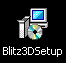
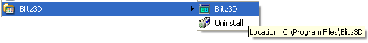
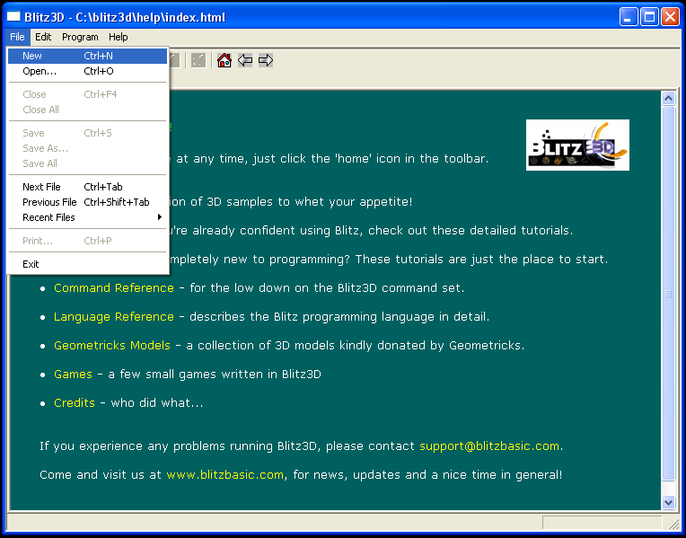

Blitz3D Programming Manual
Quick Contents
Contents
Introduction
Getting Started
Installing and Running Blitz3D
Installing Blitz3D
To install the Blitz3D software on your computer you should
have received installer software featuring the following icon.

By running this setup software you will be asked to confirm
a small number of options and then, following a short pause,
the Blitz3D programming language will be installed and
available for use.
Creating your first program
Once you have successfully installed Blitz3D on your Windows
computer an entry for Blitz3D can be found in the desktop's
start menu as illustrated.

Selecting the Blitz3D icon will launch the Blitz3D program
editor where your own programs can be created.

Selecting the New option from the File menu will create a blank
program which you should modify according to the following
instructions to become familiar with the Blitz3D development
cycle.
Checking out the samples
Using the Help system
The Blitz3D Debugger
File Menu Commands
The BlitzBASIC Language
Language Reference
Keywords
The following keywords are built into Blitz, and may not be used as
identifiers (variables, function names, labels, etc.):
After, And, Before, Case, Const, Data, Default, Delete, Dim, Each, Else,
ElseIf, End, EndIf, Exit, False, Field, First, Float, For, Forever, Function,
Global, Gosub, Goto, If, Insert, Int, Last, Local, Mod, New, Next, Not, Null,
Or, Pi, Read, Repeat, Restore, Return, Sar, Select, Shl, Shr, Step, Str,
Then, To, True, Type, Until, Wend, While, Xor, Include
You add comments to your programs using the ';' character.
Everything following the ';' until the end of the line will be
ignored, this is useful for commenting your code - so you can
always look through and follow each line in a logical manner.
The following code shows comments in use;
Identifiers
Identifiers are used for constant names, variable names, array
names, function names and custom type names.
Identifiers must start with an alphabetic character, and may be
following be any number of alphanumeric characters, or the
underscore ('_') character.
Indentifiers are not case sensitive.
For example, 'Test', 'TEST' and 'test' are all the same identifiers.
However, it is allowed for identifiers to be reused for functions and custom types names.
For example, you can have a variable called 'test', a function called 'test' and custom type name called 'test'. Blitz will be able to tell which one you are refering to by the context in which it is used.
Data Types
There are 3 basic data types:
Integer values are numeric values with no fractional part in them.
For example: 5,-10,0 are integer values.
All integer values in your program must be in the range -2147483648 to +2147483647.
Floating point values are numeric values that include a fractional part.
For example: .5, -10.1, 0.0 are all floating point values.
Strings values are used to contain text.
For example: "Hello", "What's up?", "***** GAME OVER *****", ""
Typically, integer values are faster than floating point values, which
are themselves faster than strings.
Constants
Constants may be of any basic data type. Constants are variables that have
fixed values that will not change (ever) during the course of your program.
These are useful tools for things like screen resolution variables, etc.
Floating point constants must include a decimal point.
For example:
'5' is an integer constant, but '5.0' is a floating point constant.
String constants must be surrounded by quotation marks.
For example:
| Example |
"This is a string constant".
|
The 'Const' keyword is used to assign an identifier to a constant.
For example:
| Example |
Const one_hundred=100
|
You can then use the identifier 'one_hundred' anywhere in your
program instead of '100'.
A more useful example might be:
| Example |
Const width=640,height=480
|
You can then use the more readable 'width' and 'height' throughout
your program instead of '640' and '480'.
Also, if you ever decide to change the width and height values, you
only have to do so at one place in the program.
There are two built-in Integer constants - 'true' and 'false'.
'true' is equal to 1, and 'false' is equal to 0.
There is also a built in floating point constant for Pi.
Variables
Variable Types
Variables may be of any basic data type, or a custom type.
A variable's type is determined by a special character that follows its identifier.
These special characters are called 'type tags' and are:
| Type Tag | Description |
|---|
| % | For integer variables |
| # | For floating point variables |
| $ | For string variables |
| .{typename} | For custom type variables |
Here are some examples of valid variables:
| Example |
Score%
Lives%
x_speed#
y_speed#
name$
title$
ali.Alien
player.Player
|
The type tag only needs to be added the first time you use a variable,
after that you can leave the type tag off if you wish.
If you don't supply a type tag the first time a variable is used, the
variable defaults to an integer.
It is illegal to use the same variable name with a different type.
For example, if you already have an integer variable called 'name%',
it is illegal to also have a string variable called 'name$'
Setting Variables
The '=' keyword is used to assign a value to a variable. For example:
| Example |
score%=0
|
assigns the value '0' to the integer variable 'score'.
Variable Scope
Variables may also be either 'global', or 'local'.
This refers to where in a program a variable may be used.
- Global variables can be used from anywhere in the program.
- Local variables can only be used within the function they are created in.
The 'Global' keyword is used to define one or more global variables.
For example:
| Example |
Global Score=0,Lives=3,Player_up=1
|
defines 3 global variables.
Similarly, 'Local' is used to define local variables:
| Example |
Local temp_x=x,temp_y=y
|
If you use a variable without defining it as either local or global,
it defaults to being local.
Arrays
Arrays are created using the standard BASIC 'Dim' statement, and
may be of any number of dimensions.
For example:
| Example |
Dim arr(10)
|
Creates a one dimensional array called 'arr' with 11 elements
numbered 0...10.
Arrays may be of any basic type, or a custom type.
The type of an array is specified using a type tag.
For example:
| Example |
Dim Deltas#(100)
|
Creates an array called 'Deltas' of 101 floating point elements.
If the type tag is omitted, the array defaults to an integer array.
An array may be dimensioned at more than one point in a program, each
time an array is dimensioned, it's previous contents are discarded.
Arrays may be dimensioned inside functions, but a corresponding 'Dim'
statement of the same array must also appear somewhere in the main
program.
For example:
| Example |
Dim test(0,0)
Function Setup( x,y )
Dim test(x,y)
End Function
|
Expressions
The following operators are supported, listed in order of precedence:
| operator | type |
|---|
| New First Last | custom type operators (unary) |
| Before After | object operators (unary) |
| Int Float Str | type conversion operators (unary) |
| + - ~ | arithmetic posate(?) negate bitwise complement (unary) |
| ^ | arithmetic 'to-the-power-of' (binary) |
| * / Mod | arithmetic multiply; divide; remainder (binary) |
| Shl Shr Sar | bitwise shift operators (binary) |
| + - | arithmetic add; subtract (binary) |
| < > <= >= = <> | comparison operators (binary) |
| And Or Xor | bitwise And Or and Exclusive Or (binary) |
| Not | logical Not (unary) |
Unary operators take one operand, while binary operators take two.
Arithmetic operators produce a result of the same type as the
operands. For example, adding two integers produces an integer
result.
If the operands of a binary arithmetic or comparison operator
are not of the same type, one of the operands is converted
using the following rules:
If one operand is a custom type object, the other must be
an object of the same type, or 'Null'.
Else if one operand is a string, the other is converted to a string.
Else if one operand is floating point, the other is converted to
floating point.
Else both operands must be integers.
When floating point values are converted to integer, the value is
rounded to the nearest integer. When integers and floating point
values are converted to strings, an ascii representation of the
value is produced.
When strings are converted to integer or floating point values,
the string is assumed to contain an ascii representation of a
numeric value and converted accordingly. Conversion stops at
the first non-numeric character in the string, or at the end
of the string.
The only arithmetic operation allowed on string is '+', which
simply concatenates the two operands.
Int, Float and Str can be used to convert values.
They may be optionally followed by the appropriate type
tag - ie: 'Int%', 'Str$' and 'Float#'.
Comparison operators always produce an integer result: 1 for true,
0 for false.
If one of the operators is a custom type object, the other must
be an object of the same type, or 'Null', and the only comparisons
allowed are '=' and '<>'.
Bitwise and logical operators always convert their operands to
integers and produce an integer result.
The Not operator returns 0 for a non-zero operand, otherwise 1.
When an expression is used to conditionally execute code - for
example, in an 'If' statement - the result is converted to an
integer value. A non-zero result means true, a zero result
means false.
The following constructs are available for controlling program flow.
| Example |
If ... Then
If {expression} Then {statements1} Else {statements2}
|
Evaluates the 'If' expression and, if true, executes the 'Then' statements.
If false, the 'Else' statement are executed, the 'Else' part is optional -
statements are executed until the end of the line.
| Example |
If {expression1}
{statements1}
Else If {expression2}
{statements2}
Else If {expression3}
{statements3}
Else
{statements4}
EndIf
|
This form of the If statement allows for more than one line of statements.
The 'Else If' and 'Else' parts are optional. The 'Else' part is executed only
if none of the 'If' or 'Else If' expressions were true.
| Example |
While ... Wend
While {expression}
{statements}
Wend
|
A While loop continues executing until {expression} evaluates to false.
{expression} is evaluated at the start of each loop.
| Example |
For ... Next
For {variable}={initalvalue} To {finalvalue} Step {step}
{statements}
Next
|
A For/Next loop first assigns {initialvalue} to {variable} and then
starts looping. The loop continues until {variable} reaches {finalvalue}
and then terminates. Each loop, the value {step} is added to {variable}.
If a step value is omitted, a default value of 1 is used.
| Example |
For {variable}=Each {typename}
{statements}
Next
|
This form of the For/Next loop allows you to iterate over all objects
of a custom type.
Program Flow
Repeat ... Until/Forever
| Example |
Repeat
{statements}
Until {expression}
|
A Repeat loop continues executing until {expression} evaluates to true.
{expression} is evaluated at the end of each loop.
| Example |
Repeat
{statements}
Forever
|
A Repeat/Forever loop simply executes {statements} until the program ends, or
an 'Exit' command is executed.
Select ... Case
| Example |
Select {expression}
Case {expressions1}
{statements1}
Case {expressions2}
{statements2}
Default
{statements3}
End Select
|
First the 'Select' expression is evaluated. It is then compared with each of
the 'Case' expression lists. If it matches a 'Case', then the statements in
the 'Case' are executed.
If the 'Select' expression matches none of the 'Case' expressions, the statements
in the optional 'Default' section are executed.
Breaking Out Of A Loop
The 'Exit' command may be used to break out of any For...Next, While...Wend,
Repeat...Until or Repeat...Forever loop.
Using Includes
Blitz also supports the 'Include' command. Include allows source code from an
external file to be compiled as if it were part of the main program. Include must be followed by a quote enclosed filename. For example...
| Example |
Include "anotherfile.bb"
|
Include allows you to break your program up into smaller, more manageable chunks.
Functions
About
A function is defined using the 'Function' keyword:
| Example |
Function {funcname}{typetag}( {params} )
{statements}
End Function
|
{funcname} is any valid identifier.
{typetag} is the type of value returned by the function.
If {typetag} is omitted, the function returns an integer value by default.
{params} is a comma separated list of variables which is passed to the
function when it is called, each parameter may be given an optional type
tag. Parameters are always local.
A function may use the 'Return' statement to return a result. Return may
optionally be followed by an expression.
If there is no Return statement, or a Return without any expression is
used, the function returns a default value of 0 for numeric functions,
an empty string ("") for string functions, or a 'Null' object for custom
type functions.
Custom Types
What Are They?
TYPE is your best friend. It is used to create a 'collection' of
objects that share the same parameters and need to be interated
through quickly and easily.
Think about SPACE INVADERS. There are many aliens on the screen
at one time. Each of these aliens have a few variables that they
all need: x and y coordinates plus a variable to control which
graphic to display (legs out or legs in). Now, we could make
hundreds of variables like invader1x, invader1y, invader2x,
invader2y, etc. to control all the aliens, but that wouldn't
make much sense would it?
You could use an array to track them; invader(number,x,y,graphic),
and the loop through them with a FOR ... NEXT loop but that
is a lot of work!
The TYPE variable collection was created to handle just this
sort of need.
TYPE defines an object collection. Each object in that collection
inherits its own copy of the variables defined by the TYPE's FIELD
command. Each variable of each object in the collection can be read
individually and can be easily iterated through quickly.
Use the FIELD command to assign the variables you want between
the TYPE and END TYPE commands.
If it helps, think of a TYPE collection as a database.
Each object is a record of the database, and every variable
is a field of the record. Using commands like BEFORE, AFTER,
and FOR ... EACH, you can move change the pointer of the
'database' to point to a different record and retrieve/set
the variable 'field' values.
Defining A Type
Custom types are defined using the 'Type' keyword. For example:
| Example |
Type MyType
Field x,y
End Type
|
Creates a custom type called 'MyType' with 2 fields - x and y.
Fields within a custom type may themselves be of any basic
type or custom type. Type tags are used to determine the
type of a field.
For example:
| Example |
Type MyType
Field x,y
Field description$
Field delta_x#,delta_y#
End Type
|
Creating a Type Instance
You can create variables or arrays of custom types using a '.'
type tag followed by the type name. For example:
| Example |
Global mine.MyType Dim all_mine.MyType( 100 )
|
Before a custom type variable or array element can be used, it
must be initialized using the 'New' operator.
For example:
| Example |
mine.MyType=New MyType
|
The 'New' operator creates an 'object' of type 'MyType', and
returns a 'pointer' to the new object. The identifier following
the 'New' operator must be a valid custom type name.
The fields within a custom type are accessed using the '\' character.
For example: mine\x=100 Print mine\x
Destroying a Type Instance
When you've finished with an object, you should delete it using
the 'Delete' command. For example:
| Example |
Delete mine
|
This releases the memory used by the object.
Determining Existance
The special keyword 'Null' is used to represent non-existent objects.
An object is non-existent if it hasn't been initialized yet using 'New',
or has been released using 'Delete'.
For example:
| Example |
mine.MyType=New MyType
If mine<>Null
Print "exists!"
Else
Print "doesn't exist!"
EndIf
Delete mine
If mine<>Null
Print "exists!"
Else
Print "doesn't exist!"
EndIf
|
...will print the following:
| Example |
exists!
doesn't exist!
|
Each custom type has an associated list of objects known as a 'type list'.
When an object is created using 'New', it is automatically added to the
type list. When an object is released using 'Delete', it is removed from
the type list.
This list is dynamic - once an instance has been deleted, its place in
the collection is deleted and all the other objects after it will
'move up' in the collection hiearchy.
Iteration Through Type Lists
The 'First', 'Last', 'After' and 'Before' operators allow you to access
type lists. The 'First' operator returns the object at the start of the
type list. For example:
| Example |
mine.MyType=First MyType
|
This sets the 'mine.MyType' variable to the first object of custom
type 'MyType'.
Similarly, 'Last' returns the object at the end of the list.
If the type list is empty, 'First' and 'Last' return 'Null'.
You can use 'After' to find the object after an object, and 'Before' to
find the object before an object.
For example:
| Example |
mine.MyType=First MyType ;mine=first object in the type list
mine=After( mine ) ;mine=second object
mine=After( mine ) ;mine=third object
mine=Before( mine ) ;mine=second object
mine=Before( mine ) ;mine=first again!
|
'After' and 'Before' return 'Null' if there is no such object. For example:
| Example |
mine.MyType=Last MyType ;mine=last object
mine=After( mine ) ;object after last does not exist!
|
When an object is created using 'New', it is placed at the end of
it's type list by default.
However, You can move objects around within the type list using Insert.
For example:
| Example |
mine1.MyType=New MyType
mine2.MyType=New MyType
Insert mine2 Before mine1
|
This has the effect of placing the 'mine2' object before the 'mine1'
object in the type list.
You can also use 'After' instead of 'Before' with Insert.
Here's an example of moving an object to the start of it's type list:
| Example |
Insert mine Before First MyType
|
A special form of For...Next allows you to easily iterate over all
object of a custom type. For example:
| Example |
For mine.MyType=Each MyType
Next
|
This will cause the variable 'mine.MyType' to loop through all existing
objects of cutom type MyType.
Finally, the 'Delete Each' command allows you to delete all objects
of a particular type. For example:
| Example |
Delete Each MyType
|
Type Conversion
| Int ( value[$] ) |
| Arguments |
| value | a number, or a string representation of a number |
|
| Description |
Converts the value to the nearest integer.
This is the same as BlitzBASIC's automatic type conversion where
floating point values are rounded to the nearest integer value and
string values are converted to 0 if they do not contain a series
of the decimal digits 0 to 9.
Int( "10" ) ... result is 10
Int( "3.7" ) ... result is 3, stops at "." the first non digit
Int( "junk3" ) ... result is 0, stops at "j"
In the case of floats that are exactly half way between two integers
the result returned is the nearest even integer.
Int( 2.5 ) ... result is 2
Int( 3.5 ) ... result is 4
|
| See Also |
Float Floor Ceil
|
| Float #( value[$] ) |
| Arguments |
| value | a number, or a string which represents a number |
|
| Description |
Converts the value to a floating point number.
Converting an integer variable to a float is useful when a calculation
using integer values in fact requires floating point precision:
a=5:b=3:Print a/b ... results in the value of 1 due to integer division
a=5:b=3:Print Float(a)/b ... results in 1.66667 due to floating point division
If Float is applied to a string it converts as much as possible:
Float( "10" ) ... result is 10.0
Float( "3junk" ) ... result is 3.0
Float( "junk3" ) ... result is 0.0
|
| See Also |
Int Floor Ceil
|
| Str $( value[#] ) |
| Arguments |
| value | integer, floating point number or user type |
|
| Description |
Str converts from an integer or floating point number to a BlitzBasic
String.
|
Logical Operators
| Not |
| Description |
The Not operator returns True if the argument is zero and False if nonzero.
|
| See Also |
True False
|
Integer Operators
| And |
| Description |
And performs a binary AND operation.
The binary result of an And operation contains only bits that are 1
in both arguments.
| A | B | A And B |
|---|
| 0 | 0 | 0 |
| 1 | 0 | 0 |
| 0 | 1 | 0 |
| 1 | 1 | 1 |
|
| See Also |
Or Not Xor
|
| Or |
| Description |
Or performs a binary OR operation.
The binary result of an Or operation contains bits that are 1
in either of the arguments.
|
| See Also |
And Not Xor
|
| Xor |
| Description |
Xor performs a binary Exclusive Or operation.
The binary result of an Xor operation contains only bits that are 1
in either but not both arguments.
| A | B | A Xor B |
|---|
| 0 | 0 | 0 |
| 1 | 0 | 1 |
| 0 | 1 | 1 |
| 1 | 1 | 0 |
|
| See Also |
And Or Not
|
| Shl shiftcount |
| Arguments |
| shiftcount | number of bits to shift left |
|
| Description |
Shl results in a value binary shifted left shiftcount bits.
|
| Shr shiftcount |
| Arguments |
| shiftcount | number of bits to shift right |
|
| Description |
Shr results in a value binary shifted right shiftcount bits.
|
| See Also |
Sar Shl
|
| Sar repetitions |
| Arguments |
| shiftcount | number of bits to arithmetically shift right |
|
| Description |
Sar results in a value arithmetic shifted right shiftcount bits.
Sar differs from Shr in that the most significant bit remains
after each shift generating a different result for negative numbers
than the equivalent Shr.
|
| See Also |
Shl Shr
|
Float Operators
| Pi |
| Description |
Pi is a BlitzBASIC float constant with a value of 3.141592.
|
| Sgn ( number# ) |
| Arguments | |
| Description |
This function is used to determine whether a number or value is
greater than 0, equal to 0 or less than 0.
|
| Abs ( number# ) |
| Arguments | |
| Description |
The Abs operator returns the absolute value of a number. The absolute
function returns the positive version of any negative values and returns
the same number for positive values.
|
| Mod ( number# ) |
| Description |
The result of the Mod operator is the remainder after dividing by
number.
|
Mathematical Functions
| Floor #( y# ) |
| Arguments | |
| Description |
Floor returns the largest integral value not greater than x.
Floor( 1.75 ) ... 1.0
Floor( -1.75 ) ... -2.0
|
| See Also |
Ceil Float Int
|
| Ceil #( y# ) |
| Arguments | |
| Description |
Ceil returns the smallest integral value not less than x.
Ceil( 1.75 ) ... 2.0
Ceil( -1.75 ) ... -1.0
|
| See Also |
Floor Float Int
|
| Sqr #( value# ) |
| Arguments |
| value# | any floating point number |
|
| Description |
Sqr returns the square root of the specified value.
|
| Exp #( x# ) |
| Arguments | |
| Description |
Exp is the same as performing the function e^x where e = 2.71828.
For the curious, e is defined by the sum of the following series:
2 + 1/(2) + 1/(2*3) + 1/(2*3*4) + 1/(2*3*4*5) + ...
|
| See Also |
Log
|
| Log #( x# ) |
| Arguments | |
| Description |
Log returns the natural logarithm of x. This is the inverse of Exp( ).
y = Log( x ) means y satifies x = Exp( y ).
The base of the natural logarithm is e = Exp(1) = 2.71828...
|
| See Also |
Exp Log10
|
| Log10 #( x# ) |
| Arguments | |
| Description |
Log10 returns the common logarithm of x. This is the inverse of raising 10 to a power.
y = Log10( x ) means y satifies x = 10 ^ y.
|
| See Also |
Log
|
Trigonometry Functions
| Sin #( x# ) |
| Arguments | |
| Description |
Sine of an angle. The angle is measured in degrees.
|
| See Also |
ASin Cos ACos Tan Atan ATan2
|
| Cos #( x# ) |
| Arguments | |
| Description |
Cosine of an angle. The angle is measured in degrees.
|
| See Also |
ASin Cos ACos Tan Atan ATan2
|
| Tan #( x# ) |
| Arguments | |
| Description |
Tangent of an angle. The angle is measured in degrees.
In trigonometry, tangent is defined as sine divided by cosine.
|
| ASin #( x# ) |
| Arguments |
| x | a number in the range -1.0 to +1.0 |
|
| Description |
ASin returns the inverse Sine of the number in degrees.
|
| ACos #( x# ) |
| Arguments |
| x | a number in the range -1.0 to +1.0 |
|
| Description |
ACos returns the inverse Cosine of the number in degrees.
|
| ATan #( x# ) |
| Arguments | |
| Description |
ATan returns the arctangent of the number in degrees.
|
| See Also |
ATan2
|
| ATan2 #( y#,x# ) |
| Arguments | |
| Description |
ATan2 returns the four quadrant inverse tangent of the coordinate
located at (x,y) in degrees.
ATan2 is useful for finding the angle in degrees between two points.
Given two points (x1,y1) and (x2,y2) Atan2(y2-y1,x2-x1) will return
the angle the second point is located relative to the first.
Note the reverse order, ATan2( y, x ) rather than ATan2( x, y).
|
Random Number Functions
| Rnd #( start#,end# ) |
| Arguments |
| start# | Lowest value to generate |
| end# | Highest value to generate |
|
| Description |
The Rnd function returns a floating point number somewhere between
the start and end number.
The start and end values are inclusive.
Rnd is the floating point version of the Rand function.
See the SeedRnd command to avoid receiving the same sequence
of random numbers each time your program is run.
|
| See Also |
Rand SeedRnd
|
| Rand ( [lowvalue,]highvalue ) |
| Arguments |
| low value | lowest value or result, defaults to 1 |
| high value | highest value of result |
|
| Description |
The Rand function returns an integer number somewhere in value
between the low and high values specified inclusive.
Rand is the integer version of the Rnd function.
The low value defaults to 1 if no value is specified.
The high value is the highest number that can be randomly generated.
See the SeedRnd command to avoid receiving the same sequence
of random numbers each time your program is run.
|
| See Also |
Rnd SeedRnd
|
| SeedRnd seed |
| Arguments | |
| Description |
The SeedRnd command seeds or scrambles the random number generator.
Typically the value used is that returned by the MilliSecs function
which effectively randomizes the subsequent sequence of numbers returned
by the Rnd and Rand functions.
A constant seed may be used for programs that require the
same series of random numbers to be generated.
See the RndSeed function to read the current seed value of the
random number generator.
|
| See Also |
Rand Rnd RndSeed
|
| RndSeed ( ) |
| Description |
Returns the current random number seed value.
This allows you to 'catch' the state of the random generator, usually for
the purpose of restoring it later.
The random number seed is modified with the SeedRnd command
and is also modified every time a random number is generated
by calling the Rnd and Rand functions.
|
String Functions
| Left $( string$,length ) |
| Arguments |
| string$ | a valid string variable |
| length | a valid integer value up to the length of the string. |
|
| Description |
Use Left to copy a certain number of characters from the left side of a string.
Typically used to truncate strings to a maximum length.
If length is larger than the length of the string an unmodified copy of string is returned.
|
| See Also |
Right Mid
|
| Right $( string$,length ) |
| Arguments |
| string$ | a valid string variable |
| length | the number of characters on the right to return |
|
| Description |
Use Right to copy a certain number of characters from the right side of a string.
If length is larger than the length of the string an unmodified copy of string is returned.
|
| See Also |
Left Mid
|
| Mid $( string$,offset,characters ) |
| Arguments |
| string$ | a valid string |
| offset | location within the string to start reading |
| characters | how many characters to read from the offset point |
|
| Description |
Use Mid to fetch a substring of length characters from position offset
in a string.
The offset value is 1 based, meaning 1 not 0 signifies the first character
of the string.
If the offset or offset plus length extends beyond the length of the string
the return value is cropped appropriately.
|
| See Also |
Left Right
|
| Replace $( string$,find$,replace$ ) |
| Arguments |
| string$ | a valid string variable |
| find$ | a valid string |
| replace$ | a valid string |
|
| Description |
The Replace command replaces any occurance of the characters in find$
with the characters in replace$ similar to the way in which a wordprocessor's
find and replace feature works.
If replace$ is an empty string Replace can be used to remove entirely
any occurances of find$ from string$.
|
| See Also |
Instr
|
| Instr ( string1$,string2$,offset ) |
| Arguments |
| string1$ | the string you wish to search |
| string2$ | the string to find |
| offset | valid integer starting position to being search (optional) |
|
| Description |
The Instr command searches for an occurance of string2 within string1
starting at the optional position offset.
The command returns the location (number of characters from the left) of
the string you are looking for.
Instr returns 0 if no match is found.
The result of Instr and the offset parameter are both 1 based, meaning
1 and not 0 represent the first character of the String.
|
| Upper $( string$ ) |
| Arguments |
| string$ | a valid string or string variable |
|
| Description |
Upper replaces any lower case charcters in string with their upper case
equivalents.
|
| See Also |
Lower
|
| Lower $( string$ ) |
| Arguments |
| string$ | a valid string variable |
|
| Description |
Lower replaces any upper case charcters in string with their lower case
equivalents.
|
| See Also |
Upper
|
| Trim $( string$ ) |
| Arguments | |
| Description |
Trim returns a string with any leading and trailing non printable characters
such as spaces removed.
|
| LSet $( string$,length ) |
| Arguments |
| string$ | a valid string or string variable |
| length | size of string to return measured in characters |
|
| Description |
LSet returns a string with the specified length by padding the
specified string with spaces.
|
| RSet $( string$,length ) |
| Arguments |
| string$ | a valid string or string variable |
| length | size of returned string measured in bytes |
|
| Description |
RSet returns a string with the specified length by padding the
specified string with spaces. Unlike LSet the padding is added
to the left side of the result effectively right justifying the
specified string.
|
| Chr $( integer ) |
| Arguments |
| integer | valid ASCII code in the range 0..255 |
|
| Description |
Use Chr to convert a known ASCII code (for example 65) to its character
string equivelant (i.e. the letter "A").
|
| Asc ( string$ ) |
| Arguments |
| string$ | a valid string variable |
|
| Description |
Asc returns the ASCII value of the first letter of the specified string.
|
| Len ( string$ ) |
| Arguments |
| string$ | a valid string variable |
|
| Description |
Len returns the length (number of characters) of the specified string.
|
| Hex $( integer ) |
| Arguments |
| integer | any integer number |
|
| Description |
Hex converts any integer value into it's hexadecimal representation.
|
| Bin $( integer ) |
| Arguments |
| integer | any integer number |
|
| Description |
Bin converts any integer value into it's binary representation.
|
| String $( string$,count ) |
| Arguments |
| string$ | a valid string or string variable |
| count | the number of times to repeat the string |
|
| Description |
The String command makes a string by repeating the specified string
bt the specified number of times.
|
Flow Control
| End |
| Description |
The End command causes the program to finish executing immediately.
|
| See Also |
Stop
|
| If |
| Description |
If executes a code block only if the included expression evaluates to True.
Use this to check the value of a variable or to see if a condition is True or False.
The code between If and EndIf is executed if the condition is True.
Use Else to execute alternative code when the expression is not True.
Use the Not operator at the beginning of an expression to execute code
if the expression evaluates to False.
Lastly, a sequence of ElseIf commands can be written when a series
of exclusive conditions need to be tested.
If you get too deep in condition checking, consider using a Select structure instead.
|
| See Also |
Then Else ElseIf EndIf True False Select
|
| Then |
| Description |
The Then statement is an optional command that can be used to separate
the expression following an If statement and the code to be executed.
|
| See Also |
If Else ElseIf EndIf Select
|
| Else |
| Description |
The Else statement allows you to split code following an If statement
into that which will be executed if the If expression evaluates to True
and that while will be execute otherwise.
|
| See Also |
If Then ElseIf EndIf Select
|
| ElseIf |
| Description |
The ElseIf statement evaluates a further expression to that which failed
in the preceeding If allowing code following the ElseIf to be executed
only if the original If expression evaluates to False and the condition
following the ElseIf evaluates to True.
|
| See Also |
If Then Else ElseIf EndIf Select
|
| Select variable |
| Arguments | |
| Description |
The Select command uses the value of a variable to define which
of the Case code blocks following the Select command are executed.
A special Default code block can also be included that will be
executed if NONE of the Cases match the variable's value.
A Select structure must be terminated with the EndSelect command.
A Select Case block can be a tidy alternative to a large nested
If Then ElseIf sequence.
|
| See Also |
Case Default True False If
|
| Case value[,value[,value...]] |
| Arguments |
| value | a valid value of the Select variable |
|
| Description |
When using a Select structure, the Case command defines the starting point
of a code block that is executed when the preceeding Select value matches
any of the Case values listed.
|
| See Also |
Select Default EndSelect
|
| For counter |
| Arguments |
| counter | an integer, float or custom type variable |
|
| Description |
A For ... Next loop using a specified counter variable, executes
the code block between the For and Next commands for each value
of the counter.
The counter is initialized to the specied value and incremented
by either 1 or the value specified after the optional Step keyword
until it reached the value specified after the To keyword.
A special version of the For ... Next command is available in Blitz
that uses a custom type variable and the Each keyword to iterate
through each instance of a specified custom type.
|
| See Also |
To Step Each Next Exit While Repeat
|
| To targetvalue |
| Arguments |
| targetvalue | an integer or float constant or variable |
|
| Description |
The To keyword is used as part of a For ... Next command to
specify the final value for the counter variable before the loop
ends.
|
| See Also |
For Next Step
|
| Step amount |
| Arguments |
| amount | any integer or floating point constant |
|
| Description |
The Step keyword specifies the amount added to the counter variable
with each iteration of a For ... Next loop.
Step can be a negative number but can not be a variable amount.
|
| See Also |
For To Each Next
|
| Repeat |
| Description |
The Repeat ... Until structure allows you to perform a series of commands
until a specific condition has been met.
Unlike a While ... Wend loop, a Repeat .... Until will ALWAYS execute
the enclosed code block atleast once.
|
| See Also |
Until Forever Exit While
|
| Until condition |
| Arguments |
| condition | a valid expression |
|
| Description |
The condition following the Until command is used to decide if program
execution loops back to the beginning of the Repeat code block or continues
on.
|
| See Also |
Repeat Forever Exit While For
|
| While condition |
| Arguments |
| condition | a valid conditional statement |
|
| Description |
The While ... Wend structure is used to execute a block of commands
repeatedly.
Unlike a Repeat ... Until structure the loop condition follows the While
command at the beginning of the block and so can be used when the situation
dictates the code block may never be executed.
|
| See Also |
Wend Exit Repeat For
|
| Goto label |
| Arguments |
| label | an existing program label |
|
| Description |
The Goto command is used to jump to the location of a Blitz program
marked with the specified label. A program label is declared in a Blitz
program by preceeding the label name with a period.
|
| See Also |
Exit Gosub Function
|
| Gosub label |
| Arguments |
| label | a valid exisiting label |
|
| Description |
Gosub is similar to the Goto statement but the current location in
the program is stored before execution jumps to the specified label.
The Return statement can then be used to return program execution
back to where the Gosub call occurred.
Although Gosub is useful for executing the same code from various
points of a program use of Function's is the recomended way to
implement subroutines in Blitz programs.
|
| See Also |
Return Function Goto
|
| Return [value] |
| Arguments |
| value | optional integer, float, string or custom type |
|
| Description |
Return is used from within a Function or at the end of a labeled subroutine
called with Gosub to return control back to where it was called.
Return can pass a value back to the calling function of the type declared
in the function name.
No value can be returned when used with Gosub.
|
| See Also |
Function Gosub
|
Function Declarations
| Function name[type]( [argument[,argument...]] ) |
| Arguments |
| name | a valid name that is not a Blitz keyword |
| type | any type specifier - default is integer |
| argument | a list of comma separated variable names |
|
| Description |
A Function declaration is used to define a code block most commonly known
as a subroutine. The code defined in a Function is only executed when
the function is called, that is it's name is used somewhere in a program
in similar manner to the way the inbuilt Blitz commands are called.
When a Function is called any parameters specified are assigned to the
argument variables declared in the Function declaration.
The code inside a Function has it's own name space. This means any
variables declared inside the Function are lost at the end of the Function
or following the Return statement. This also means that only variables
declared outside the function as Global or Const are accessible from
the code within a Function.
|
| See Also |
Return Gosub Local Global
|
Variable Declarations
| Const variable=value |
| Arguments |
| variable | a valid integer, float or string variable name |
| value | a constant number or string literal |
|
| Description |
Const declares a variable as a constant (a variable whose value
will never change and cannot be changed) and assigns the specified
value to it.
|
| See Also |
Global Local Dim
|
| Global variable |
| Arguments |
| variable | a valid variable name |
|
| Description |
Global variables are used for values that must be accessible from
with program functions as well as the main program code.
Global fixed size arrays can be created by appending an
optional [size] declaration after the variable name and optional
type.
|
| See Also |
Local Const Dim Function
|
| Local variable |
| Arguments |
| variable | a valid variable name |
|
| Description |
Local variables are used for values that need not be shared with
code defined within a Function.
Variables in Blitz are automatically assumed to be Local if they have
not been declared as Global or Const prior to their first use.
Local fixed size arrays can be created by appending an
optional [size] declaration after the variable name and optional
type.
|
| See Also |
Global Const Dim Function
|
| Dim array_name[type]( dimension1[,dimension2][,...] ) |
| Arguments |
| array_name | array name |
| type | optional type specifier - defaults to integer |
| dimension1 | size of first dimension |
| dimension2 | size of second dimension etc. |
|
| Description |
The Dim statement both declares a variable as an Array of the
specified Type and allocates enough storage space to accomadate
the size of the dimensions specified.
An Array variable is used to contain a list or table of values
of the same type.
A one dimensional array is created by specifying a single dimension
and creates a list of values that can then be indexed using the
arrayname[index] syntax where index is any integer value between
0 and dimension1 inclusive.
A multi dimensional array is created by specifying multiple
dimension sizes which then creates a table that can be indexed
using the arrayname[index1,index2] syntax.
Arrays are always Global in scope, and must be defined in the
main program.
Arrays can be resized by using the Dim statement again with the
same array name and different dimensions, however the contents
of the array will be lost.
Fixed size single dimension arrays that can be used in both
Local scope and Type Field's are an alternative. To specify
a fixed size array the variable should be declared with a
constant dimension specified in square brackets following
it's type such as Local a#[20].
|
| See Also |
Global Local Field
|
User Types
| Type typename |
| Arguments |
| typename | the name of the type to be declared |
|
| Description |
The Type ... End Type declaration allows the definition of a user
type in Blitz.
User types allow the storage of a collection of values within a single
variable. Unlike an array, the elements in a Type known as Field's
do not themselves all have to be the same type.
Type's are similar in design to records in a database and structs
in the C programming language.
A variables declared as a certain user type means it will be used to
reference an instance of a user type as opposed to actually being
allocated storage to contain the data itself.
User typed variables begin their life as Null meaning the variable
is used to reference data of the specified Type but currently
does not point to an actual instance of such data.
The New command is used to allocate actual storage for the
values declared in a Type. The Delete command is used to
free that storage area.
Blitz maintains an internal list of all instances of each Type
so instead of maintaining references in single variables or
Arrays of types the commands Each, First, Last, Before and After
can be used to reference instances within the list of all Types
that have been created.
|
| See Also |
Field New Delete Null First Last Before After Insert
|
| Field variable[,variable[,variable]...] |
| Arguments |
| variable | standard variable declaration |
|
| Description |
A Field declaration is used with a Type ... EndType structure
to declare the named elements that make up the Type.
Field variables may be of any type including User Type's and
fixed arrays.
|
| See Also |
Type EndType
|
| New typename |
| Arguments |
| typename | any previously defined user type |
|
| Description |
The New command allocates storage to contain the values as listed
in the Fields of the specified Type's declaration.
New not only returns a pointer to the storage that can be assigned
to a variable of type Type but adds the instance to an internal
list for that specific Type.
|
| See Also |
Type Delete Before After First Last Each Insert Delete
|
| Delete variable |
| Arguments |
| variable | a custom Type variable |
|
| Description |
The Delete command frees up the storage allocated by the referenced
instance of the Type and sets all variables that references that type
including the one specified to Null.
A special form of Delete allows the removal of all instances of a certain
Type by using the Delete Each TypeName syntax.
|
| See Also |
New Type
|
| Null |
| Description |
Null is the value given to any custom type variables that are not
currently referencing a particular instance of that Type.
Care should be taken that variables are not Null before using them
to reference fields to avoid an "Object Does Not Exist" runtime
error.
Custom Type variables can be compared with the value Null for such
purposes and assigned the value Null in order to signify they
are currently "unassigned" to an actual instance of the Type
created with the New command.
The Delete command automatically sets any user type variables
to Null that referenced the object being deleted.
|
| See Also |
Delete Type New
|
| Each typename |
| Arguments |
| typename | the name of a previously declared Type structure |
|
| Description |
The Each operator can be used in two ways.
The For ... Each loop provides a method of easily iterating through
each object of a specified Type.
The Delete Each command combination is an easy method of deleting
every object of the specified Type.
|
| See Also |
Type New Before After First Last Insert Delete
|
| First typename |
| Arguments |
| typename | the name of a previously declared Type structure |
|
| Description |
The First operator can be used to either assign the first member
in a Type's internal list to a variable or following an Insert
command to specify the specified object be moved to the beginning
of the list.
|
| See Also |
Insert Last Type
|
| Last typename |
| Arguments |
| typename | the name of a previously declared Type structure |
|
| Description |
The Last operator can be used to either assign the last member
in a Type's internal list to a variable or following an Insert
command to specify the specified object be moved to the end
of the list.
|
| See Also |
Insert First Type
|
| Before typeinstance |
| Arguments |
| typeinstance | a custom type variable |
|
| Description |
The Before operator can be used to either assign the object that
appears before that specified to a variable or following an Insert
command to specify the location at which to insert the object.
|
| See Also |
Insert After Type
|
| After typeinstance |
| Arguments |
| typeinstance | a custom type variable |
|
| Description |
The After operator can be used to either assign the object that
appears after that specified to a variable or following an Insert
command to specify the location at which to insert the object.
|
| See Also |
Insert After Type
|
| Insert objectname |
| Description |
The Insert command allows objects in a Type collection to be reordered.
Usualy the order of objects in the Type's internal list is the order they
were created as the New comand always appends the new object to the end
of the list.
The Insert command can be used to position objects in a particular location
in the list by using the First, Last, Before or After commands.
This is useful for sorting a list as in the following example.
|
| See Also |
First Last Before After New Type
|
| Handle ( object ) |
| Arguments |
| object | an instance of a custom type |
|
| Description |
The Handle command allows you to retrieve an integer handle for a specific
instance of a custom type.
Because the result is an integer, Handle allows a reference to any type
of object to be stored in a standard integer variable where custom type
variables may only reference objects of a single specified type. This freedom
opens the door for those wishing to implement more abstract functions that
can deal with multiple types of data.
|
| See Also |
Object
|
| Object .typename( objecthandle ) |
| Arguments |
| typename | the custom type the Object function should return |
| objecthandle | an integer handle produced by the Handle function |
|
| Description |
The Object function takes the integer handle of an object and
if it exists returns an actual reference to the object given it
is of the Type specified.
|
| See Also |
Handle
|
Program Data
| Data list_of_values |
| Arguments |
| list_of_values | a list of comma delimited values (strings must be inside quotes) |
|
| Description |
The Data statement is used to embed lists of constant values within
a program as an alternative to reading them from an external file.
The values are assigned to variables using the Read command.
The current data pointer which moves through the Data after each
Read command can be repositioned using the Restore command.
|
| See Also |
Read Restore
|
| Read variable[,variable[,variable...]] |
| Arguments |
| variable | an integer, float or string variable |
|
| Description |
The Read command reads the next value from a program's Data statements
and assigns it to the specified variable.
You can read multiple values at one time by supplying a list of variables
to the Read statement: Read X,Y,Z for example.
|
| See Also |
Data Restore
|
| Restore label |
| Arguments | |
| Description |
The Restore command is used to reposition the internal data pointer that
is used to fetch values for the Read command from a program's Data
statements.
A program label is declared in a Blitz program by preceeding the label
name with a period.
|
| See Also |
Read Data
|
Compiler Directives
| Include filename$ |
| Arguments |
| filename$ | name of an existing .bb source file |
|
| Description |
The Include command allows a large program to be split into small
chunks.
The Blitz compiler internally replaces any Include declarations
in a program with the actual lines from the file specified.
|
Application Control
| AppTitle title$[,close_prompt$] |
| Arguments |
| title$ | the text to be used in a program's task bar entry and any window title |
| close_prompt$ | the text displayed after the user tries to close a program window |
|
| Description |
AppTitle sets the application's name, affecting the application's taskbar
entry, and the titlebar of any Graphics and Graphics3D windows.
An optional close_prompt will prompt the user to confirm closing and
application window using the specified text.
The defaut is no close_prompt which results in the program ending immediately
if the user clicks the close button of a program's graphics window.
|
| See Also |
End Graphics Graphics3D
|
| CommandLine $( ) |
| Description |
Returns the command line arguments if any specified when the program
was run.
CommandLine arguments are useful for running a program in a variety
of modes either specified by the user from an actual command line
or more commonly specified in shortcut icons created to invoke the
application in a variety of modes.
The Blitz3D IDE allows the simulation of command line arguments
during development with the Command Line Argument option that can
be found in the Blitz3D editor's Program menu.
|
| RuntimeError message$ |
| Arguments |
| message$ | explanation text to display to the user |
|
| Description |
If you program encounters a critical error such as a
the result of a LoadImage command was 0 you can
end the program with an appropriate error message
displayed to the user using the RuntimeError command.
|
| See Also |
End Stop
|
| Stop |
| Description |
In debug mode the Stop command causes the program to
halt and the Blitz3D Debugger to be activated.
Stopping a program at a certain break point allows all
variables in use to be examined in the Debugger, a
process which may provide a better understanding of
the behavior or mis-behavior of the program being debugged.
Once a program is Stopped, execution may be resumed
until the next Stop command is encountered or the
Blitz3D Debugger may be used to step through the
program a line at a time.
|
| See Also |
DebugLog End
|
| DebugLog message$ |
| Arguments |
| message$ | message text string value |
|
| Description |
In debug mode the message specified is output to the
log window of the Blitz3D debugger.
DebugLog can be used to log information relevant
to the programs execution in places of uncertain behavior
with the resulting log providing a programmer with
details that can lead to fuller understanding of
its execution state.
As the Blitz3D Debugger is only available when a
program is in a stopped state and closes completely
in the case of an End statement programmers may
choose to implement their own file based DebugLog
function to be called instead.
|
| See Also |
Stop
|
Graphics Commands
Graphics
| Graphics width,height[,depth][,mode] |
| Arguments |
| width | width of display in pixels |
| height | height of display in pixels |
| depth | color depth in bits, 0 = default |
| mode | video mode flags, 0 = default |
|
| Description |
The Graphics command resizes the graphics display to the
specified size in pixels and with the specified display
properties including the color depth and fullscreen options.
When a Blitz3D program begins a default 400x300 pixel
graphics window is created.
The depth parameter is optional, the defaults value of 0
specifies that Blitz3D select the most appropriate color
depth.
The mode parameter may be any of the following values:
| mode | name | description |
|---|
| 0 | Default | FixedWindowed in Debug mode and FullScreen in Release |
| 1 | FullScreen | Own entire screen for optimal performance |
| 2 | FixedWindow | A fixed size window placed on the desktop |
| 3 | ScaledWindow | Graphics scaled according to current size of Window |
Before using Graphics to configure a fullscreen display,
the specified resolution should be verified as available
on the current graphics driver.
The GfxModeExists function will return False if the specified
resolution is not available. Calling Graphics with an unsupported
resolution will cause the program to fail with an "Unable to Set
Graphics Mode" error message.
|
| See Also |
GfxModeExists Graphics3D FrontBuffer BackBuffer Flip EndGraphics
|
| Flip [synch] |
| Arguments |
| synch | True (default) to synchronize flip to display |
|
| Description |
The Flip command switches the FrontBuffer() and BackBuffer()
of the current Graphics display.
See the BackBuffer command for a description on setting a
standard Graphics display up for double buffered drawing.
The ability to draw graphics to a hidden buffer and then
transfer the completed drawing to the display is called
double buffering.
The Flip command is used at the end of each drawing cycle
to display the results onto the display in a flicker free
manner.
The optional #synch value may be set to False to override
the default True setting. This may result in the program
updating the display many more times per second than the
screen is capable of displaying.
|
| See Also |
BackBuffer FrontBuffer
|
| FrontBuffer ( ) |
| Description |
The FrontBuffer function returns a Buffer that corresponds
to that viewable on the display.
Drawing to the FrontBuffer() can be used to display an image
that is progressively rendered. That is each main loop the
program does not include a Cls or Flip but continually draws
to the FrontBuffer allowing the user to view the image as it
is created over the period of minutes or hours.
|
| See Also |
BackBuffer
|
| EndGraphics |
| Description |
Returns the Graphics mode to the original 400x300 fixed
window.
|
| See Also |
Graphics
|
| VWait [frames] |
| Arguments |
| frames | optional number of frames to wait. Default is 1 |
|
| Description |
VWait will cause the program to halt execution until the
video display has completed it's refresh and reached it's
Vertical Blank cycle (the time during which the video
beam returns to the top of the display to begin it's next
refresh).
The VWait command provides an alternative method to using
the synchronized version of the Flip command (default)
which is useful on vintage computer hardware that does
not provide a properly synchonized Flip response.
Synching a games display using the VWait command will also
cause the program to exhibit excess CPU usage and should
be made optional if utilized at all.
|
| See Also |
Flip ScanLine
|
| ScanLine ( ) |
| Description |
The ScanLine function returns the actual scanline being
refreshed by the video hardware or 0 if in vertical blank
or unsupported by the hardware.
|
| See Also |
VWait Flip
|
| TotalVidMem ( ) |
| Description |
Returns the total amount of graphics memory present on the current graphics
device.
Use the AvailVidMem command to find the available amount of video memory
and the difference to calculate the amount of video memory currently in
use.
|
| See Also |
AvailVidMem SetGfxDriver
|
| AvailVidMem ( ) |
| Description |
Returns the available amount of graphics memory on the current graphics
device.
|
| See Also |
TotalVidMem SetGfxDriver
|
| SetGamma red,green,blue,dest_red,dest_green,dest_blue |
| Arguments |
| red | red input value |
| green | green input value |
| blue | blue input value |
| dest_red | red output value |
| dest_green | green output value |
| dest_blue | blue output value |
|
| Description |
SetGamma allows you to modify the gamma tables.
Gamma can ONLY be used in fullscreen mode.
Gamma is performed on a per channel basis, with each red, green and blue
channel using a translation table of 256 entries to modify the resultant
color output. The SetGamma command allows you to modify the specified
entry with the specified value for each of the 3 channels.
Suitable translation tables can be configured to influence
any or all of the 3 primary color components allowing the
displayed channel (red, green or blue) to be amplified,
muted or even inverted.
After performing one or more SetGamma commands, call UpdateGamma in
order for the changes to become effective.
|
| See Also |
UpdateGamma GammaRed GammeBlue GammaGreen
|
| UpdateGamma [calibrate] |
| Arguments |
| calibrate | True if the gamma table should be calibrated to the display |
|
| Description |
UpdateGamma should be used after a series of SetGamma commands in order to
effect actual changes.
|
| See Also |
SetGamma
|
| GammaRed ( value ) |
| Arguments |
| value | an integer index into the red gamma table |
|
| Description |
Returns the adjusted output value of the red channel given the
specified input #value by referencing the current gamma correction
tables.
See #SetGamma for more information
|
| See Also |
GammaGreen GammaBlue SetGamma
|
| GammaGreen ( value ) |
| Arguments |
| value | an integer index into the green gamma table |
|
| Description |
Returns the adjusted output value of the green channel given the
specified input #value by referencing the current gamma correction
tables.
See #SetGamma for more information
|
| See Also |
GammaRed GammaBlue SetGamma
|
| GammaBlue ( value ) |
| Arguments |
| value | an integer index into the blue gamma table |
|
| Description |
Returns the adjusted output value of the blue channel given the
specified input #value by referencing the current gamma correction
tables.
See #SetGamma for more information
|
| See Also |
GammaRed GammaGreen SetGamma
|
| Print [string$] |
| Arguments |
| string | the text to be output (optional) |
|
| Description |
The Print command writes a string version of value if specified to the
current graphics buffer at the current cursor position and moves the
cursor position to the next line.
If the optional string parameter is omitted the Print command simply
moves the cursor position down a line.
As Blitz automatically converts any numeric or custom type to a string
the string parameter can infact be any value.
|
| See Also |
Write Input Locate
|
| Write string$ |
| Arguments |
| string | the text to be output (optional) |
|
| Description |
The Write command is similar to the Print command but the cursor
is not moved to a new line at the completion of the command.
|
| See Also |
Print Locate
|
| Locate x,y |
| Arguments |
| x | horizontal position on the current graphics buffer in pixels |
| x | vertical position on the current graphics buffer in pixels |
|
| Description |
The Locate command positions the cursor position at the specified
pixel position of the current graphics buffer.
|
| See Also |
Print Write Input
|
2D Drawing
| Cls |
| Description |
The Cls command clears the current graphics buffer clean, using
an optional color specified with a previous call to ClsColor.
Cls has it's origins as an acronym of CLear Screen which is
appropriate if you consider the default drawing buffer is by
default the FrontBuffer of the current Graphics display.
Cls is not commonly called when using Graphics3D due to the
behavior of RenderWorld which clears the BackBuffer
using the various CameraClsMode settings instead.
|
| See Also |
ClsColor CameraClsMode
|
| Plot x,y |
| Arguments |
| x | horizontal pixel position |
| y | vertical pixel position |
|
| Description |
Plot draws a single pixel at the coordinates specified
using the current drawing color.
|
| See Also |
Line Rect Color
|
| Line x1,y1,x2,y2 |
| Arguments |
| x1 | start pixel's horizontal position |
| y1 | start pixel's vertical position |
| x2 | end pixel's horizontal position |
| y3 | end pixel's vertical position |
|
| Description |
The Line command draws a line, in the current drawing color,
from one pixel position to another.
.also
Plot;Rect;Color
|
| Rect x,y,width,height[,solid=True] |
| Arguments |
| x | horizontl pixel position |
| y | vertical pixel position |
| width | width in pixels |
| height | height in pixels |
| solid | False draws an outline only |
|
| Description |
The Rect command draws a rectangle.
It uses the current drawing color to draw a solid rectangle or
outlined if a False setting is specified for the #solid parameter.
.also
Plot;Line;Color
|
| Oval x,y,width,height[,solid=True] |
| Arguments |
| x | horizontl pixel position |
| y | vertical pixel position |
| width | width in pixels |
| height | height in pixels |
| solid | False draws an outline only |
|
| Description |
The Oval command can be used to draw circles and ovals in
solid or outline form.
The shape of the Oval drawn is the largest that can fit inside
the specified rectangle.
|
| Color red,green,blue |
| Arguments |
| red | amount of red (0..255) |
| green | amount of green (0..255) |
| blue | amount of blue (0..255) |
|
| Description |
This command sets the current drawing color allowing Lines,
Rectangles, Ovals and Pixels to be drawn in any color of the
rainbow.
The actual color is specified by 3 numbers representing
the amount of red, green and blue mixed together.
The following table demonstrates values of red, green and blue
required to specify the named colors:
| Color | Red | Green | Blue |
|---|
| Black | 0 | 0 | 0 |
| Red | 255 | 0 | 0 |
| Green | 0 | 255 | 0 |
| Blue | 0 | 0 | 255 |
| White | 255 | 255 | 255 |
|
| ClsColor red,green,blue |
| Arguments |
| red | amount of red (0..255) |
| green | amount of green (0..255) |
| blue | amount of blue (0..255) |
|
| Description |
The ClsColor command is used to change the Color used by the Cls
command.
See the Color command for combining values of red, green and blue
inorder to specify some commonly used colors.
|
| See Also |
Cls Color
|
| Origin x,y |
| Arguments |
| x | horizontal pixel position |
| y | vertical pixel position |
|
| Description |
The Origina command sets a point of origin for all subsequent
drawing commands.
The default Origin of a drawing buffer is the top left pixel.
After calling Origin, all drawing commands will treat the pixel
at location #x,#y as coordinate 0,0
|
| See Also |
Plot Line Rect Oval
|
| Viewport x,y,width,height |
| Arguments |
| x | horizontl pixel position |
| y | vertical pixel position |
| width | width in pixels |
| height | height in pixels |
|
| Description |
The Viewport command allows the cropping of subsequent drawing commands
to a rectangular region of the current graphics buffer.
|
| See Also |
Origin
|
| GetColor x,y |
| Arguments |
| x | horizontal pixel position |
| y | vertical pixel position |
|
| Description |
The GetColor command fetches the color of the pixel at the
specified coordinates on the current graphics buffer.
The ColorRed, ColorGreen and ColorBlue functions should
then be used to retrive the color components of the pixel
specified.
|
| See Also |
ColorRed ColorGreen ColorBlue
|
Text and Fonts
| Text x,y,string$[,centerX=False][,centerY=False] |
| Arguments |
| x | horizontal pixel position of top left enclosing rectangle |
| y | vertical pixel position of the top left enclosing rectangle |
| string$ | string/text to print |
| centerX | True to center text horizontally |
| centerY | True to center text vertically |
|
| Description |
The Text command prints the #string specified at the pixel
coordinate #x,#y.
Text uses the current font which can be modified with the
SetFont command and the current color which can be modified
with the Color command.
The optional centering parameters allow the specified pixel
position to be used as the center of the text printed rather
than representing the top left position of the region.
|
| See Also |
SetFont StringWidth StringHeight
|
| LoadFont ( fontname$[,height=12][,bold=False][,italic=False][,underlined=False] ) |
| Arguments |
| fontname$ | name of font to be loaded, e.g. "arial" |
| height | height of font in points (default is 12) |
| bold | True to load bold version of font |
| italic | True to load italic version of font |
| underlined | True to use underlined version of font |
|
| Description |
The LoadFont function loads a font and returns a font handle which can
subsequently used with commands such as SetFont and FreeFont.
|
| See Also |
SetFont
|
| FreeFont fonthandle |
| Arguments |
| fonthandle | A handle to a previously loaded font. |
|
| Description |
Use the FreeFont command when a font returned by the LoadFont
command is no longer required for text drawing duties.
|
| FontWidth ( ) |
| Description |
Returns the current width in pixels of the WIDEST character in
the font.
|
| See Also |
FontHeight SetFont
|
| FontHeight ( ) |
| Description |
Returns the current height in pixels of the currently selected font.
|
| See Also |
FontWidth SetFont
|
| StringWidth ( string ) |
| Arguments |
| string | any valid string or string variable |
|
| Description |
Returns the width in pixels of the specified string accounting
for the current font selected with the most recent SetFont
command for the current graphics buffer.
|
| See Also |
SetFont StringHeight
|
| StringHeight ( string ) |
| Arguments |
| string | any valid string or string variable |
|
| Description |
Returns the width in pixels of the specified string accounting
for the current font selected with the most recent SetFont
command for the current graphics buffer.
|
| See Also |
SetFont StringWidth
|
Images
| LoadImage ( filename$ ) |
| Arguments |
| filename$ | the name of the image file to be loaded |
|
| Description |
Reads an image file from disk.
Blitz3D supports BMP, JPG and PNG image formats.
| extension | compression | feature |
|---|
| .bmp | none | can be created with SaveImage command |
| .png | good | alpha channel support |
| .jpg | excellent | small loss in image quality |
The PNG image format is recomended for general use.
The LoadImage function returns an image handle that
can then be used with DrawImage to draw the image
on the current graphics buffer.
If the image file contains multiple frames of animation
use the LoadAnimImage function instead.
If the image file cannot be located or there is a
problem loading the LoadImage fail returns 0.
|
| See Also |
DrawImage LoadAnimImage CreateImage FreeImage SaveImage
|
| LoadAnimImage ( filename$,width,height,first,count ) |
| Arguments |
| filename$ | the name of the image file to be loaded |
| width | width in pixels of each frame in the image. |
| height | height in pixels of each frame in the image. |
| first | the frame to start with (usually 0) |
| count | how many frames contained in the imagestrip |
|
| Description |
The LoadAnimImage function is an alternative to
LoadImage that can load many frames of animation
from a single image file.
The frames must be drawn in similar sized rectangles
arranged from left to right, top to bottom on the
image source.
Animation is acheived by selecting a different frame
of animation to be used each time the image is drawn.
The optional #frame parameter of commands such as
DrawImage select a specific frame of animation
to draw of the specified #image loaded with this
command.
If the image file cannot be located or there is a
problem loading the LoadAnimImage fail returns 0.
|
| See Also |
DrawImage LoadImage
|
| CreateImage ( width,height[,frames] ) |
| Arguments |
| width | width in pixels of the new image |
| height | height in pixels of the new image |
| frames | optional number of frames |
|
| Description |
The CreateImage function returns a new image with the
specified dimensions in pixels containing an optional
number of animation frames.
Images need not be loaded from files but can instead be
created and modified by the program. Once an image
is created with CreateImage it can be used as the destination
of a GrabImage command or it's pixel buffer can be
accessed directly with the ImageBuffer command.
|
| See Also |
ImageBuffer FreeImage
|
| MaskImage image,red,green,blue |
| Arguments |
| image | a valid image handle |
| red | amount of red (0..255) |
| green | amount of green (0..255) |
| blue | amount of blue (0..255) |
|
| Description |
The color specified by mixing the #red, #green and #blue
amounts is assigned as the mask color of the specified
image.
When an image is drawn with the DrawImage, TileImage,
DrawRectImage any pixels in the image that are the
same color as the mask color are not drawn.
DrawBlock and other block based commands can be used to
draw an image and ignore the image's mask color.
By default an image has a mask color of black.
|
| See Also |
DrawImage
|
| ImageWidth ( image ) |
| Arguments |
| image | a valid image handle |
|
| Description |
Returns the width in pixels of the specified image.
Use this function and ImageHeight to ascertain the
exact pixel size of an image.
|
| See Also |
ImageHeight
|
| ImageHeight ( image ) |
| Arguments |
| image | a valid image handle |
|
| Description |
Returns the height in pixels of the specified image.
Use this function and ImageWidth to ascertain the
exact pixel size of an image.
|
| See Also |
Image=Width
|
| SaveImage ( image,bmpfile$[,frame] ) |
| Arguments |
| image | a valid image handle |
| bmpfile$ | the filename to be used when the image file is created |
| frame | optional frame of the image to save |
|
| Description |
SaveImage saves an image or one of its frames to a .bmp format
image file.
Returns True if the save was successful, False if not.
|
| See Also |
LoadImage
|
| FreeImage image |
| Arguments |
| image | a valid image handle |
|
| Description |
The FreeImage command releases all memory used by
the image specified.
Following a call to FreeImage the specified image handle
is no longer and must not be used. It is common practice
to set any variables used in the program that contain
the specified image handle to 0.
|
| See Also |
LoadImage CreateImage CopyImage
|
Drawing with Images
| DrawImage image,x,y[,frame=0] |
| Arguments |
| image | a valid image handle |
| x | horizontal pixel location |
| y | vertical pixel location |
| frame | optional frame number |
|
| Description |
The DrawImage command draws an image to the current
graphics buffer at the specified pixel location.
The #image parameter must be a valid image loaded
with LoadImage or LoadAnimImage or alternatively
created with CreateImage.
If specified a particular frame of animation from the
image may be drawn. The image in this situation must
be the result of a call to LoadAnimImage and contain
the #frame specified.
A faster version of DrawImage is available for images
that do not contain a mask or alpha channel called
DrawBlock.
|
| See Also |
MaskImage DrawImageRect TileImage LoadImage DrawBlock
|
| DrawBlock image,x,y[,frame] |
| Arguments |
| image | a valid image handle |
| x | horizontal pixel location |
| y | vertical pixel location |
| frame | optional frame number |
|
| Description |
DrawBlock is similar to DrawImage except all masking
and image transparancy is ignored.
|
| See Also |
DrawBlockRect TileBlock DrawImage
|
| DrawImageRect image,x,y,image_x,image_y,width,height,[frame] |
| Arguments |
| image | a valid image handle |
| x | horizontal pixel location |
| y | vertical pixel location |
| image_x | horizontal pixel location in image |
| image_y | vertical pixel location in image |
| width | width of rectangle to Draw |
| height | height of rectangle to Draw |
| frame | optional frame number |
|
| Description |
The DrawImageRect command draws a part of an Image on
to the current graphics buffer at location #x, #y.
The region of the image used is defined by the rectangle
at location #image_x,#image_y of size #width,#height.
See DrawImage for more details about drawing with images.
|
| See Also |
DrawImage DrawBlockRect TileImage
|
| DrawBlockRect image,x,y,image_x,image_y,width,height,[frame] |
| Arguments |
| image | a valid image handle |
| x | horizontal pixel location |
| y | vertical pixel location |
| image_x | horizontal pixel location in image |
| image_y | vertical pixel location in image |
| width | width of rectangle to Draw |
| height | height of rectangle to Draw |
| frame | optional frame number |
|
| Description |
The DrawBlockRect command is similar to DrawImageRect
but ignores any masking and transparancy in the source
image.
|
| See Also |
DrawImageRect
|
| TileImage image,[,x,y[,frames]] |
| Arguments |
| image | a valid image handle |
| x | horizontal pixel offset |
| y | vertical pixel offset |
| frame | optional frame number |
|
| Description |
The TileImage command tiles the entire viewport
of the current graphics buffer with the specified
image.
The optional pixel offsets effectively scroll the
tilemap drawn in the direction specified.
See DrawImage for more drawing images details.
|
| See Also |
TileBlock DrawImage
|
| TileBlock image,[,x,y[,frames]] |
| Arguments |
| image | a valid image handle |
| x | horizontal pixel offset |
| y | vertical pixel offset |
| frame | optional frame number |
|
| Description |
Similar to TileImage but ignores transparency.
Use this to tile an entire or portion of the screen
with a single repetative image.
|
Image Handles
| HandleImage image,x,y |
| Arguments |
| image | a valid image handle |
| x | horizontal pixel offset |
| y | vertical pixel offset |
|
| Description |
Sets an image's drawing handle to the specified pixel
offset.
An image's handle is an offset added to the pixel
coordinate specified in a DrawImage command.
Images typically have their handle set to 0,0 which means
drawing commands draw the image with it's top left pixel
at the drawing location specified.
The AutoMidHandle command changes this behavior so that
all subsequent Images are loaded or created with their
handle set to the center of the Image.
The HandleImage command is used to position the handle
to any given pixel offset after it has been created.
Also See:
MidHandle;AutoMidHandle;DrawImage;RotateImage
|
| MidHandle image |
| Arguments |
| image | a valid image handle |
|
| Description |
The MidHandle command sets the specified image's handle
to the center of the image. See HandleImage for more
details on using image handles.
|
| See Also |
HandleImage
|
| AutoMidHandle enable |
| Arguments |
| enable | True to enable automtic MidHandles, False to disable |
|
| Description |
Enabling AutoMidHandle causes all subsequent loaded and created
images to have their handles initialized to the center of the image.
The default setting of the AutoMidHandle setting is disabled
which dictates all newly create images have their handles set
to the top left pixel position of the image.
|
| See Also |
MidHandle
|
| ImageXHandle ( image ) |
| Arguments |
| image | a valid image handle |
|
| Description |
Returns the horizontal pixel position of an image's handle.
|
| See Also |
ImageYHandle HandleImage
|
| ImageYHandle ( image ) |
| Arguments |
| image | a valid image handle |
|
| Description |
Returns the vertical pixel position of an image's handle.
|
| See Also |
ImageXHandle HandleImage
|
Image Manipulation
| CopyImage ( image ) |
| Arguments |
| image | a valid image handle |
|
| Description |
Returns an identical copy of the specified image.
|
| See Also |
FreeImage
|
| GrabImage image,x,y,[frame] |
| Arguments |
| image | a valid image handle |
| x | left most horizontal pixel position to grab from |
| y | top most vertical pixel position to grab from |
| frame | optional frame in which to store grabbed pixels |
|
| Description |
Copies pixels at the specified offset in the current
graphics buffer to the image specified.
GrabImage is a useful way of capturing the result of
a sequence of drawing commands in an image's pixel
buffer.
|
| See Also |
CreateImage DrawImage
|
| ImageBuffer ( image[,frame] ) |
| Arguments |
| image | a valid image handle |
| frame | optional animation frame |
|
| Description |
The ImageBuffer function returns a graphics buffer that
can be used with such commands as SetBuffer and LockBuffer.
|
| See Also |
SetBuffer LockBuffer
|
| ScaleImage ( image,xscale#,yscale# ) |
| Arguments |
| image | a valid image handle |
| xscale# | horizontal scale factor |
| yscale# | vertical scale factor |
|
| Description |
The ScaleImage function returns a copy of an image
scaled in each axis by the specified factors.
|
| See Also |
ResizeImage RotateImage TFormFilter
|
| ResizeImage ( image,width#,height# ) |
| Arguments |
| image | a valid image handle |
| width# | horizontal pixel size of new image |
| height# | vertical pixel size of new image |
|
| Description |
The ResizeImage function returns a copy of the
specified image scaled to the specified pixel
dimensions.
|
| See Also |
ScaleImage RotateImage TFormFilter
|
| RotateImage ( image,angle# ) |
| Arguments |
| image | a valid image handle |
| angle# | angle in degree to rotate the image clockwise |
|
| Description |
The RotateImage function creates a new image by copying
the specified image and rotating it #angle degrees around
it's current handle.
|
| See Also |
HandleImage ScaleImage TFormFilter
|
Collision Functions
| RectsOverlap ( x1,y1,w1,h1,x2,y2,w2,h2 ) |
| Arguments |
| x1 | top left horizontal position of first rectangle |
| y1 | top left vertical position of first rectangle |
| w1 | width of first rectangle |
| h1 | height of first rectangle |
| x2 | top left horizontal position of second rectangle |
| y2 | top left vertical position of seconf rectangle |
| w2 | width of second rectangle |
| h2 | height of second rectangle |
|
| Description |
RectsOverlap returns True if the two rectangular regions
described overlap.
|
| ImagesOverlap ( image1,x1,y1,image2,x2,y2 ) |
| Arguments |
| image1 | first image to test |
| x1 | image1's x location |
| y1 | image1's y location |
| image2 | second image to test |
| x2 | image2's x location |
| y2 | image2's y location |
|
| Description |
The ImagesOverlap function returns True if image1 drawn at the
specified pixel location would overlap with image2 if drawn at
it's specified location.
ImagesOverlap does not take into account any transparent pixels and
hence is faster but less accurate than the comparable ImagesCollide
function.
|
| See Also |
ImagesCollide
|
| ImagesCollide ( image1,x1,y1,frame1,image2,x2,y2,frame2 ) |
| Arguments |
| image1 | first image to test |
| x1 | image1's x location |
| y1 | image1's y location |
| frame1 | image1's frame to test (optional) |
| image2 | second image to test |
| x2 | image2's x location |
| y2 | image2's y location |
| frame2 | image2's frame to test (optional) |
|
| Description |
Unlike ImagesOverlap, ImagesCollide does respect transparant
pixels in the source images and will only return True if actual
solid pixels would overlap if the images were drawn in the
specified locations.
As ImagesCollide tests actual pixels from the two images it
is slower but more exact than the ImagesOverlap function.
|
| See Also |
ImagesOverlap RectsOverlap
|
| ImageRectOverlap ( image,x,y,rectx,recty,rectw,recth ) |
| Arguments |
| image | a valid image handle |
| x | horizontal pixel location of image |
| y | vertical pixel location of image |
| rectx | horizontal pixel location of rect |
| recty | vertical pixel location of rect |
| rectw | width of the rect |
| recth | height of the rect |
|
| Description |
The ImageRectOverlap function returns True if the image specified
drawn at the location specified would overlap with the rectangle
described.
|
| See Also |
ImagesOverlap RectsOverlap
|
| ImageRectCollide ( image,x,y,frame,rectx,recty,rectw,recth ) |
| Arguments |
| image | a valid image handle |
| x | horizontal pixel location of image |
| y | vertical pixel location of image |
| frame | image's frame |
| rectx | horizontal pixel location of rect |
| recty | vertical pixel location of rect |
| rectw | width of the rect |
| recth | height of the rect |
|
| Description |
The ImageRectCollide function returns True if the image specified
drawn at the location specified will result in any non transparent
pixels being drawn inside the rectangle described.
Because ImageRectCollide respects the transparent pixels it is
slower but more accurate than using the ImageRectOverlap command.
|
| See Also |
ImageRectOverlap
|
Graphics Buffers
| LoadBuffer ( buffer,filename$ ) |
| Arguments |
| buffer | a valid graphics buffer |
| filename$ | the filename of an existing image file |
|
| Description |
Instead of calling LoadImage and creating a new image
the LoadBuffer command reads the contents of a valid image
file into the contents of an existing image, texture
or if required the front or back buffer of the current
display.
|
| SaveBuffer ( buffer,filename$ ) |
| Arguments |
| buffer | a valid graphics buffer |
| filename$ | a legal filename |
|
| Description |
The SaveBuffer function is similar to the SaveImage function
in that it creates a .bmp image file with the specified #filename.
Unlike SaveImage, SaveBuffer uses the pixels from the specified
graphics buffer and so is useful for making screenshots.
|
| See Also |
SaveImage SetBuffer
|
| ReadPixel ( x,y[,buffer] ) |
| Arguments |
| x | horizontal pixel location |
| y | vertical pixel location |
| buffer | valid graphics buffer |
|
| Description |
The ReadPixel function determines the color of a pixel at the
specified location of the specified graphics buffer.
The return value is an integer with the red, green and blue
values packed int the low 24 binary bits and a transparancy
value in the high 8 bits.
If the x,y coordinate falls outside the bounds of the buffer
a value of BLACK or in the case of an image buffer, the images
mask color is returned.
If no graphics buffer is specified ReadPixel uses the current
graphics buffer, see SetBuffer for more details.
|
| See Also |
WritePixel CopyPixel GetColor ReadPixelFast
|
| WritePixel x,y,color,[buffer] |
| Arguments |
| x | horizontal pixel location |
| y | vertical pixel location |
| color | binary packed color value |
| buffer | valid graphics buffer |
|
| Description |
The WritePixel command sets the color of a pixel at the
specified location of the specified graphics buffer to the
value #color.
The #color value is an integer with the red, green and blue
values packed into the low 24 binary bits and if required
the transparancy value in the high 8 bits.
If the x,y coordinate falls outside the bounds of the buffer
the WritePixel command does nothing.
If no graphics buffer is specified WritePixel uses the current
graphics buffer, see SetBuffer for more details.
|
| See Also |
ReadPixel CopyPixel WritePixelFast LockBuffer
|
| CopyPixel src_x,src_y,src_buffer,dest_x,dest_y[,dest_buffer] |
| Arguments |
| src_x | horizontal pixel location |
| src_y | vertical pixel location |
| src_buffer | valid graphics buffer |
| dest_x | horizontal pixel location |
| dest_y | vertical pixel location |
| dest_buffer | valid graphics buffer |
|
| Description |
The CopyPixel command sets the color of a pixel at the
destination location of the destination graphics buffer
to the color of the pixel at the source location of
the source buffer.
If no destination graphics buffer is specified CopyPixel
writes to the the current graphics buffer.
|
| See Also |
ReadPixel WritePixel CopyPixelFast
|
| CopyRect src_x,src_y,width,height,dest_x,dest_y,[src_buffer],[dest_buffer] |
| Arguments |
| src_x | horizontal pixel location |
| src_y | vertical pixel location |
| width | horizontal size of pixel region to copy |
| height | vertical size of pixel region to copy |
| dest_x | horizontal destination pixel location |
| dest_y | vertical destination pixel location |
| src_buffer | valid graphics buffer |
| dest_buffer | valid graphics buffer |
|
| Description |
The CopyRect command is similar to CopyPixel but copies
a region of pixels #width, #height in size.
|
| See Also |
CopyPixel
|
| ReadPixelFast ( x,y[,buffer] ) |
| Arguments |
| x | horizontal pixel location |
| y | vertical pixel location |
| buffer | valid graphics buffer |
|
| Description |
ReadPixelFast is similar in function to ReadPixel but the buffer
must be locked with the LockBuffer command and no bounds checking
is performed in the interests of speed.
Warning: like WritePixelFast extreme care must be taken to ensure
the pixel position specified falls inside the specified buffers
area to avoid crashing the computer.
|
| See Also |
ReadPixel LockBuffer UnlockBuffer WritePixelFast
|
| WritePixelFast x,y,color,[buffer] |
| Arguments |
| x | horizontal pixel location |
| y | vertical pixel location |
| color | binary packed color value |
| buffer | valid graphics buffer |
|
| Description |
WritePixelFast is similar in function to ReadPixel but the buffer
must be locked with the LockBuffer command and no bounds checking
is performed in the interests of speed.
Warning: like ReadPixelFast extreme care must be taken to ensure
the pixel position specified falls inside the specified buffers
area to avoid crashing the computer.
|
| See Also |
WritePixel LockBuffer UnlockBuffer ReadPixelFast
|
Graphics Modes and Drivers
| GfxModeExists ( width,height,depth ) |
| Arguments |
| width | width in pixels |
| height | height in pixels |
| depth | color depth in bits |
|
| Description |
Returns True if the resolution specified is supported by the
current graphics driver. Calling Graphics with settings that
cause this function to return False will cause your program
to halt.
For more information see Graphics.
For an alternative method for verifying legal resolutions
see the CountGfxModes function.
|
| See Also |
Graphics CountGFXModes
|
| CountGfxDrivers ( ) |
| Description |
CountGFXDrivers returns the number of video cards and display devices
connected to the system.
The SetGfxDriver command is used to change the current graphics driver.
A return value of larger than 1 means a secondary monitor is present
and your program may wish to give the user an option for it to be used
for the purposes of playing your game.
|
| See Also |
GfxDriverName SetGfxDriver
|
| GfxDriverName $( index ) |
| Arguments |
| index | index number of display device |
|
| Description |
The GfxDriverName function returns the name of display device
at the specified index.
The index parameter should be in the range of 1 up to and
including the value returned by CountGFXDrivers.
|
| See Also |
CountGfxDrivers SetGfxDriver
|
| SetGfxDriver index |
| Arguments |
| index | index number of display device |
|
| Description |
The SetGfxDriver command is used to change the current graphics driver.
The current graphics driver dictates which display device is used on
a multimonitor system when the Graphics command is used. It also
affects the graphics modes reported by CountGfxModes and the like.
|
| See Also |
Graphics CountGfxDrivers CountGfxModes
|
System Commands
| GetKey ( ) |
| Description |
Returns an ascii code corresponding to the key last typed by the
user or 0 if all keyboard events have been reported.
The GetKey function is useful for situations when the user is
expected to type some text.
The KeyDown function is more apropriate when the player is
expected to hold down certain key combinations in a more
action oriented game environment.
|
| See Also |
KeyDown WaitKey
|
| WaitKey ( ) |
| Description |
Returns an ascii code corresponding to the key combination typed
by the user.
WaitKey is similar in behavior to the GetKey function but pauses
program execution until a keystroke is made by the user.
|
| See Also |
GetKey
|
| KeyDown ( scancode ) |
| Arguments |
| scancode | scancode of key to test |
|
| Description |
Returns True if the specified key on the keyboard is currently
being pressed.
The scancode specified is based on the position of the key on the
keyboard and should not be confused with the ascii character code
printed when the key is used in normal use (which may differ with
systems in other regions / countries).
There are physical limitations regarding the rows and columns
of some physical keyboards that will not report certain key
combinations. It is advisable to thoroughly test all default
scancode combinations that a game may provide for keyboard
control.
|
| See Also |
ScanCodes KeyHit
|
| KeyHit ( scancode ) |
| Arguments |
| scancode | scancode of key to test |
|
| Description |
Returns True if the key specified has been pressed since the last
time the KeyHit command was called.
KeyHit will only return True once when a key is pressed where as
KeyDown will repeatedly return True until the specified key is released.
|
| See Also |
ScanCodes KeyDown GetKey WaitKey FlushKeys
|
| FlushKeys |
| Description |
Resets the state of the internal keyboard map so all keys are considered
up.
|
| See Also |
KeyHit KeyDown
|
| MouseX ( ) |
| Description |
Returns the horizontal display position of the mouse pointer.
|
| See Also |
MouseY MouseZ
|
| MouseY ( ) |
| Description |
Returns the vertical display position of the mouse pointer.
|
| See Also |
MouseX MouseZ
|
| MouseZ ( ) |
| Description |
Returns the mouse wheel position if present.
The value returned by MouseZ increases as the user scrolls
the wheel up (away from them) and decreases when the user
scrolls the wheel down (towards them).
|
| See Also |
MouseX MouseY
|
| MouseDown ( button ) |
| Arguments |
| button | 1,2 or 3 (left, right or middle) |
|
| Description |
The MouseDown function returns True if the specfied mouse button
is currently being pressed.
Similar to KeyDown a corresponding MouseHit command is available
that will return True only once during the period the specifed
button is being pressed.
|
| See Also |
MouseHit
|
| MouseHit ( button ) |
| Arguments |
| button | 1,2 or 3 (left, right or middle) |
|
| Description |
The MouseHit function returns True if the specfied mouse button
has been pressed down since the last call to MouseHit.
Use the MouseDown command to test if the specified button "is
currently in a depressed state" as opposed to if the button has
has just been hit.
No harm intentional or otherwise to any rodent alive or dead should
result from the use of this command.
|
| See Also |
MouseDown
|
| GetMouse ( ) |
| Description |
Returns the mouse button pressed since the last call to GetMouse
or 0 if none.
GetMouse will return 1 if the left button, 2 if the right and
3 if the middle button has been recently pressed.
|
| WaitMouse ( ) |
| Description |
WaitMouse causes the program to halt until a mouse button is pressed
by the user and returns the ID of that button.
WaitMouse will wait and return 1 for the left button, 2 for the right
and 3 for the middle button when pressed.
|
| See Also |
GetMouse
|
| ShowPointer |
| Description |
ShowPointer displays the mouse pointer if previously hidden with thhe
HidePointer command.
Has no effect in FullScreen modes.
|
| See Also |
HidePointer
|
| HidePointer |
| Description |
HidePointer makes the mouse pointer invisible when placed above
Graphics in windowed mode.
The mouse pointer is always hidden in FullScreen Graphics mode.
|
| See Also |
ShowPointer Graphics
|
| MoveMouse x,y |
| Arguments |
| x | horizontal screen position |
| y | vertical screen position |
|
| Description |
The #x, #y parameters define a location on the graphics display
that the mouse pointer is moved to.
By recentering the mouse to the middle of the display every
frame the #MouseXSpeed and #MouseYSpeed functions can be used
to provide "mouse look" type control common in first person
shooters.
|
| See Also |
MouseXSpeed MouseYSpeed
|
| MouseXSpeed ( ) |
| Description |
Returns the horizontal distance travelled by the mouse since
the last call to MouseXSpeed or MoveMouse.
|
| See Also |
MoveMouse MouseYSpeed
|
| MouseYSpeed ( ) |
| Description |
Returns the vertical distance travelled by the mouse since the
last call to MouseYSpeed or MoveMouse.
|
| See Also |
MoveMouse MouseXSpeed
|
| MouseZSpeed ( ) |
| Description |
Returns the number of clicks the mouse scroll wheel has been
turned since the last call to MouseZSpeed.
The result is negative if the wheel is scrolled down (rolled
back) and positive if scrolled up (rolled forward).
|
| FlushMouse |
| Description |
Resets the state of the internal mouse button map so all buttons
are considered up.
|
| JoyType ( [port] ) |
| Arguments |
| port | number of joystick port to check (optional) |
|
| Description |
Returns the type of joystick that is currently connected
to the computer.
| JoyType | Description |
|---|
| 0 | None |
| 1 | Digital |
| 2 | Analog |
The optional #port identifier is required to index
all the joysticks, wheels and other gaming devices
connected to the system.
|
| See Also |
GetJoy JoyDown
|
| GetJoy ( [port] ) |
| Arguments |
| port | optional joystick port to read |
|
| Description |
Returns the number of any button press that
has not already been reported by the GetJoy
command.
Returns 0 if the system button buffer is
empty.
The GetJoy command may be called multiple
times until it signals there are no more
button events queued by returning 0.
The optional port identifier provides access to a
particular game controller, joystick or gamepad connected
to the system and positively identified by JoyType.
|
| See Also |
JoyType
|
| JoyDown ( button[,port] ) |
| Arguments |
| button | number of joystick button to check |
| port | number of joystick port to check (optional) |
|
| Description |
Returns True if the specified button of the specified
joystick is pressed.
The optional port identifier provides access to a
particular game controller, joystick or gamepad connected
to the system and positively identified by JoyType.
|
| See Also |
JoyHit KeyDown MouseDown
|
| JoyHit ( button[,port] ) |
| Arguments |
| button | number of joystick button to check |
| port | number of joystick port to check (optional) |
|
| Description |
Returns the number of times a specified joystick button
has been hit since the last time it was specified in
a JoyHit function call.
The optional #port identifier provides access to a
particular game controller, joystick or gamepad connected
to the system and positively identified by JoyType.
|
| See Also |
KeyHit MouseHit
|
| WaitJoy ( [port] ) |
| Arguments |
| port | optional joystick port to pause for |
|
| Description |
Waits for any joystick button to be pressed and
returns the button identifier.
WaitJoy causes the program to pause until any button of the
specified joystick is pressed.
If there is no gaming device connected or the optional
port identifier is not a valid device WaitJoy
will not pause but return 0 immediately.
|
| See Also |
JoyType
|
| FlushJoy |
| Description |
Resets the state of the internal joystick button map
so all buttons of all joysticks are considered up
and all joystick events are discarded.
FlushJoy is useful when transitioning from control
systems based on the state commands such as JoyDown
to an event style control using the GetJoy command
and any buffered button presses need to be discarded.
|
| See Also |
JoyDown GetJoy
|
| JoyHat ( [port] ) |
| Arguments |
| port | number of joystick port to check (optional) |
|
| Description |
Returns a compass value between 0 and 360 degrees in
which the direction of the D-Pad or "hat" control
is being pressed.
JoyHat returns a value of -1 if the "hat" or D-Pad is
currently centered.
The optional port identifier provides access to a
particular game controller, joystick or gamepad connected
to the system and positively identified by JoyType.
|
| See Also |
JoyX JoyY JoyZ JoyU JoyYaw JoyPitch JoyRoll
|
| JoyX #( [port] ) |
| Arguments |
| port | number of joystick port to check (optional) |
|
| Description |
Returns a value between -1.0 and 1.0 representing the direction
of the joystick in the horizontal axis.
A value near 0.0 represents the joystick at rest position.
Due to the nature of analog joysticks JoyX and the other
axis reading commands are unlikely to ever return an exact
value of 0.0 and so a tolerance factor may need to be applied
if a rest position is required.
The JoyXDir command should be used instead of JoyX
when only the digital state of the stick is required
(be it left, centered or right).
The optional port identifier provides access to a
particular game controller, joystick or gamepad connected
to the system and positively identified by JoyType.
|
| See Also |
JoyXDir JoyY JoyZ JoyHat
|
| JoyXDir ( [port] ) |
| Arguments |
| port | number of joystick port to check (optional) |
|
| Description |
Returns an integer value of -1, 0 or 1 representing the
horizontal direction of the joystick be it left, centered
or right.
| Value | Direction |
|---|
| -1 | left |
| 0 | centered |
| 1 | right |
|
| See Also |
JoyX JoyUDir
|
| JoyY #( [port] ) |
| Arguments |
| port | number of joystick port to check (optional) |
|
| Description |
Returns a value between -1.0 and 1.0 representing the direction
of the the joystick in the vertical axis.
See the JoyX command for more details on using joystick
axis commands.
|
| See Also |
JoyYDir JoyX JoyZ JoyU JoyV
|
| JoyYDir ( [port] ) |
| Arguments |
| port | number of joystick port to check (optional) |
|
| Description |
Returns an integer value of -1, 0 or 1 representing the
vertical direction of the joystick.
| Value | Direction |
|---|
| -1 | up |
| 0 | centered |
| 1 | down |
|
| See Also |
JoyY JoyXDir JoyVDir
|
| JoyZ #( [port] ) |
| Arguments |
| port | number of joystick port to check (optional) |
|
| Description |
Returns a value between -1.0 and 1.0 representing the rotation
axis of the joystick or steering wheel.
See the JoyX command for more details on using joystick
axis commands.
|
| See Also |
JoyX JoyZ JoyU JoyV
|
| JoyZDir ( [port] ) |
| Arguments |
| port | number of joystick port to check (optional) |
|
| Description |
Returns an integer value of -1, 0 or 1 representing the
rotation axis of the joystick.
| Value | Direction |
|---|
| -1 | anti-clockwise |
| 0 | centered |
| 1 | clockwise |
|
| See Also |
JoyY JoyXDir
|
| JoyU #( [port] ) |
| Arguments |
| port | number of joystick port to check (optional) |
|
| Description |
Returns a value between -1.0 and 1.0 representing the horizontal
direction of the second stick of a dual stick joystick.
See the JoyX command for more details on using joystick
axis commands.
|
| See Also |
JoyX JoyY JoyZ JoyV
|
| JoyUDir ( [port] ) |
| Arguments |
| port | number of joystick port to check (optional) |
|
| Description |
Returns an integer value of -1, 0 or 1 representing the
horizontal direction of the joystick's second stick be
it left, centered or right.
| Value | Direction |
|---|
| -1 | left |
| 0 | centered |
| 1 | right |
|
| See Also |
JoyU JoyXDir
|
| JoyV #( [port] ) |
| Arguments |
| port | number of joystick port to check (optional) |
|
| Description |
Returns a value between -1.0 and 1.0 representing the vertical
direction of the second stick of a dual stick joystick.
See the JoyX command for more details on using joystick
axis commands.
|
| See Also |
JoyX JoyY JoyZ JoyU JoyYaw JoyPitch JoyRoll
|
| JoyVDir ( [port] ) |
| Arguments |
| port | number of joystick port to check (optional) |
|
| Description |
Returns an integer value of -1, 0 or 1 representing the
vertical direction of the joystick's second stick.
| Value | Direction |
|---|
| -1 | up |
| 0 | centered |
| 1 | down |
|
| See Also |
JoyY JoyXDir
|
| JoyYaw #( [port] ) |
| Arguments |
| port | number of joystick port to check (optional) |
|
| Description |
Returns a value between -1.0 and 1.0 representing the yaw
axis if present of the specified joystick.
See the JoyX command for more details on using joystick
axis commands.
|
| See Also |
JoyX JoyY JoyZ JoyU JoyYaw JoyPitch JoyRoll
|
| JoyPitch #( [port] ) |
| Arguments |
| port | number of joystick port to check (optional) |
|
| Description |
Returns a value between -1.0 and 1.0 representing the pitch
axis if present of the specified joystick.
See the JoyX command for more details on using joystick
axis commands.
|
| See Also |
JoyX JoyY JoyZ JoyU JoyYaw JoyPitch JoyRoll
|
| JoyRoll #( [port] ) |
| Arguments |
| port | number of joystick port to check (optional) |
|
| Description |
Returns a value between -1.0 and 1.0 representing the roll
axis if present of the specified joystick.
The roll axis of a joystick commonly refers to a joystick's
twistable stick or rudder feature.
See the JoyX command for more details on using joystick
axis commands.
|
| See Also |
JoyX JoyY JoyZ JoyU JoyYaw JoyPitch JoyRoll
|
Sound and Music
| LoadSound ( filename$ ) |
| Arguments |
| filename$ | the name of an existing sound file |
|
| Description |
If successful returns the handle of a sound object to be
used with the PlaySound command.
The following file formats are supported:
| Format | Compression | Features |
|---|
| raw | none | fast loading |
| wav | none | fast loading |
| mp3 | yes | license required |
| ogg | yes | license free |
The reader should be aware that an additional license is
required to distribute software that utilizes playback of
mp3 files.
|
| See Also |
PlaySound LoopSound FreeSound
|
| FreeSound sound |
| Arguments | |
| Description |
The FreeSound command releases the resources used by
a sound created by a previous call to LoadSound.
Usually a program will load all it's sound files at startup
and let Blitz3D automatically free the resources when the
program ends.
The FreeSound command however provides a way of managing
system resources when large sound files are no longer needed
by a running program.
|
| See Also |
LoadSound
|
| LoopSound sound |
| Arguments | |
| Description |
Enables a sound objects looping property. Subsequent playback
of the sound object using PlaySound will result in continuous
looped playback of the sound.
|
| See Also |
LoadSound PlaySound
|
| SoundPitch sound,samplerate |
| Arguments |
| sound | valid sound handle |
| samplerate | playback rate in samples per second |
|
| Description |
Modifies the pitch of an existing sound object by changing it's
playback rate.
Sounds are commonly recorderd at rates such as 22050 and 44100
samples per second and their playback rate defaults to the
recorded rate.
Changing the sounds playback rate with the SoundPitch command
will modify the pitch at which it is next played with the
PlaySound command.
For more dynamic control see the ChannelPitch command that
allows modifying the pitch of a channel during playback of
a sound.
|
| See Also |
SoundVolume PlaySound
|
| SoundVolume sound,volume# |
| Arguments |
| sound | valid sound handle |
| volume# | amplitude setting |
|
| Description |
Modifies the default volume of an existing sound object by changing
its amplitude setting.
The default volume of a sound returned by LoadSound is 1.0.
Use values between 0.0 and 1.0 to cause PlaySound to begin
playback of the specified sound at a quieter volume and values
greater than 1.0 for their volume to be amplified.
Use the ChannelVolume command to modify volumes during sound
playback.
|
| SoundPan sound,pan# |
| Arguments |
| sound | valid sound handle |
| pan# | stereo position |
|
| Description |
Modifies the default balance of an existing sound object by
changing it's pan setting.
The #pan value can be any float between -1.0 and 1.0 and
modifies the stereo position used the next time the sound
is played using the PlaySound command.
| pan | effect |
|---|
| -1 | sound played through left speaker |
| 0 | sound played through both speakers |
| 1 | sound played through right speaker |
Use the ChannelPan command to pan the sound during playback.
|
| See Also |
PlaySound ChannelPan
|
| PlayMusic ( filename$ ) |
| Arguments |
| filename$ | name of music file |
|
| Description |
Returns a valid channel handle or 0 if unsuccessful.
PlayMusic opens the music file specified and begins
playback.
Unlike a combination of LoadSound and PlaySound, PlayMusic
allocates only a small buffer of resources and the music
file is streamed directly from the file.
| Format | FileSize | Features |
|---|
| raw;wav | large | industry standard uncompressed |
| mod;s3m;xm;it | medium | 8 channel module files |
| mid | small | midi files depend on the system's music synthesiser |
| mp3 | medium | requires additional license |
| ogg;wma;asf | medium | compressed and freely distributable |
The channel handle returned can be used to change various
playback settings including volume, pitch as well as
pause and resume playback itself.
|
| See Also |
StopChannel PauseChannel ResumeChannel PlaySound
|
| PlayCDTrack ( track,[mode] ) |
| Arguments |
| track | track number to play |
| mode | playback mode |
|
| Description |
Plays a CD track and returns a sound channel.
The behavior of the PlayCDTrack may be modified
with the optional #mode parameter:
| Mode | Description |
|---|
| 1 | play track once - default |
| 2 | loop track |
| 3 | play track once then continue to next track |
The PlayCDTrack requires the user has a CD playback
facility on their system and that a CD containing
music tracks is currently inserted.
|
| See Also |
StopChannel PauseChannel ResumeChannel
|
| ResumeChannel channel |
| Arguments |
| channel | valid playback channel |
|
| Description |
Continue playback of a previously paused audio channel.
|
| ChannelPitch channel,samplerate |
| Arguments |
| channel | valid playback channel |
| samplerate | playback rate in samples per second |
|
| Description |
Modifies the pitch of an active audio channel by changing it's
playback rate.
Sound sources are commonly recorderd at rates such as 22050
and 44100 samples per second and their playback rate defaults
to the recorded rate.
Changing a channel's playback rate with the ChannelPitch command
will modify the pitch of the recorded audio currently used as
a playback source.
|
| See Also |
LoadSound SoundPitch
|
| ChannelVolume channel,volume# |
| Arguments |
| channel | valid playback channel |
| volume# | volume level |
|
| Description |
Modifies the amplitude of the specified audio channel.
A floating point of less than 1.0 will reduce volume
while a value of larger than 1.0 will increase the volume
of the specified channel.
Increasing a channel volume above 1.0 should not be
attempted if distortion and clamping of the audio output
is to be avoided.
To make a channel silent use StopChannel or PauseChannel
as an alternative to a volume setting of 0.0.
|
| See Also |
SoundVolume
|
| ChannelPan channel,pan# |
| Arguments |
| channel | valid playback channel |
| pan# | left right stereo position |
|
| Description |
Position the output of an audio channel in left right stereo
space.
| value | effective pan |
|---|
| 0.0 | Left |
| 0.25 | Center Left |
| 0.5 | Center |
| 0.75 | Center Right |
| 1.0 | Right |
Panning the position of sound effects in a video game is a
useful technique for adding to the immersive experience.
|
| ChannelPlaying ( channel ) |
| Arguments |
| channel | valid playback channel |
|
| Description |
Returns True if the specified audio output channel is in playback
mode.
|
| See Also |
PlaySound StopSound PauseSound
|
Movies
| OpenMovie ( moviefile$ ) |
| Arguments |
| moviefile$ | filename of a movie file |
|
| Description |
Locates and starts a movie file playing.
Returns a valid movie handle if the function is successful
or 0 if the command fails for any reason.
Movie files will typically have the AVI, MPEG and MPG
file extensions.
Blitz3D applications may need to specify DirectX8
requirements or the installation of a particular
version of Window's media player software if they
are to support movie files using codecs other than
MPEG1, CinePak, MotionJPEG and the like.
|
| See Also |
DrawMovie CloseMovie MoviePlaying MovieWidth MovieHeight
|
| CloseMovie movie |
| Arguments |
| movie | valid open movie file |
|
| Description |
Stops and closes an open movie.
|
| See Also |
OpenMovie
|
| DrawMovie movie[,x,y[,width,height]] |
| Arguments |
| movie | movie handle |
| x | horizontal postition |
| y | vertical position |
| width | width of movie in pixels |
| height | height of movie in pixels |
|
| Description |
Draws the current frame of the specified playing movie
onto the current graphics buffer.
The movie must not overlap the edges of the current graphics
buffer or else nothing is drawn.
The Viewport and Origin are not taken into account.
See the OpenMovie command for more details regarding supported
movie files and how to open them before using the DrawMovie
command.
|
| See Also |
OpenMovie CloseMovie MoviePlaying MovieWidth MovieHeight
|
Time
| Millisecs ( ) |
| Description |
Returns the number of milliseconds since the system was started.
A common use of Millisecs is to seed the random number generator
in combination with the SeedRnd command.
Because the millisecs counter increases 1000 times per second
it can be used to accurately compare time differences during
the execution of a program.
Care should be taken to always use the difference between two
MilliSecs results in any time based calculations. A non delta
time may infact result in a negative result if the computer has
been powered on for long enough and is only of use to seed
the random generator as already mentioned.
|
| See Also |
Delay SeedRnd
|
| Delay milliseconds |
| Arguments |
| milliseconds | the amount of milliseconds to delay |
|
| Description |
This command stops all program execution for the designated time period.
1000 milliseconds = 1 second
|
| See Also |
CreateTimer WaitTimer MilliSecs
|
| CurrentDate $( ) |
| Description |
Returns the current date in the format: DD MON YYYY (i.e. 10 DEC 2000).
|
| See Also |
CurrentTime
|
| CurrentTime $( ) |
| Description |
Returns the current time in the format: HH:MM:SS (i.e. 14:31:57).
|
| See Also |
CurrentDate
|
| CreateTimer ( frequency ) |
| Arguments |
| frequency | in cycles per second (hz) |
|
| Description |
Returns a handle to a timer object that can be used with the
WaitTimer and FreeTimer commands.
The frequency of a timer is measured in cycles per second (hz).
A timer with a frequency of 10 hz will have a period of
100 milliseconds.
|
| See Also |
FreeTimer WaitTimer
|
| WaitTimer ( timer ) |
| Arguments | |
| Description |
Pauses program execution until the specified timer fires.
See the CreateTimer function for more information about
using timers in Blitz3D.
|
| See Also |
CreateTimer FreeTimer
|
| FreeTimer ( timer ) |
| Arguments | |
| Description |
Destroys a timer created with the CreateTimer function.
|
| See Also |
CreateTimer
|
Banks
| CreateBank ( [size] ) |
| Arguments |
| size | optional amount of storage memory to allocate for bank (in bytes) |
|
| Description |
A bank provides direct access to a region of computer memory. Commands
such as ReadBytes, WriteBytes can be used with banks to perform high
speed information processing at a lower level than usually required.
Data types that can be Poked in and Peeked from banks include:
| format | size in bytes | range |
|---|
| Byte | 1 | 0 to 255 |
| Short | 2 | 0 to 65535 |
| Int | 4 | -2147483647 to 2147483647. |
| Float | 4 | -infinity..infinity |
|
| See Also |
FreeBank
|
| FreeBank bank |
| Arguments | |
| Description |
Frees a bank and the associated storage memory.
|
| See Also |
CreateBank
|
| BankSize ( bank ) |
| Arguments | |
| Description |
Returns the amount in bytes of storgae memory currently allocated
for this bank.
|
| See Also |
CreateBank ResizeBank CopyBank
|
| ResizeBank bank,newsize |
| Arguments |
| bank | valid bank handle |
| newsize | new size of bank in bytes |
|
| Description |
Resizes a previously created bank.
Existing bank data is unmodified unless truncated due to a decrease
in bank size. A larger newsize will cause the bank to be appended
with the necessary number of zero value bytes.
|
| See Also |
CreateBank CopyBank
|
| CopyBank src_bank,src_offset,dest_bank,dest_offset,count |
| Arguments |
| src_bank | handle of source memory bank |
| src_offset | offset location to start reading from |
| dest_bank | handle of destination memory bank |
| dest_offset | offset location to start writing to |
| count | number of bytes to copy |
|
| Description |
Copies data from one memory bank to another.
|
| PeekByte ( bank,offset ) |
| Arguments |
| bank | bank handle |
| offset | offset in bytes |
|
| Description |
Reads a byte from a memory bank and returns the value.
A byte takes up one byte of a memory bank.
Values can be in the range 0 to 255.
|
| See Also |
PeekShort PeekInt PeekFloat
|
| PeekShort ( bank,offset ) |
| Arguments |
| bank | bank handle |
| offset | offset in bytes |
|
| Description |
Reads a short from a specified offset in a memory bank and
returns the value.
A short takes up two bytes of a memory bank. Values can
be in the range 0 to 65535.
|
| See Also |
PeekByte PeekInt PeekFloat
|
| PeekInt ( bank,offset ) |
| Arguments |
| bank | bank handle |
| offset | offset in bytes |
|
| Description |
Reads an int from a specified offset in a memory bank and returns the value.
An int takes up four bytes of a memory bank.
Values can be in the range -2147483647 to 2147483647.
|
| See Also |
PeekByte PeekShort PeekFloat
|
| PeekFloat ( bank,offset ) |
| Arguments |
| bank | bank handle |
| offset | offset in bytes, that the peek operation will be started at |
|
| Description |
Reads a float from a specified offset in a memory bank and returns the value.
A float takes up four bytes of a memory bank.
|
| See Also |
PeekByte PeekShort PeekInt
|
| PokeByte bank,offset,value |
| Arguments |
| bank | bank handle |
| offset | offset in bytes |
| value | value to be written |
|
| Description |
Writes a byte into a memory bank.
A byte takes up one byte of a memory bank.
Values can be in the range 0 to 255.
|
| See Also |
PokeShort PokeInt PokeFloat
|
| PokeShort bank,offset,value |
| Arguments |
| bank | bank handle |
| offset | offset in bytes |
| value | value to be written |
|
| Description |
Writes a short into a memory bank.
A short takes up two bytes of a memory bank.
Values can be in the range 0 to 65535.
|
| See Also |
PokeByte PokeInt PokeFloat
|
| PokeInt bank,offset,value |
| Arguments |
| bank | bank handle |
| offset | offset in bytes |
| value | value to be written to bank |
|
| Description |
Writes an int into a memory bank.
An int takes up four bytes of a memory bank.
Values can be in the range -2147483647 to 2147483647.
|
| See Also |
PokeByte PokeShort PokeFloat
|
| PokeFloat bank,offset,value |
| Arguments |
| bank | bank handle |
| offset | offset in bytes |
| value | value that will be written to bank |
|
| Description |
Writes a float into a memory bank.
A float takes up four bytes of a memory bank.
|
| See Also |
PokeByte PokeShort PokeInt
|
Files
| ReadFile ( filename$ ) |
| Arguments |
| filename$ | an existing file |
|
| Description |
Returns a filestream handle used by the other filestream and
stream handling commands to read information out of an existing file.
This command opens the specified file and prepares it to be
read.
The file must exists since this function will not create
a new file but instead fail and return 0.
As with WriteFile and OpenFile it is important to close
a file with CloseFile at the end of your filing operations.
|
| See Also |
OpenFile WriteFile CloseFile SeekFile
|
| WriteFile ( filename$ ) |
| Arguments |
| filename$ | a valid name for a new file |
|
| Description |
Attempts to create a file with the specified name, prepares
it for writing and returns a valid filestream handle.
If the file already exists any information held will be lost.
If the filename is illegal, the file is already open by
the application or another program or the user does not
have permission to create the file in the specified location
the function will fail and return 0.
As with ReadFile and OpenFile it is important to close
a file with CloseFile at the end of your filing operations.
|
| See Also |
CloseFile WriteLine WriteInt WriteShort WriteString
|
| OpenFile ( filename$ ) |
| Arguments |
| filename$ | an existing file |
|
| Description |
Returns a filestream used by other filestream and stream handling
commands to read and write information to an existing file.
This command opens the specified file and prepares it to be
updated.
The file must exists since this function will not create
a new file.
If the filename is illegal or the user does not have permission
to modify the file or the file does not exist, OpenFile will
fail and return 0.
The FilePos and SeekFile commands can be used on a filestream
created with OpenFile to acheive what is historically known as
random access file operations.
With this method the file is constructed of fixed size records
and only certain records are typically read, modified or added
during a typical file session.
As with ReadFile and WriteFile it is important to close
a file with CloseFile at the end of any file operations.
|
| See Also |
ReadFile WriteFile CloseFile SeekFile
|
| CloseFile filestream |
| Arguments |
| filestream | valid file handle |
|
| Description |
Close a file previously opened with OpenFile, ReadFile or WriteFile.
Always close a file once the required filestream and stream operations
have been carried out.
|
| See Also |
ReadFile WriteFile OpenFile
|
| FilePos ( filestream ) |
| Arguments |
| filestream | valid file handle |
|
| Description |
Returns the current file position for the specified open filestream
relative to the start of the file.
The current file position is a value in bytes measuered
from the beginning of the file.
It is incremented automatically after every read and write and
can also be controlled manually with the SeekFile command.
|
| See Also |
SeekFile OpenFile
|
| SeekFile ( filestream,offset ) |
| Arguments |
| filestream | valid file handle |
| offset | an offset in bytes measured from the start of the file |
|
| Description |
Modifies the specified file's current file positition.
See FilePos for more information regarding a file's
current file position.
|
| See Also |
FilePos OpenFile
|
| ReadDir ( foldername$ ) |
| Arguments |
| foldername$ | path name of directory to be listed |
|
| Description |
Returns a directory handle that can be used with the NextFile
and CloseDir commands to retrieve a list of files in the
specified directory.
|
| NextFile $( directory ) |
| Arguments |
| directory | valid directory handle |
|
| Description |
Returns the name of the next file in the directory specified.
NextFile returns an empty string if the last file name has
already been retrieved by a previous call to NextFile.
The directory handle must be a valid directory created with the
ReadDir command.
Once a directory listing has been retrieved using repeated
calls to NextFile, CloseDir should be called to close the
directory.
|
| See Also |
NextFile CloseDir
|
| CloseDir directory |
| Arguments |
| directory | valid directory handle |
|
| Description |
Any directory opened with ReadDir must be closed after
use with the CloseDir command.
|
| See Also |
ReadDir NextFile$
|
| CreateDir foldername$ |
| Arguments |
| foldername$ | path name of directory to be created |
|
| Description |
This command attempts to create a new directory with the specified
#foldername.
Do not use a trailing slash at the end of the path/name parameter.
You can use the FileType function to verify the success of this
command.
|
| See Also |
FileType DeleteDir OpenDir
|
| DeleteDir foldername$ |
| Arguments |
| foldername$ | path name of an existing directory |
|
| Description |
Deletes the specified directory from the computer's file
system.
This command will only succeed if the directory is empty.
Do not use a trailing slash at the end of the path/name parameter.
You can use the FileType function to verify the success of this
command.
|
| See Also |
DeleteFile
|
| FileType ( filename$ ) |
| Arguments |
| filename$ | a valid file's full path name |
|
| Description |
Returns the type of file specified by #filename.
| value | description |
|---|
| 0 | The filename does not exist |
| 1 | The filename is an existing file |
| 2 | The filename is an existing directory |
You can use FileType to validate that a file exists before
proceeding with a file operation.
|
| FileSize ( filename$ ) |
| Arguments |
| filename$ | any valid variable with path/filename |
|
| Description |
Returns the size of the specified file in bytes or 0 if the
file does not exist.
|
| See Also |
FileType ReadFile
|
| CopyFile from$,to$ |
| Arguments |
| from$ | existing file name |
| to$ | file name of a new file to be created |
|
| Description |
Copies the entire contents of one file to another.
|
| See Also |
FileType FileSize
|
| DeleteFile filename$ |
| Arguments |
| filename$ | name of an existing file |
|
| Description |
Deletes the specified file from the computer's file system.
|
| See Also |
DeleteDir
|
| CurrentDir $( ) |
| Description |
Returns the name of the current directory.
The application's current directory is important whenever
a relative file name is used in a File system operation.
A relative file name is one that does not begin with the
drive name, and hence it's location is considered to be
relative to the path returned by the CurrentDir function.
See the ChangeDir command for changing the application's
current directory.
|
| ChangeDir foldername$ |
| Arguments |
| foldername | an existing directory |
|
| Description |
Modifies the applications current directory affecting the
subsequent use of any relative file names.
|
File/Stream
| Eof ( stream ) |
| Arguments |
| stream | a valid open stream or filestream |
|
| Description |
Returns True if the file has reached it's End of File.
Returns True if the stream buffers are empty and the stream
has been closed at the other end.
Returns -1 if the file has already been closed or some
other error has occurred.
A program that reads a textfile of unknown lines will repeatedly
test a file hasn't already reached its end of file by testing the result
of the Eof() function and exiting the loop before each call to ReadLine.
|
| See Also |
ReadAvail
|
| ReadAvail ( stream ) |
| Arguments |
| stream | a valid open stream or filestream |
|
| Description |
Returns size of data in bytes received and buffered from other end of a stream.
Returns size of data in bytes remaining till the end of a file.
In the case of an interactive stream ReadAvail can be used to avoid
causing subsequent calls to ReadByte etc. to block and wait for data
no currently buffered.
In the case of an opened file, ReadAvail returns the difference between
the current read position of the specified file and the size of that file.
|
| ReadByte ( stream ) |
| Arguments |
| stream | a valid open stream or filestream |
|
| Description |
Returns a single byte read from the specified stream or 0 if
an end of file stream condition is already true.
A byte is an 8 bit binary value that has a possible range
of 0 through 255 inclusive.
See the Eof and ReadAvail functions that may be required
for data to be read correctly from an open stream or file.
|
| See Also |
ReadFile ReadShort ReadInt ReadFloat Eof ReadAvail
|
| ReadShort ( stream ) |
| Arguments |
| stream | a valid open stream or filestream |
|
| Description |
Returns a 16 bit value read from the specified stream or 0 if
an end of file stream condition is already true.
A short is a 16 bit binary value that has a possible range
of 0 through 65535 inclusive.
See the Eof and ReadAvail functions that may be required
for data to be read correctly from an open stream or file.
|
| See Also |
ReadFile ReadByte ReadInt ReadFloat Eof ReadAvail
|
| ReadInt ( stream ) |
| Arguments |
| stream | a valid open stream or filestream |
|
| Description |
Returns a 32 bit integer value read from the specified stream
or 0 if an end of file stream condition is already true.
A 32 bit int requires 4 bytes of storage.
See the Eof and ReadAvail functions that may be required
for data to be read correctly from an open stream or file.
|
| See Also |
ReadFile ReadByte ReadShort ReadFloat Eof ReadAvail
|
| ReadFloat ( stream ) |
| Arguments |
| stream | a valid open stream or filestream |
|
| Description |
Returns a 32 bit floating point value read from the
specified stream or 0 if an end of file stream
condition is already True.
A 32 bit float requires 4 bytes of storage.
See the Eof and ReadAvail functions that may be required
for data to be read correctly from an open stream or file.
|
| See Also |
ReadFile ReadByte ReadShort ReadFloat Eof ReadAvail
|
| ReadLine $( stream ) |
| Arguments |
| stream | a valid open stream or filestream |
|
| Description |
Returns a string created with characters read from the specified
input file until either an "end-of-line" or "end-of-file" marker
were encountered.
An "end-of-line" can be a single carriage return Chr$(13) or a single
linefeed Chr(10) or a carriage return linefeed combination.
|
| ReadBytes bank,stream,offset,count |
| Arguments |
| bank | variable containing handle to valid bank |
| stream | a valid open stream or filestream |
| offset | offset from start of bankmemory to read data into |
| count | number of bytes to transfer |
|
| Description |
Reads the contents of a disk file or stream to a memory
bank and returns the number of bytes successfully transferred.
|
| See Also |
WriteBytes CopyStream
|
| WriteByte stream,value |
| Arguments |
| stream | a valid open stream or filestream |
| value | an integer value between 0 and 255 inclusive |
|
| Description |
Writes an 8 bit value to the specified stream or file.
A byte is an 8 bit binary value that has a possible range
of 0 through 255 inclusive.
|
| See Also |
WriteShort
|
| WriteShort stream,value |
| Arguments |
| stream | a valid open stream or filestream |
| value | an integer value between 0 and 255 inclusive |
|
| Description |
Writes a 16 bit value to the specified stream or file.
A short is a 16 bit binary value that has a possible range
of 0 through 65535 inclusive and requires 2 bytes of storage.
|
| See Also |
WriteFile WriteByte WriteInt
|
| WriteInt stream,value |
| Arguments |
| stream | a valid open stream or filestream |
| value | any integer value |
|
| Description |
Write a 32 bit value to the specified stream or file.
A 32 bit int requires 4 bytes of storage.
|
| See Also |
WriteFile WriteByte WriteShort
|
| WriteFloat stream,value# |
| Arguments |
| stream | a valid open stream or filestream |
| value# | any floating point value |
|
| Description |
Writes a 32 bit floating point value to the specified
stream.
A 32 bit float requires 4 bytes of storage.
|
| See Also |
WriteFile WriteByte WriteShort WriteFloat
|
| WriteString $stream,text$ |
| Arguments |
| stream | a valid open stream or filestream |
| text$ | any text or string variable |
|
| Description |
Writes the size of the string specified followed by
a sequence of characters representing that string to
the specified output file or stream.
WriteString is for use with binary files.
Use WriteLine instead to output strings to text
based files and streams.
|
| See Also |
ReadString
|
| WriteLine $stream,text$ |
| Arguments |
| stream | a valid open stream or filestream |
| text | any text or string variable |
|
| Description |
Writes the contents of the text string to the specified
output stream or file followed by the end of line
characters Chr$(13) and Chr$(10).
|
| See Also |
ReadLine
|
| WriteBytes bank,stream,offset,count |
| Arguments |
| bank | variable containing handle to valid bank |
| stream | a valid open stream or filestream |
| offset | offset from start of bankmemory to write data from |
| count | number of bytes to transfer |
|
| Description |
Writes the contents of a memory bank to a disk file or stream
and returns the number of bytes successfully transferred.
|
| See Also |
WriteBytes CopyStream
|
| CopyStream src_stream,dest_stream[,buffer_size] |
| Arguments |
| src_stream | source stream |
| dest_stream | destination stream |
| buffer_size | buffer size of stream |
|
| Description |
Returns the number of bytes successfully copied from
src_stream to dest_stream.
If buffer_size is not specified CopyStream will copy
data until an EoF or end of file state exists with the
specified src_stream.
|
| See Also |
CopyFile ReadBytes WriteBytes
|
Network
| DottedIP $( ip ) |
| Arguments |
| ip | 32 bit integer ip address |
|
| Description |
Returns a string containing the specified 32 bit Internet
Protocol address in dotted notation e.g. 192.168.0.1.
|
| CountHostIPs ( hostname$ ) |
| Arguments | |
| Description |
Returns the number of valid ip addresses that can be returned
by the HostIP command.
|
| See Also |
HostIP
|
| HostIP ( index ) |
| Arguments |
| index | index of host address |
|
| Description |
Returns an integer 32 bit IP address for the specified
host address.
Often a host will provide connections to a multiple number
of networks and local area networks.
The index specified must be in the range 1...CountHostIPs()
inclusive where CountHostIPs returns the number of network
connection points available for routing purposes.
|
| See Also |
CountHostIPs
|
TCP Network
| OpenTCPStream ( ip$,port ) |
| Arguments |
| ip$ | IP address of stream |
| port | TCP/IP Port Number |
|
| Description |
Returns a valid stream handle if successful, or 0 otherwise.
OpenStream is used to create a TCP connection with the specified
server computer on the specified port.
Once a connection is created the resulting stream handle
can be used to perform two way communications with the remote
system.
See CloseTCPStream on how to correctly end a TCP connection.
|
| See Also |
CloseTCPStream
|
| CloseTCPStream streamhandle |
| Arguments | |
| Description |
Once communications over a TCP connection are complete
CloseTCPStream is used to close the connection.
This boths frees up system resources on the local computer
but also signals an EoF condition at the other end of the
connection if the corresponding stream is still open.
|
| See Also |
OpenTCPStream EoF
|
| CreateTCPServer ( port ) |
| Arguments |
| port | an available local port to accept connections through |
|
| Description |
Creates a TCP/IP server on the designated port.
The AcceptTCPStream function can then be used to accept
individual connection requests from remote computers.
Returns a TCP/IP server handle if successful or 0 if not.
|
| See Also |
AcceptTCPStream
|
| AcceptTCPStream ( serverhandle ) |
| Arguments | |
| Description |
Accepts an incoming TCP/IP stream, and returns a TCP/IP stream
if one is available, or 0 if not.
See CreateTCPServer and CloseTCPServer.
|
| CloseTCPServer serverhandle |
| Arguments |
| serverhandle | handle assigned when the server was created. |
|
| Description |
Closes a TCP/IP server previously
created with the CreateTCPServer command.
|
| TCPStreamIP ( tcp_stream ) |
| Arguments |
| tcp_stream | TCP stream handle |
|
| Description |
Returns the integer
IP address of the specified tcp_stream. The address returned is always
that of the client machine.
|
| TCPStreamPort ( tcp_stream ) |
| Arguments |
| tcp_stream | TCP stream handle |
|
| Description |
Returns the port number
of the specified TCP stream. The port number returned is always that of
the client machine.
|
| TCPTimeouts read_millis,accept_millis |
| Arguments |
| read_millis | milliseconds value |
| accept_millis | milliseconds value |
|
| Description |
read_millis allows you to control how long reading data
into a TCP stream can take before causing an error. By default, this is
set to 10,000 (10 seconds). This means that if data takes longer than 10
seconds to arrive, an error occurs and the stream can not be used any more.
accept_millis allows you to control how the AcceptTCPStream() function
will wait for a new connection. By default, this value is 0, so AcceptTCPStream()
will return immediately if there is no new connection available.
|
UDP Network
| CreateUDPStream ( [port] ) |
| Arguments |
| port (optional) | port number |
|
| Description |
Returns a UDP stream handle bound to the specified
UDP port.
If no port is specified, a free port will be allocated.
The UDPStreamPort() function is used to determine which port
a UDP stream is bound.
Use the CloseUDPStream function when UDP communications
are no longer required.
|
| See Also |
CloseUDPStream UDPTimeOuts SendUDPMessage
|
| CloseUDPStream udp_stream |
| Arguments |
| udp_stream | a valid UDP stream handle |
|
| Description |
None
|
| SendUDPMsg udp_stream,dest_ip[,dest_port] |
| Arguments |
| udp_stream | UDP stream handle |
| dest_ip | destination IP address |
| dest_port | destination port number, optional |
|
| Description |
Transmits all the data written to the UDP stream
to the specified IP address and port.
Data is written using the standard stream commands.
If no destination port is specified, the port number
used to create the UDP Stream is used.
Note that IP addresses must be in integer format
as opposed to dotted IP format.
|
| RecvUDPMsg ( udp_stream ) |
| Arguments |
| udp_stream | UDP stream handle |
|
| Description |
Receives a UDP message into the specified
UDP stream. Standard stream read commands
can then be used to examine the message.
The return value is the integer IP address
of the message source, or 0 if no message
was available.
You can use UDPMsgPort() to find out the
port number of the message source.
|
| UDPStreamIP ( udp_stream ) |
| Arguments |
| udp_stream | UDP stream handle |
|
| Description |
Returns the integer IP address of the specified
udp_stream. Currently, this always returns 0.
|
| UDPStreamPort ( udp_stream ) |
| Arguments |
| udp_stream | UDP stream handle |
|
| Description |
Returns the port number of the specified UDP stream.
This can be useful if a UDP stream is created without
specifying a port number.
|
| UDPMsgIP ( udp_stream ) |
| Arguments |
| udp_stream | UDP stream handle |
|
| Description |
Returns the integer IP address of the sender of the
last UDP message received.
This value is also returned by RecvUDPMsg().
|
| UDPMsgPort ( udp_stream ) |
| Arguments |
| udp_stream | UDP stream handle |
|
| Description |
Returns the port of the sender of the last UDP
message received.
|
| UDPTimeouts timeout |
| Arguments |
| timeout | length of the RecvUDPMsg timeout in milliseconds |
|
| Description |
UDPTimeouts provides control over the length of time
a RecvUDPMsg function will wait before returning an
empty result.
By default the RecvUDPMsg timeout is set to 0, meaning the
function returns immediately if there is no message to be
received.
|
DirectPlay
| StartNetGame ( ) |
| Description |
Displays a Windows dialog with options to join or start a new
multiplayer network game, via modem, serial connection or
TCP/IP (Internet).
A return value of 0 indicates failure, 1 means a game was joined
and 2 means a game was created and is being hosted on the
local machine.
Note: This command must be called before any other DirectPlay
network commands, otherwise they will fail.
|
| See Also |
HostNetGame
|
| HostNetGame ( gamename$ ) |
| Arguments |
| gamename$ | string value designating the game's name |
|
| Description |
This allows you to bypass the 'standard' networked game
dialog box (normally using StartNetGame) and start a
hosted game directly.
A value of 2 is returned if the hosted game has started
successfully.
|
| JoinNetGame ( gamename$,serverIP$ ) |
| Arguments |
| gamename$ | valid string containing game name to join |
| serverIP$ | IP address of computer hosting game |
|
| Description |
Use this command to join a network game, bypassing the dialog
box normally endured with the StartNetGame command.
This returns 0 if the command failed, or 1 if the game was
joined successfully.
|
| StopNetGame |
| Description |
Terminate the network game currently in progress.
See StartNetGame and HostNetGame for details on starting
a network game.
If possible, the hosting session will transfer control to
another machine participating in the network game.
|
| CreateNetPlayer ( name$ ) |
| Arguments |
| name$ | any valid string holding the player's name. |
|
| Description |
Creates a new local player and returns an integer
player number to be used in sending and receiving
messages on behalf of the player.
A special message is sent to all remote machines playing
the network game, (see NetMsgType).
|
| DeleteNetPlayer playerID |
| Arguments |
| playerID | valid player id returned by CreateNetPlayer |
|
| Description |
Removes the specified player from the network game.
The playerID specified must be a valid value previously
returned by the CreateNetPlayer function.
This also causes a special message to
be sent to all remote machines (see NetMsgType).
|
| NetPlayerName $( playerID ) |
| Arguments |
| playerID | a valid player ID number |
|
| Description |
Returns the name of the player specified.
A Player ID is returned both by the CreateNetPlayer
and the NetMsgFrom functions.
See NetMsgType, NetMsgFrom, and NetMsgTo for sources
of other important information in a network game.
|
| NetPlayerLocal ( playerID ) |
| Arguments |
| playerID | a valid player ID number |
|
| Description |
Returns True if the player specified was created on the
local machine using the CreateNetPlayer command.
|
| RecvNetMsg ( ) |
| Description |
Returns True if a message has been received since the
last call to RecvNetMsg and False if none.
Typically used to confirm a message has been received
prior to the use of the NetMsgType, NetMsgFrom, NetMsgTo
and NetMsgData$ functions.
|
| NetMsgType ( ) |
| Description |
Returns a value representing the most recently received
meesage type:
| Value | Meaning |
|---|
| 1..99 | Game specific message type |
| 100 | Player has joined the game |
| 101 | Player has left the game |
| 102 | Player is new host |
| 200 | Game connection has been lost |
|
| NetMsgFrom ( ) |
| Description |
Returns the sender's ID number assigned to them when they were created
with CreateNetPlayer command. Use this to perform actions on the player
on the local machine.
|
| NetMsgTo ( ) |
| Description |
Returns the messages's intended recipient's ID number assigned to them
when they were created with CreateNetPlayer.
|
| NetMsgData $( ) |
| Description |
The string value returned from this command is the actual message text
that was sent.
|
| SendNetMsg type,data$,from,to,reliable |
| Arguments |
| type | game specific value of 1..99 |
| data$ | string containing message to send |
| from | player ID of the sender |
| to | player ID of the recipient (0 for broadcast) |
| reliable | True to send message reliably |
|
| Description |
Transmits a message to one or all of the players in an
active net game.
The Type parameter is a number from 1 to 99 and is useful
for assigning a game specific id to a message which
when received is returned by the NetMsgType function.
The Data$ parameter is the actual string that contains
the message you want to send.
FROM is the player's ID that is sending the message. This
is the value returned from the CreateNetPlayer() command.
TO is the player's ID you wish to send the message to.
A default value of 0 will broadcast to ALL players.
The RELIABLE flag will put a priority on the message
and it will ensure there is no packet loss in the
delivery. However, it can be many times slower than a
regular non-reliable message.
|
External
| SystemProperty $( propertyname$ ) |
| Arguments |
| propertyname$ | a valid system property name |
|
| Description |
Returns an information String stored in one of the following
named properties:
| Name | Description |
|---|
| AppDir | The folder from which the application was run. |
| TempDir | A folder for the current user's temporary documents. |
| WindowsDir | Operating System folder for current Windows session. |
| SystemDir | System folder for current Windows session. |
| AppHWND | Integer identifier of the application's main window. |
| AppHINSTANCE | Integer identifier of the application's main window class. |
| Direct3D7 | Currently used instance of the DirectX7 object. |
| Direct3DDevice7 | The current Graphics3D DirectX device handle. |
| DirectDraw7 | The current Graphics DirectDraw handle. |
| DirectInput7 | The current DirectInput device handle. |
|
| See Also |
GetEnv
|
| SetEnv environmentvariable$,value$ |
| Arguments |
| environmentvariable$ | name of the system environment variable |
| value$ | the value to associate with the named environment variable |
|
| Description |
Sets an environment variable that will be available to any
userlib functions and processes started with the ExecFile
command.
An environment variable is simply a named string that can be
used to share information with the host operating system
and other running programs.
See GetEnv for an example of some of the useful environment
values already created by the Operating System.
|
| See Also |
GetEnv
|
| GetEnv $( environmentvariable$ ) |
| Arguments |
| environmentvariable$ | name of a system environment variable |
|
| Description |
Returns the value of the specified environment variable if it exists
or an empty string of the environment variable is undefined.
Environment variables are created both by the system and other
running programs as well as the operating system itself.
The following are examples of some environment variables
that contain useful information on a Windows system:
| Name | Description |
|---|
| COMPUTERNAME | The name of the computer currently running the application |
| HOMEDRIVE | Current user's home folder drive location. |
| HOMEPATH | Current user's drive relative home folder location. |
| NUMBER_OF_PROCESSORS | 1 |
| OS | Name of the currently used Operating System |
| ProgramFiles | Location of current user's Program Files folder |
| ComSpec | Full path to the Windows command line tool cmd.exe. |
|
| See Also |
SetEnv
|
| ExecFile ( file$ ) |
| Arguments |
| file$ | the file to be executed |
|
| Description |
Opens the specified file with the default application tool
associated with that file type.
An executable file with a suffix such as .exe and .bat will
launch itself whereas an html file will cause ExecFile to
open a webbrowser in order to display the specified file.
|
| CallDLL ( dll_name$,proc_name$[,in_bank,out_bank] ) |
| Arguments |
| dll_name$ | name of dll |
| proc_name$ | name of procedure |
| in_bank | optional bank with input information |
| out_bank | optional bank for receiving output information |
|
| Description |
The DLL is called with pointers to and sizes of bank memory.
Dll function prototypes should like something like this (Visual C++) example:
extern "C"{
_declspec(dllexport) int _cdecl my_dll_func(const void *in,int in_size,void *out,int out_sz );
}
|
3D World Commands
3D Graphics Displays
| Graphics3D width,height[,depth[,mode]] |
| Arguments |
| width | width of screen resolution |
| height | height of screen resolution |
| depth | optional colour depth for fullscreen modes |
| mode | display mode of window created |
|
| Description |
The Graphics3D command resizes the graphics display to the
specified size in pixels and with the specified display
properties including color depth and fullscreen options.
This command is the same as the Graphics command with the
additional feature that 3D programming is supported following
a succesful call to the Graphics3D command.
A simple "Graphics 640,480" creates a window on the desktop
ready for 3D program development. Once your program is
running and debug mode has been disabled, the same command
opens a fullscreen display with standard VGA resolution
of 640 pixels wide by 480 pixels high.
The #depth parameter is optional, the default value of 0
specifies that Blitz3D select the most appropriate color
depth.
The #mode parameter may be any of the following values:
| Mode | Description |
|---|
| 0 | Default selects FixedWindow in Debug mode or FullScreen in Release |
| 1 | FullScreen acheives optimal performance by owning the display |
| 2 | FixedWindow opens a fixed size window placed on the desktop |
| 3 | ScaledWindow opens a user sizable window with graphics scaled to fit |
Before using Graphics3D the specified resolution or support
for 3D in Windows should be confirmed with the use of the
GfxMode3DExists or Windowed3D functions respectively.
|
| See Also |
GfxMode3DExists Windowed3D EndGraphics Graphics
|
| Dither enable |
| Arguments |
| enable | True to enable dithering |
|
| Description |
Enables or disables hardware dithering.
Only displays configured to use 16 bit color depth benefit from
dithering which attempts to reduce the course shading that lower
color resolutions often suffer.
The default is True.
|
| WBuffer enable |
| Arguments |
| enable | True to enable w-buffered rendering |
|
| Description |
Enables or disables w-buffering.
Often, 16 bit color depths on common graphics cards will result
in less accurate 16 bit depth buffers being used by the 3D
hardware.
W buffering is an alternative to Z buffering that is useful
for increasing depth sorting accuracy with such displays
where the accuracy of sorting distance pixels is reduced
in favour of closer pixels.
The term z-fighting is often used to describe the effect
of rendering two polygons that intersect each other.
Defaults to True for 16 bit color mode.
|
| AntiAlias enable |
| Arguments |
| enable | True to enable fullscreen antialiasing |
|
| Description |
Enables or disables fullscreen antialiasing.
Fullscreen antialiasing is a technique used to smooth out the entire screen,
so that jagged lines are made less noticeable.
Any AntiAlias setting should be made optional to the user as it may have
a serious impact on the performance of your software on their system.
Default is False.
|
| Wireframe enable |
| Arguments |
| enable | True to enable wireframe rendering |
|
| Description |
Enables or disables wireframe rendering.
Enabling the wire frame rendering will cause RenderWorld to output
only outlines of the polygons that make up the scene.
Default is False.
|
| HWMultiTex enable |
| Arguments |
| enable | True to enable hardware multitexturing |
|
| Description |
Enables or disables hardware multitexturing.
Hardware multitexturing is the process of rendering
multitple textures on a single surface using the
display harware's multiple pixel pipes if available.
Providing the user of your software the option to
disable hardware multitexturing in favour of the
slower multipass mode may allow them to avoid
certain rendering bugs that exist in older graphics
card drivers.
Default is true.
|
3D World Commands
| RenderWorld [tween#] |
| Arguments |
| tween# | optional value to render between updates |
|
| Description |
All visible entities in the World are rendered on each
enabled camera to the BackBuffer of the current
Graphics3D display device.
The area of the Graphics3D display each camera renders
to is specified with the CameraViewport command.
A camera will not render if its CameraProjMode has
been set to 0 or it has not been hidden due to a call
to the HideEntity command.
A tween value of 0 will render all entities in the same
state they were when CaptureWorld was last called and
a tween value of 1.0 will render all entities in their
current state.
The use of tweening allows you to render more than one
frame per game logic update, while still keeping the
display smooth. See CaptureWorld for more information
regarding the use of tweening in Blitz3D.
Render tweening is an advanced technique, and it is not
necessary for normal use. See the castle demo included in
the mak (nickname of Mark Sibly, author of Blitz3D) directory
of the Blitz3D samples section for a demonstration of render
tweening.
|
| See Also |
Graphics3D CaptureWorld CameraViewport CameraProjMode TrisRendered
|
| UpdateWorld [anim_speed#] |
| Arguments |
| anim_speed# | a master control for animation speed. Defaults to 1. |
|
| Description |
Updates all animation in the world and updates all entity positions
based on recent movements and the collision controls in place.
The optional #anim_speed parameter allows control of the animation
speed of all entities at once. A value of 1 will animate entities
at their usual animation speed, a value of 2 will animate entities
at double their animation speed etc.
See the chapter on Collisions for more details on how entity
movement and collisions work in Blitz3D.
|
| See Also |
Animate Collisions
|
| CaptureWorld |
| Description |
Creates a snapshot of the world including the position,
rotation, scale and alpha of all entities in the world.
The RenderWorld command is capable of rendering frames
between the world as captured by CaptureWorld and
the world in its current state by using the optional
#tween parameter.
Often a game is designed to update it's controls and
physics at a low frequency such as 10 times per second
in order to reduce network and processor requirements.
Calling CaptureWorld after such a game update allows
the display loop to fill the gaps between game updates
with a smooth transition of frames rendered at various
periods between the time of the last CpatureWorld and
the time of the most recent UpdateWorld.
|
| See Also |
RenderWorld
|
| ClearWorld [entities][,brushes][,textures] |
| Arguments |
| entities | True to free all entities, False not to. Defaults to true. |
| brushes | True to free all brushes, False not to. Defaults to true. |
| textures | True to free all textures, False not to. Defaults to true. |
|
| Description |
Clears all entities, brushes and / or textures from system memory.
As soon as a resource is freed due to a call to ClearWorld its
handle must never be used again.
Trying to do so will cause the fatal "Entity Does Not Exist"
or similar runtime error.
This command is useful for when a game level has finished and you
wish to load a different level with new entities, brushes and
textures.
|
| See Also |
FreeEntity FreeBrush FreeTexture
|
| TrisRendered ( ) |
| Description |
Returns the number of triangles rendered during the most recent
RenderWorld.
The triangle count of a scene is an important resource and errors
in such things as a 3D file's level of detail can slow down
even the fastest computer.
Always make sure the models you are loading are built for
game use and not movie production, the later a likely cause
of poorly performing programs.
|
| See Also |
RenderWorld
|
Cameras
| CreateCamera ( [parent] ) |
| Arguments |
| parent | parent entity of camera |
|
| Description |
Returns the handle of a newly created camera entity.
RenderWorld uses the camera entities in the world
to render to the display. At least one camera is
required for RenderWorld to draw anything to the
display.
CameraViewport may be used to modify the region of
the display onto which the camera renders. The default
viewport of a new camera is a region that covers
the entire display.
Multiple cameras may be used for split screen,
overlay and picture in picture style effects.
The EntityOrder command can be used to control
the order in which multiple cameras are rendered,
see also CameraClsMode and CameraViewport which
are 2 other commands useful when setting up a
multi-camera enviroment.
The optional #parent parameter attaches the new camera
to a parent entity. See the EntityParent command for
more details on the effects of entity parenting.
|
| See Also |
RenderWorld CameraViewPort
|
| CameraViewport camera,x,y,width,height |
| Arguments |
| camera | camera handle |
| x | x coordinate of top left hand corner of viewport |
| y | y coordinate of top left hand corner of viewport |
| width | width of viewport |
| height | height of viewport |
|
| Description |
Sets the camera viewport position and size.
The camera viewport is the area of the 2D screen that the
3D graphics as viewed by the camera are displayed in.
Setting the camera viewport allows you to achieve
spilt-screen and rear-view mirror effects.
|
| See Also |
CreateCamera EntityOrder
|
| CameraClsMode camera,cls_color,cls_zbuffer |
| Arguments |
| camera | camera handle |
| cls_color | False to disable clearing of color buffer at rendertime |
| cls_zbuffer | False to disable clearing of depth buffer at rendertime |
|
| Description |
Sets camera clear mode.
By default each camera contributing a view to the
RenderWorld command will clear both the color and
depth buffers before rendering every entity in view.
A False argument for either the cls_color or
cls_zbuffer parameters modifies the specified
camera's behavior in this respect.
Overlay cameras often disable the automatic clearing
of the color buffer so that the scene rendered already
by the main camera appears behind the overlay viewport.
The advanced technique of multiple pass rendering
where layers such as shadows and haze are rendered
using multiple calls to RenderWorld before a single
Flip often require cameras where both color
and depth buffer clearing is disabled.
|
| See Also |
RenderWorld CameraClsColor
|
| CameraClsColor camera,red,green,blue |
| Arguments |
| camera | camera handle |
| red | red value of camera background color |
| green | green value of camera background color |
| blue | blue value of camera background color |
|
| Description |
Sets camera background color.
Defaults to 0,0,0 (black).
See the Color command for more information on combining
red, green and blue values to define colors.
|
| See Also |
Color ClsColor
|
| CameraRange camera,near#,far# |
| Arguments |
| camera | camera handle |
| near | distance in front of camera that 3D objects start being drawn |
| far | distance in front of camera that 3D object stop being drawn |
|
| Description |
Sets camera range.
Defaults to 1,1000.
The distance parameters used in CameraRange define two planes.
The near plane will clip any objects that come to close to the
camera while the far plane will ensure the camera does not render
objects that are too far away (a common cause of slowdown
in games).
Fog can be used to soften the transition when objects approach
a CameraRange's #far distance.
The distance between #near and #far also affects the precision
of the depth buffer which is used to determine which pixels from
which polygon are drawn when they overlap or even intersect. See
the WBuffer command for more information on ways to improve
depth buffer performance.
|
| See Also |
CameraFogRange
|
| CameraZoom camera,zoom# |
| Arguments |
| camera | camera handle |
| zoom# | zoom factor of camera |
|
| Description |
Sets zoom factor for a camera. Defaults to 1.0.
Values between 0.01 and 1.0 causes objects to look
smaller. Zoom values larger than 1.0 cause objects
to appear larger.
|
| See Also |
CameraProjMode
|
| CameraProjMode camera,mode |
| Arguments |
| camera | camera handle |
| mode | projection mode |
|
| Description |
Sets the camera projection mode.
| Mode | Description |
|---|
| 0 | No projection - disables camera (faster than HideEntity) |
| 1 | Perspective projection (default) |
| 2 | Orthographic projection |
Standard perspective projection uses a zoom variable to make
objects further away from the camera appear smaller.
In contrast, orthographic projection involves a camera with
inifinite zoom where the disatance from camera does not affect
the size an object is viewed. Orthographic projection is
also known as isometric projection.
The CameraZoom of an orthorgaphic camera instead affects
the scale of graphics rendered with orthographic projection.
.note
Unfortunately Blitz3D Terrains are not compatible with
orthographics projection due to the real time level of
detail algorithm used.
|
| CameraFogMode camera,mode |
| Arguments |
| camera | camera handle |
| mode | camera mode |
|
| Description |
Sets the camera fog mode.
| Mode | Description |
|---|
| 0 | No fog (default) |
| 1 | Linear fog |
This will enable/disable fogging, a technique used to gradually fade
out graphics the further they are away from the camera. This can be used
to avoid 'pop-up', the moment at which 3D objects suddenly appear on the
horizon which itself is controlled by the #far parameter of the
CameraRange command.
The default fog colour is black and the default fog range
is 1-1000. Change these values with the CameraFogColor
and CameraFogRange commands respectively.
Each camera can have its own fog mode, for multiple on-screen
fog effects.
|
| See Also |
CameraFogColor CameraFogRange CameraRange
|
| CameraFogColor camera,red,green,blue |
| Arguments |
| camera | camera handle |
| red | red value of value |
| green | green value of fog |
| blue | blue value of fog |
|
| Description |
Sets camera fog color.
See the Color command for more information about
combining red, green and blue values to define
colors in Blitz3D.
|
| See Also |
CameraFogMode CameraFogRange
|
| CameraFogRange camera,near#,far# |
| Arguments |
| camera | camera handle |
| near# | distance in front of camera that fog starts |
| far# | distance in front of camera that fog ends |
|
| Description |
Sets camera fog range.
The #near parameter specifies at what distance in front of the
camera specified that the fogging effect will start.
The #far parameter specifies at what distance in front of the
camera that the fogging effect will end. All pixels rendered
beyond this point will be completely faded to the fog color.
|
| See Also |
CameraFogColor
|
| CameraProject camera,x#,y#,z# |
| Arguments |
| camera | camera handle |
| x# | world coordinate x |
| y# | world coordinate y |
| z# | world coordinate z |
|
| Description |
Projects the world coordinate x,y,z on to the 2D screen.
Use the ProjectedX, ProjectedY and ProjectedZ functions
to determine the pixel location on the display and its
distance from the camera.
|
| See Also |
ProjectedX ProjectedY ProjectedZ
|
| ProjectedX #( ) |
| Description |
Returns the viewport x coordinate of the most recently
executed CameraProject command.
|
| See Also |
CameraProject
|
| ProjectedY #( ) |
| Description |
Returns the viewport y coordinate of the most recently
executed CameraProject command.
|
| See Also |
CameraProject
|
| ProjectedZ #( ) |
| Description |
Returns the viewport z coordinate of the most recently
executed CameraProject.
|
| See Also |
CameraProject
|
| EntityInView ( entity,camera ) |
| Arguments |
| entity | entity handle |
| camera | camera handle |
|
| Description |
Returns true if the specified entity is visible to the specified camera.
If the entity is a mesh, its bounding box will be checked for visibility.
For all other types of entities, only their centre position will be checked.
|
Lights
| AmbientLight red#,green#,blue# |
| Arguments |
| red# | red ambient light value |
| green# | green ambient light value |
| blue# | blue ambient light value |
|
| Description |
Sets the ambient light colour.
Ambient light is added to all surfaces during a RenderWorld.
Ambient light has no position or direction and hence does not
contribute to the shading of surfaces just their overall brightness.
See CreateLight for how to add lights that provide 3D shading.
The red, green and blue values should be in the range 0..255.
See the Color command for more information about combining
red, green and blue values to describe specific colors.
The default ambient light colour is 127,127,127.
|
| See Also |
CreateLight
|
| CreateLight ( [light_type][,parent] ) |
| Arguments |
| light_type | type of light |
| parent | parent entity of light |
|
| Description |
Creates a light emitting entity.
By creating a light with the CreateLight function
surfaces in range of the light have additional
light added to their color based on the angle the
surface is to the light and the diffuse and specular
properties of the surface.
The optional #light_type parameter allows you to specify
from one of the following light types:
| Type | Name | Description |
|---|
| 1 | Directional | Infinite range with no position. |
| 2 | Point | Specific range and position. |
| 3 | Spot | Specfic range position and angle. |
Point lights radiate light evenly from a single point
while spot lights create a cone of light emitting
from a single point aligned to the light entities
current orientation.
A directional light is useful for emulating light
sources like the sun where it is so distant and has
such a large range it is simpler to reference only
the angle of it's shine.
The optional #parent parameter attaches the new light
to a parent entity. See the EntityParent command for
more details on the effects of entity parenting.
Typically an outdoor daytime scene will require a single
directional light entity set to an appropriate angle and
brightness, see RotateEntity and EntityLight for more
information. Adjustments to AmbientLight are helpful
for replcating the effect the entire sky is having on
the amount of light in the world.
For nighttime and indoor scenes, a combination of point
and spot light entities can be controlled in each room
for dramatic shading and mood.
See BrushShininess and EntityShininess for more
information about the use of specular lighting.
For performance purposes lights point and spot
lights should be positioned so that their effective
range does not overlap more than 8 other point
and spot lights minus any directional lights.
Unlike point and spot lights directional lights
have infinite range and so their position is ignored
and they are always included in the lighting
calulations during RenderWorld.
|
| See Also |
LightRange LightColor LightConeAngles AmbientLight
|
| LightRange light,range# |
| Arguments |
| light | point or spot light entity |
| range# | range of light |
|
| Description |
Sets a light's maximum effective distance.
The default range of a light is 1000.0.
|
| See Also |
CreateLight LightColor LightConeAngles
|
| LightColor light,red#,green#,blue# |
| Arguments |
| light | light handle |
| red | red value of light |
| green | green value of light |
| blue | blue value of light |
|
| Description |
Sets the color and brightness of a light.
See the Color command for more information on combining
red, green and blue values to define colors.
Values of 255,255,255 sets a light to emit bright white light.
A value of black or 0,0,0 effectively disables a light.
Values of less than 0 can be used to remove light from a
scene. This is known as 'negative lighting', and is useful
for shadow effects.
|
| See Also |
CreateLight LightRange LightConeAngles
|
| LightConeAngles light,inner_angle#,outer_angle# |
| Arguments |
| light | light handle |
| inner_angle# | inner angle of cone in degrees |
| outer_angle# | outer angle of cone in degrees |
|
| Description |
Sets the 'cone' angle for a SpotLight.
The default light cone angles setting is 0,90.
|
| See Also |
CreateLight LightRange LightColor
|
Primitives
| CreatePivot ( [parent] ) |
| Arguments |
| parent | optional #parent entity of new pivot |
|
| Description |
Creates a pivot entity.
Pivots have position, scale and orientation but no geometry
and so are always invisible themselves.
Pivots make useful parent entities where they can be used
to control the visibility, position and orientation of
their children.
Pivots are also used for the bones when loading animated
b3d files with the LoadAnimMesh command.
The optional #parent parameter attaches the new pivot
to a parent entity. See the EntityParent command for
more details on the effects of entity parenting.
|
| See Also |
EntityParent LoadAnimMesh
|
| CreateCube ( [parent] ) |
| Arguments |
| parent | optional #parent entity of a new cube |
|
| Description |
Creates a geometric cube, a mesh the shape of a
square box.
The new cube extends from -1,-1,-1 to +1,+1,+1.
Creation of cubes, cylinders and cones are great
for placeholders during initial program development
when a game's art resources may only be in their
planning stages.
The optional #parent parameter attaches the new cube
to a parent entity. See the EntityParent command for
more details on the effects of entity parenting.
Parenting a semitransparent cube to an object to
visually represent it's EntityBox collision settings
is often useful when fine tuning object collisions.
|
| See Also |
ScaleMesh CreateSphere CreateCylinder CreateCone
|
| CreateSphere ( [segments][,parent] ) |
| Arguments |
| segments | sphere detail. Defaults to 8. |
| parent | parent entity of new sphere |
|
| Description |
Creates a geometric sphere, a mesh the shape of a round ball.
The sphere will be centred at 0,0,0 and will have a radius of 1.
The optional segements value affects how many triangles are used
in the resulting mesh:
| Value | Triangles | Comment |
|---|
| 8 | 224 | Bare minimum amount of polygons for a sphere |
| 16 | 960 | Smooth looking sphere at medium-high distances |
| 32 | 3968 | Smooth sphere at close distances |
The optional #parent parameter attaches the new sphere
to a parent entity. See the EntityParent command for
more details on the effects of entity parenting.
|
| See Also |
ScaleMesh CreateCube CreateCylinder CreateCone
|
| CreateCylinder ( [segments][,solid][,parent] ) |
| Arguments |
| segments | cylinder detail. Defaults to 8. |
| solid | True for a cylinder False for a tube. Defaults to True. |
| parent | parent entity of cylinder |
|
| Description |
Creates a mesh entity the shape of a cylinder with optional ends.
The cylinder will be centred at 0,0,0 and will have a radius of 1.
The segments value must be in the range 3-100 inclusive and results
in cylinders with the following triangle counts:
| Value | Triangles | Comment |
|---|
| 3 | 8 | A prism |
| 8 | 28 | Bare minimum amount of polygons for a cylinder |
| 16 | 60 | Smooth cylinder at medium-high distances |
| 32 | 124 | Smooth cylinder at close distances |
The optional #parent parameter attaches the new cylinder
to a parent entity. See the EntityParent command for
more details on the effects of entity parenting.
|
| See Also |
ScaleMesh CreateCube CreateSphere CreateCone
|
| CreateCone ( [segments][,solid][,parent] ) |
| Arguments |
| segments | cone detail. Defaults to 8. |
| solid | True for a cone with a base False for a cone without a base. Defaults to true. |
| parent | parent entity of cone |
|
| Description |
Creates a mesh entity the shape of a cone with optional base.
The cone will be centred at 0,0,0 and the base of the cone will have a
radius of 1.
The segments value has a range 3-100 inclusive and results
in cones with the following triangle counts:
| Value | Triangles | Description |
|---|
| 4 | 6 | A pyramid |
| 8 | 14 | Bare minimum amount of polygons for a cone |
| 16 | 30 | Smooth cone at medium-high distances |
| 32 | 62 | Smooth cone at close distances |
The optional #parent parameter attaches the new cone
to a parent entity. See the EntityParent command for
more details on the effects of entity parenting.
|
| See Also |
CreateCube CreateSphere CreateCylinder
|
| CreatePlane ( [divisions][,parent] ) |
| Arguments |
| division | sub divisions of plane in the range 1-16. The default value is 1. |
| parent | parent entity of plane |
|
| Description |
Creates a geometric plane, a flat surface with zero height that extends
inifinitely in the x and z axis.
The optional #divisions parameter determines how many sub divisions of
polygons the viewable area of the plane will be rendered with which
is important when their are point and spot lights contributing to the
lighting of a plane's surface.
Due to it's inifinite nature a plane is not a mesh based entity
so unlike CreateCube, CreateSphere, CreateCylinder and
CreateCone, mesh based commands must not be used on planes.
The optional #parent parameter attaches the new plane
to a parent entity. See the EntityParent command for
more details on the effects of entity parenting.
|
| See Also |
CreateMirror
|
| CreateMirror ( [parent] ) |
| Arguments |
| parent | parent entity of mirror |
|
| Description |
Creates a mirror entity which is a plane with a surface that reflects all
visible geometry when rendered.
The optional #parent parameter attaches the new mirror
to a parent entity. See the EntityParent command for
more details on the effects of entity parenting.
See CreatePlane for more information about the size and shape of a
mirror's geometry.
|
| See Also |
CreatePlane
|
| CopyEntity ( entity[,parent] ) |
| Arguments |
| entity | Entity to duplicate |
| parent | Entity that will act as parent to the copy. |
|
| Description |
Returns a duplicate or clone of the specified entity.
Surfaces of mesh based entities are not duplicated but
shared with the clone returned by CopyEntity.
The optional #parent parameter attaches the new clone
to a parent entity. See the EntityParent command for
more details on the effects of entity parenting.
|
| See Also |
EntityParent
|
Textures
| LoadTexture ( file$[,flags] ) |
| Arguments |
| file$ | filename of image file to be used as texture |
| flags | optional texture flags |
|
| Description |
Load a texture from an image file and returns the texture's handle.
Supported file formats include BMP, PNG, TGA and JPG.
Only PNG and TGA support an alpha channel which provides per pixel
transparency information.
See CreateTexture for more detailed descriptions of the texture flags and
the TextureFilter command for an alternative method of setting the texture
flags of a loaded texture based on the texture file's name.
|
| See Also |
LoadAnimTexture CreateTexture TextureFilter FreeTexture
|
| LoadAnimTexture ( file$,flags,frame_width,frame_height,first_frame,frame_count ) |
| Arguments |
| file$ | name of image file with animation frames laid out in left-right, top-to-bottom order |
| flags | optional texture flags |
| frame_width | width of each animation frame in pixels |
| frame_height | height of each animation frame in pixels |
| first_frame | the first frame to be used as an animation frame |
| frame_count | the amount of frames to be used |
|
| Description |
Loads an animated texture from an image file and returns the
texture's handle.
Supported file formats include BMP, PNG, TGA and JPG.
Only PNG and TGA support an alpha channel which provides per pixel
transparency information.
See CreateTexture for more detailed descriptions of the texture flags and
the TextureFilter command for an alternative method of setting the texture
flags of a loaded texture based on the texture file's name.
The frame_width, frame_height, first_frame and frame_count
parameters determine how Blitz will separate the image file into individual
animation frames.
The frames must be drawn in similar sized rectangles
arranged from left to right, top to bottom on the
image source.
|
| See Also |
LoadTexture CreateTexture TextureFilter FreeTexture
|
| CreateTexture ( width,height[,flags][,frames] ) |
| Arguments |
| width | width of texture |
| height | height of texture |
| flags | combination of texture flags listed |
| frames | no of frames texture will have. Defaults to 1. |
|
| Description |
Creates a texture and returns its handle.
Width and height are the pixel dimensions of the texture.
Note that the size of the actual texture created may be
different from the width and height requested due to the
limitations of various designs of 3D hardware.
The optional #flags parameter allows you to apply
certain effects to the texture:
| Flag | Description |
|---|
| 1 | Color (default) |
| 2 | Alpha |
| 4 | Masked |
| 8 | Mipmapped |
| 16 | Clamp U |
| 32 | Clamp V |
| 64 | Spherical reflection map |
| 128 | Cubic environment map |
| 256 | Store texture in vram |
| 512 | Force the use of high color textures |
Flags can be added to combine two or more effects, e.g. 3 (1+2) = texture
with colour and alpha maps.
Color - colour map, what you see is what you get.
Alpha - alpha channel. If an image contains an alpha map, this will be used to
make certain areas of the texture transparent. Otherwise, the colour map
will be used as an alpha map. With alpha maps, the dark areas always
equal high-transparency, light areas equal low-transparency.
Masked - all areas of a texture coloured Black (0,0,0) will be treated
as 100% transparent.
Mipmapped - low detail versions of the texture are generated for use
at various distances resulting in both smoother filtering and higher
performance rendering.
Clamp U - Disables texture wrapping / repeating in the horizontal axis.
Clamp V - Disables texture wrapping / repeating in the vertical axis.
Spherical environment map - a form of environment mapping. This works by
taking a single image, and then applying it to a 3D mesh in such a way
that the image appears to be reflected. When used with a texture that
contains light sources, it can give some meshes such as a teapot a
shiny appearance.
Cubic environment map - a form of environment mapping. Cube mapping is
similar to spherical mapping, except it uses six images each representing
a particular 'face' of an imaginary cube, to give the appearance of an
image that perfectly reflects its surroundings.
When creating cubic environment maps with the CreateTexture command,
cubemap textures must be square 'power of 2' sizes. See the SetCubeFace
command for information on how to then draw to the cubemap.
When loading cubic environments maps into Blitz using LoadTexture, all
six images relating to the six faces of the cube must be contained within
the one texture, and be laid out in a horizontal strip in the following
order - left, forward, right, backward, up, down.
The images comprising the cubemap must all be power of two sizes.
Please note that not some older graphics cards do not support cubic mapping.
In order to find out if a user's graphics card can support it, use
GfxDriverCaps3D .
See SetCubeFace and SetCubeMode for more information about using cube
mapping in Blitz3D.
Store texture in vram - In some circumstances, this makes for much faster
dynamic textures - ie. when using CopyRect between two textures. When
drawing to cube maps in real-time, it is preferable to use this flag.
Force the use of high color textures in low bit depth graphics modes.
This is useful for when you are in 16-bit color mode, and wish to
create/load textures with the alpha flag - it should give better results.
Once you have created a texture, use SetBuffer TextureBuffer to draw to it.
However, to display 2D graphics on a texture, it is usually quicker to draw
to an image and then copy it to the texturebuffer, and to display 3D
graphics on a texture, your only option is to copy from the backbuffer to
the texturebuffer.
|
| See Also |
LoadTexture LoadAnimTexture
|
| FreeTexture texture |
| Arguments | |
| Description |
Frees a texture's resources from memory.
Freeing a texture means you will not be able to use it again; however, entities
already textured with it will not lose the texture.
|
| TextureBlend texture,blend |
| Arguments |
| texture | texture handle. |
| blend | blend mode of texture. |
|
| Description |
Sets the blending mode for a texture.
The texture blend mode determines how the texture will blend with the texture
or polygon which is 'below' it.
Texture 0 will blend with the polygons of the entity it is applied to.
Texture 1 will blend with texture 0.
Texture 2 will blend with texture 1.
And so on.
| Mode | Description |
|---|
| 0 | Do not blend |
| 1 | No blend or Alpha (alpha when texture loaded with alpha flag - not recommended for multitexturing - see below) |
| 2 | Multiply (default) |
| 3 | Add |
| 4 | Dot3 |
| 5 | Multiply x 2 |
Texture blending in Blitz effectively takes the highest order
texture (the one with the highest index) and it blends with the texture
below it, then that result to the texture directly below again, and so on
until texture 0 which is blended with the polygons of the entity it is applied
to and thus the world, depending on the EntityBlend of the object.
Each of the blend modes are identical to their EntityBlend counterparts.
In the case of multitexturing (more than one texture applied to an entity),
it is not recommended you blend textures that have been loaded with the
alpha flag, as this can cause unpredictable results on a variety of different
graphics cards.
Use EntityTexture to set the index number of a texture.
|
| See Also |
EntityBlend EntityTexture
|
| TextureCoords texture,coords |
| Arguments |
| texture | name of texture |
| coords | coordinate set (0 or 1) |
|
| Description |
Sets the texture coordinate mode for a texture.
This determines where the UV values used to look up a texture come from.
| Coords | Description |
|---|
| 0 | UV coordinates are from first UV set in vertices (default) |
| 1 | UV coordinates are from second UV set in vertices |
|
| ScaleTexture texture,u_scale#,v_scale# |
| Arguments |
| texture | name of texture |
| u_scale# | u scale |
| v_scale# | v scale |
|
| Description |
Scales a texture by an absolute amount.
Effective immediately on all instances of the texture being used.
|
| PositionTexture texture,u_position#,v_position# |
| Arguments |
| texture | texture handle |
| u_position# | u position of texture |
| v_position# | v position of texture |
|
| Description |
Positions a texture at an absolute position.
Positioning a texture is useful for performing scrolling texture effects,
such as for water etc.
|
| RotateTexture texture,angle# |
| Arguments |
| texture | texture handle |
| angle# | absolute angle of texture rotation |
|
| Description |
Rotates a texture.
This will have an immediate effect on all instances of the texture being used.
Rotating a texture is useful for performing swirling texture effects, such as
for smoke etc.
|
| TextureWidth ( texture ) |
| Arguments | |
| Description |
Returns the width of a texture in pixels.
|
| TextureHeight ( texture ) |
| Arguments | |
| Description |
Returns the height of a texture in pixels.
|
| TextureBuffer ( texture[,frame] ) |
| Arguments |
| texture | texture handle |
| frame | optional texture frame |
|
| Description |
Returns the handle of a texture's drawing buffer.
This can be used with SetBuffer to perform 2D drawing operations to
the texture, although it's usually faster to draw to an image, and
then copy the image buffer across to the texture buffer using CopyRect.
You cannot render 3D to a texture buffer as RenderWorld only works with
a graphic display's back buffer. To display 3D graphics on a texture, use
CopyRect to copy the contents of the back buffer to a texture buffer
after the call to RenderWorld
|
| TextureName $( texture ) |
| Arguments |
| texture | a valid texture handle |
|
| Description |
Returns a texture's absolute filename.
To find out just the name of the texture, you will need to strip
the path information from the string returned by TextureName.
|
| See Also |
GetBrushTexture
|
| GetBrushTexture ( brush[,index=0] ) |
| Arguments |
| brush | brush handle |
| index | optional index of texture applied to brush, from 0..7. Defaults to 0. |
|
| Description |
Returns the texture that is applied to the specified brush.
The optional #index parameter allows you to specify which particular
texture you'd like returning, if there are more than one textures
applied to a brush.
You should release the texture returned by GetBrushTexture after use
to prevent leaks! Use FreeTexture to do this.
To find out the name of the texture, use TextureName.
|
| See Also |
TextureName FreeTexture GetEntityBrush GetSurfaceBrush
|
| TextureFilter match_text$,flags |
| Arguments |
| match_text$ | text that, if found in texture filename, will activate certain filters |
| flags | filter texture flags |
|
| Description |
Adds a texture filter.
Any texture files subsequently loaded with LoadTexture, LoadAnimTexture or
as the result of LoadMesh or LoadAnimMesh that contain the text match_text$
in their filename will inherit the specified properties:
| Flag | Description |
|---|
| 1 | Color |
| 2 | Alpha |
| 4 | Masked |
| 8 | Mipmapped |
| 16 | Clamp U |
| 32 | Clamp V |
| 64 | Spherical environment map |
| 128 | Cubic environment mapping |
| 256 | Store texture in vram |
| 512 | Force the use of high color textures |
See CreateTexture for more information on texture flags.
By default, the following texture filter is used:
TextureFilter "",1+8
This means that all loaded textures will have color and be mipmapped by default.
|
| See Also |
LoadTexture LoadAnimTexture LoadMesh LoadAnimMesh ClearTextureFilters
|
| ClearTextureFilters |
| Description |
Clears the current texture filter list.
|
| See Also |
TextureFilter LoadTexture
|
| SetCubeFace texture,face |
| Arguments |
| texture | a cubemap type texture |
| face | face of cube to select 0..5 |
|
| Description |
Selects a cube face for direct rendering to a texture.
| Face | Description |
|---|
| 0 | left (negative X) face |
| 1 | forward (positive Z) face - this is the default. |
| 2 | right (positive X) face |
| 3 | backward (negative Z) face |
| 4 | up (positive Y) face |
| 5 | down (negative Y) face |
This command should only be used when you wish to draw directly to a
cubemap texture in real-time.
Otherwise, just loading a pre-rendered cubemap with a flag of 128 will suffice.
To understand how this command works exactly it is important to recognise
that Blitz treats cubemap textures slightly differently to how it treats
other textures. Here's how it works...
A cubemap texture in Blitz actually consists of six images, each of which
must be square 'power' of two size - e.g. 32, 64, 128 etc. Each corresponds
to a particular cube face. These images are stored internally by Blitz, and
the texture handle that is returned by LoadTexture/CreateTexture when
specifying the cubemap flag, only provides access to one of these six
images at once (by default the first one, or '0' face).
This is why, when loading a cubemap texture into Blitz using
LoadTexture, all the six cubemap images must be laid out in a specific order
(0-5, as described above), in a horizontal strip. Then Blitz takes this
texture and internally converts it into six separate images.
So seeing as the texture handle returned by CreateTexture / LoadTexture
only provides access to one of these images at once (no. 1 by default),
how do we get access to the other five images? This is where SetCubeFace
comes in.
It will tell Blitz that whenever you next draw to a cubemap texture, to draw
to the particular image representing the face you have specified with the
#face parameter.
Now you have the ability to draw to a cubemap in real-time.
To give you some idea of how this works in code, here's a function that
updates a cubemap in real-time. It works by rendering six different views
and copying them to the cubemap texture buffer, using SetCubeFace to specify
which particular cubemap image should be drawn to.
All rendering to a texture buffer affects the currently
selected face. Do not change the selected cube face while a buffer is locked.
Finally, you may wish to combine the vram 256 flag with the cubic mapping
flag when drawing to cubemap textures for faster access.
|
| See Also |
CreateTexture LoadTexture SetCubeMode
|
| SetCubeMode texture,mode |
| Arguments |
| texture | a valid texture handle |
| mode | the rendering mode of the cubemap texture: |
|
| Description |
Set the rendering mode of a cubemap texture.
| Mode | Description |
|---|
| 1 | Specular (default) |
| 2 | Diffuse |
| 3 | Refraction |
The available rendering modes are as follows:
Specular (default) - use this to give your cubemapped
objects a shiny effect.
Diffuse - use this to give your cubemapped objects a
non-shiny, realistic lighting effect.
Refraction - Good for 'cloak'-style effects.
|
| See Also |
CreateTexture LoadTexture SetCubeFace
|
Brushes
| CreateBrush ( [red,green,blue] ) |
| Arguments |
| red | brush red value |
| green | brush green value |
| blue | brush blue value |
|
| Description |
Creates a brush with an optional color that can be used with the
PaintEntity and PaintSurface commands.
See the Color command for more information on combining
red, green and blue values to define colors. The brush will
default to White if no color is specified.
A brush is a collection of properties including color, alpha,
shininess, textures, blend mode and rendering effects.
All the properties of a brush are assigned to an entity or
particular surface with the PaintEntity and PaintSurface
commands.
|
| See Also |
LoadBrush
|
| LoadBrush ( texture_file$[,flags][,u_scale][,v_scale] |
| Arguments |
| texture_file$ | filename of texture |
| flags | optional texture flags |
| u_scale | optional texture horizontal scale |
| v_scale | optional texture vertical scale |
|
| Description |
Creates a brush and loads and assigns a single texture to it with the
specified texture properties.
See the CreateTexture command for a discussion of the various texture
flags and their effects and the TextureScale command for more information
on texture scales.
|
| See Also |
CreateBrush CreateTexture
|
| BrushColor brush,red,green,blue |
| Arguments |
| brush | brush handle |
| red | red value of brush |
| green | green value of brush |
| blue | blue value of brush |
|
| Description |
Modifies the colour of a brush.
See the Color command for more information on combining
red, green and blue values to define colors.
Please note that if EntityFX or BrushFX flag 2 is being used,
brush colour will have no effect and vertex colours will be used
instead.
|
| See Also |
EntityColor
|
| BrushAlpha brush,alpha# |
| Arguments |
| brush | brush handle |
| alpha# | alpha level of brush |
|
| Description |
Sets the alpha level of a brush.
The alpha# value should be in the range 0.0 to 1.0.
The default brush alpha setting is 1.0.
The alpha level is how transparent an entity is.
A value of 1 will mean the entity is non-transparent, i.e. opaque.
A value of 0 will mean the entity is completely transparent, i.e. invisible.
Values between 0 and 1 will cause varying amount of transparency
accordingly, useful for imitating the look of objects such as glass
and ice.
A BrushAlpha value of 0 is especially useful as Blitz3D will
not render surfaces painted with such a brush, but will still
involve the entities in collision tests.
|
| See Also |
EntityAlpha
|
| BrushBlend brush,blend |
| Arguments |
| brush | brush handle |
| blend | blendmode |
|
| Description |
Sets the blending mode for a brush.
| Mode | Description |
|---|
| 1 | alpha (default) |
| 2 | multiply |
| 3 | add |
|
| See Also |
EntityBlend
|
| BrushFX brush,fx |
| Arguments |
| brush | brush handle |
| fx | effects flags |
|
| Description |
Sets miscellaneous effects for a brush.
Flags can be added
to combine two or more effects. For example, specifying a flag of 3 (1+2)
will result in a full-bright and vertex-coloured brush.
| Effect | Description |
|---|
| 0 | Nothing (default) |
| 1 | FullBright |
| 2 | Use vertex colors instead of brush color |
| 4 | FlatShaded |
| 8 | Disable fog |
| 16 | Disable backface culling |
See the EntityFX command for details on the meaning of each flag.
|
| See Also |
EntityFX
|
| BrushShininess brush,shininess# |
| Arguments |
| brush | brush handle |
| shininess# | shininess of brush |
|
| Description |
Sets the specular shininess of a brush.
The shininess# value should be in the range 0-1. The default shininess
setting is 0.
Shininess is how much brighter certain areas of an object will appear to
be when a light is shone directly at them.
Setting a shininess value of 1 for a medium to high poly sphere, combined
with the creation of a light shining in the direction of it, will give it
the appearance of a shiny snooker ball.
|
| See Also |
EntityShininess
|
| BrushTexture brush,texture[,frame][,index] |
| Arguments |
| brush | brush handle |
| texture | texture handle |
| frame | texture frame. Defaults to 0. |
| index | brush texture layer. Defaults to 0. |
|
| Description |
Assigns a texture to a brush.
The optional #frame parameter specifies which animation
frame, if any exist, should be assigned to the brush.
The optional #index parameter specifies the texture layer
that the texture should be assigned to.
Brushes have up to eight texture layers, 0-7 inclusive.
|
| See Also |
EntityTexture
|
3D Graphics Modes and Drivers
| GfxMode3D ( mode ) |
| Arguments |
| mode | graphics mode number from 1 .. CountGfxModes () |
|
| Description |
Returns True if the specified graphics mode is 3D-capable.
This function has been superceeded by the use of CountGfxModes3D()
which removes any non3D capable modes from the available
mode list.
|
| See Also |
CountGfxModes3D
|
| Windowed3D ( ) |
| Description |
Returns True if the current 3D driver is capable of supporting
Graphics3D in windowed disply mode.
This function should be used before calling Graphics3D involving
a windowed display.
Older generation graphics cards may only support 3D "in a window"
if the Desktop is set to a specific color depth if at all.
|
| See Also |
Graphics3D GfxMode3DExists GfxDriver3D
|
| GfxMode3DExists ( width,height,depth ) |
| Arguments |
| width | width of screen resolution |
| height | height of screen resolution |
| depth | colour depth of screen. 0 for don't care |
|
| Description |
Returns True if current driver can display 3D graphics at
the specified resolution.
Use the GfxMode3DExists command to avoid a possible "Unable
to set Graphics mode" runtime error when calling Graphics3D
which occurs if the user's computer is unable to support 3D
graphics displays at the specified resolution.
See CountGfxModes3D for an altaerative method of ensuring
the 3D driver supports certain resolution requirements.
|
| See Also |
Graphics3D Windowed3D GfxDriver3D
|
| GfxDriver3D ( driver ) |
| Arguments |
| driver | display driver number to check, from 1 to CountGfxDrivers () |
|
| Description |
Returns True if the specified graphics driver is 3D-capable.
The graphics driver usually corresponds to the number of monitors
connected to the user's system.
If GfxDriver3D returns False the specifed driver will be unable
to support any 3D modes and should not be selected with the
SetGfxDriver command.
See CountGfxDrivers for more information on multiple monitor systems.
|
| See Also |
CountGfxDrivers SetGfxDriver GfxDriverCaps3D
|
| GfxDriverCaps3D ( ) |
| Description |
Returns the 'caps level' of the current graphics driver. Values are:
| Level | Description |
|---|
| 100 | Card supports all 'standard' Blitz3D operations. |
| 110 | Card supports all standard ops plus cubic environment mapping. |
The program must already have configured the 3D display by
successfully calling Graphics3D before calling this function.
|
| See Also |
CreateTexture Graphics3D
|
| HWTexUnits ( ) |
| Description |
Returns the number of hardware texturing units available.
The result of HWTexUnits is only of interest as a basic
performance indicator of the current graphics driver as
Blitz3D uses multipass rendering techniques when hardware
texturing units are not available.
See the BrushTexture command for more information about
working with multitextured surfaces.
|
| See Also |
BrushTexture
|
3D Maths
| VectorYaw #( x#,y#,z# ) |
| Arguments |
| x# | x vector length |
| y# | y vector length |
| z# | z vector length |
|
| Description |
Returns the yaw value of a vector.
Yaw is a common name for rotation around the Y axis or in this
instance the compass heading in degrees if z is north and x is west.
|
| See Also |
VectorPitch EntityYaw
|
| VectorPitch #( x#,y#,z# ) |
| Arguments |
| x# | x vector length |
| y# | y vector length |
| z# | z vector length |
|
| Description |
Returns the pitch value of a vector.
Pitch is a common name for rotation around the X axis or in this
instance the angle the vector is raised if y is up and the distance
x,z is forwards.
|
| See Also |
VectorYaw EntityPitch
|
3D Entity Commands
Position
| PositionEntity entity,x#,y#,z#,[,global] |
| Arguments |
| entity | name of entity to be positioned |
| x# | x co-ordinate that entity will be positioned at |
| y# | y co-ordinate that entity will be positioned at |
| z# | z co-ordinate that entity will be positioned at |
| global | False for parent space True for global space |
|
| Description |
Position an entity at the position defined by the 3D
coordinate (x,y,z) either relative to it's parent
position and orientation or optionally in world
coordinates.
In Blitz3D an entity typically faces towards the +z axis,
the y axis is the height of the entity and it's left /
right position is the x axis.
In particular all entities including cameras are created
facing the z axis oriented so y is up.
To move an entity a relative amount rather than
position it at an absolute position see the MoveEntity
and TranslateEntity commands.
See the UpdateWorld command for details regarding
the effect of any collisions that may occur due to
the requested repositioning.
|
| See Also |
EntityX MoveEntity TranslateEntity UpdateWorld
|
| MoveEntity entity,x#,y#,z# |
| Arguments |
| entity | name of entity to be moved |
| x# | x amount that entity will be moved by |
| y# | y amount that entity will be moved by |
| z# | z amount that entity will be moved by |
|
| Description |
Moves an entity relative to its current position and orientation.
Typically the x,y,z values for a 'Z facing model' are:
| Axis | Direction |
|---|
| X | Right Left |
| Y | Up Down |
| Z | Forward Backwards |
For movement that ignores the entities orientation see the
TranslateEntity command.
To position an entity at an absolute location in parent
or world space see the PositionEntity command.
See the UpdateWorld command for details regarding
the effect of any collisions that may occur due to
the requested repositioning.
|
| See Also |
EntityX TranslateEntity PositionEntity UpdateWorld
|
| TranslateEntity entity,x#,y#,z# |
| Arguments |
| entity | name of entity to be translated |
| x# | x amount that entity will be translated by |
| y# | y amount that entity will be translated by |
| z# | z amount that entity will be translated by |
|
| Description |
Translates an entity relative to its current position
in the global direction specified.
TranslateEntity is an alternative to MoveEntity
when an entity must be moved in a global direction
such as straight down for gravity.
Unlike MoveEntity an entities orientation is ignored
in the resulting calculation.
To move an entity with coordinates that represent
a vector relative to its own orientation use the
MoveEntity command.
See the UpdateWorld command for details regarding
the effect of any collisions that may occur due to
the requested repositioning.
|
| See Also |
MoveEntity PositionEntity PositionMesh UpdateWorld
|
| EntityX #( entity[,global] ) |
| Arguments |
| entity | entity handle |
| global | True to return global coordinate False to return local coordinate |
|
| Description |
Returns the X component of the entities current position
in local or optionally global space.
The X axis is tradionally the left to right axis in Blitz3D
space when facing towards Z either from the parents point
of view or optionally from the center of the world.
|
| See Also |
EntityY EntityZ
|
| EntityY #( entity[,global] ) |
| Arguments |
| entity | handle of Loaded or Created Entity |
| global | True to return global coordinate False to return local coordinate |
|
| Description |
Returns the Y component of the entities current position
in local or optionally global space.
The Y axis is tradionally the down to up axis in Blitz3D
space when facing towards Z either from the parents point
of view or optionally from the center of the world.
|
| See Also |
EntityX EntityZ
|
| EntityZ #( entity[,global] ) |
| Arguments |
| entity | handle of Loaded or Created Entity |
| global | True to return global coordinate False to return local coordinate |
|
| Description |
Returns the Z component of the entities current position
in local or optionally global space.
The Z axis is tradionally the from behind to infront axis
in Blitz3D space from the parents current point of view
or optionally from the center of the world.
|
| See Also |
EntityX EntityY
|
Rotation
| RotateEntity entity,pitch#,yaw#,roll#,[,global] |
| Arguments |
| entity | name of the entity to be rotated |
| pitch# | angle in degrees of rotation around x |
| yaw# | angle in degrees of rotation around y |
| roll# | angle in degrees of rotation around z |
| global | True to rotate in world space False for parent space |
|
| Description |
Rotates an entity to the specified world orientation or
optionally one relative to its parent's orientation.
| Name | Rotation Axis | Description |
|---|
| Pitch | Around x axis | Equivalent to tilting forward/backwards |
| Yaw | Around y axis | Equivalent to turning left/right |
| Roll | Around z axis | Equivalent to tilting left/right |
See the TurnEntity command for rotating entities starting
from their current position.
|
| See Also |
TurnEntity RotateMesh
|
| TurnEntity entity,pitch#,yaw#,roll#,[,global] |
| Arguments |
| entity | name of entity to be rotated |
| pitch# | angle in degrees that entity will be pitched |
| yaw# | angle in degrees that entity will be yawed |
| roll# | angle in degrees that entity will be rolled |
| global | True to rotate in world space False for parent space |
|
| Description |
Turns an entity relative to its current rotatation.
| Name | Rotation Axis | Description |
|---|
| Pitch | Around x axis | Equivalent to tilting forward/backwards |
| Yaw | Around y axis | Equivalent to turning left/right |
| Roll | Around z axis | Equivalent to tilting left/right |
Unlike RotateEntity the #pitch, #yaw and #roll rotations are applied
to the object starting from its current rotation.
|
| See Also |
RotateEntity PointEntity
|
| PointEntity entity,target[,roll#] |
| Arguments |
| entity | entity handle |
| target | target entity handle |
| roll# | roll angle of entity |
|
| Description |
Points one entity at another by adjusting its pitch
and yaw rotations.
The optional #roll parameter allows you to specify a
rotation around the z axis to complete the rotation.
Use the AlignToVector command for aiming an entity
(typically its z axis) using a specified alignment
vector and smoothing rate.
Invisible pivot entities make useful targets for pointing
an entity towards any arbitrary direction.
|
| See Also |
AlignToVector
|
| AlignToVector entity,vector_x#,vector_y#,vector_z#,axis[,rate#] |
| Arguments |
| entity | entity handle |
| vector_x# | vector x |
| vector_y# | vector y |
| vector_z# | vector z |
| axis | axis of entity that will be aligned to vector |
| rate# | rate at which entity is aligned from current orientation to vector orientation. |
|
| Description |
Aligns an entity axis to a vector.
Rate should be in the range 0 to 1, 0.1 for smooth transition and 1.0 for 'snap'
transition. Defaults to 1.0.
| Axis | Description |
|---|
| 1 | X axis |
| 2 | Y axis |
| 3 | Z axis |
The AlignToVector command offers an advanced alternative to the
RotateEntity, TurnEntity and PointEntity commands. AlignToVector
provides a method of steering entities by turning them so a
specified axis aligns to a precalculated directions in an optionally
smooth manner.
|
| See Also |
RotateEntity TurnEntity PointEntity
|
| EntityRoll #( entity[,global] ) |
| Arguments |
| entity | name of entity that will have roll angle returned |
| global | true if the roll angle returned should be relative to 0 rather than a parent entities roll angle. False by default. |
|
| Description |
Returns the roll angle of an entity.
The roll angle is also the z angle
of an entity.
|
| EntityYaw #( entity[,global] ) |
| Arguments |
| entity | name of entity that will have yaw angle returned |
| global | true if the yaw angle returned should be relative to 0 rather than a parent entities yaw angle. False by default. |
|
| Description |
Returns the yaw angle of an entity.
The yaw angle is also the y angle of an entity.
|
| EntityPitch #( entity[,global] ) |
| Arguments |
| entity | name of entity that will have pitch angle returned |
| global | true if the pitch angle returned should be relative to 0 rather than a parent entities pitch angle. False by default. |
|
| Description |
Returns the pitch angle of an entity.
The pitch angle is also the x angle of an entity.
|
| GetMatElement #( entity,row,column ) |
| Arguments |
| entity | entity handle |
| row | matrix row index |
| column | matrix column index |
|
| Description |
Returns the value of an element from within an entities transformation
matrix.
The transformation matrix is what is used by Blitz internally
to position, scale and rotate entities.
GetMatElement is intended for
use by advanced users only.
|
Scale
| ScaleEntity entity,x_scale#,y_scale#,z_scalel#,[,global] |
| Arguments |
| entity | name of the entity to be scaled |
| x_scale# | x scalar value |
| y_scale# | y scalar value |
| z_scale# | z scalar value |
| global | True means relative to world not parent's scale |
|
| Description |
Scales the size of an entity a scalar amount in each axis.
The values 1,1,1 are the default scale of a newly created
entity which has no affect on the entity size.
A scalar values of 2 will double the size of an entity in the
specified axis, 0.5 will halve the size.
Negative scalar values invert that entities axis and may
result in reversed facing surfaces.
A global value of False is default and multiplies the specified
scale with the entity parent's scale. A global value of True
ignores the scale of the parent.
A scale value of 0,0,0 should be avoided as it can produce
dramatic performance problems on some computers due to the
infinite nature of the surface normals it produces.
|
| See Also |
ScaleMesh FitMesh
|
Hierachy
| EntityParent entity,parent[,global] |
| Arguments |
| entity | entity handle |
| parent | parent entity handle |
| global | true for the child entity to retain its global position and orientation. Defaults to true. |
|
| Description |
Attaches an entity to a parent.
Parent may be 0, in which case the entity will have no parent.
|
| GetParent ( entity ) |
| Arguments | |
| Description |
Returns an entities parent.
|
| CountChildren ( entity ) |
| Arguments | |
| Description |
Returns the number of children of an entity.
|
| GetChild ( entity,index ) |
| Arguments |
| entity | entity handle |
| index | index of child entity. Should be in the range 1...CountChildren( entity ) inclusive. |
|
| Description |
Returns a
child of an entity.
|
| FindChild ( entity,child_name$ ) |
| Arguments |
| entity | entity handle |
| child_name$ | child name to find within entity |
|
| Description |
Returns the first child of the specified entity with name
matching child_name$.
|
Visibility
| ShowEntity entity |
| Arguments | |
| Description |
Shows an entity. Very
much the opposite of HideEntity.
Once an entity has been hidden using
HideEntity, use show entity to make it visible and involved in collisions
again. Note that ShowEntity has no effect if the enitities parent object
is hidden.
Entities are shown by default after creating/loading them,
so you should only need to use ShowEntity after using HideEntity.
ShowEntity affects the specified entity only - child entities are not affected.
|
| HideEntity entity |
| Arguments | |
| Description |
Hides an entity, so that it is no longer visible, and is no longer
involved in collisions.
The main purpose of hide entity is to allow
you to create entities at the beginning of a program, hide them, then copy
them and show as necessary in the main game. This is more efficient than
creating entities mid-game.
If you wish to hide an entity so that it
is no longer visible but still involved in collisions, then use EntityAlpha
0 instead. This will make an entity completely transparent.
HideEntity
affects the specified entity and all of its child entities, if any exist.
|
| EntityAutoFade entity,near#,far# |
| Arguments |
| entity | entity handle |
| near# | distance from camera when entity begins to fade |
| far# | distance from camera entity becomes completely invisible |
|
| Description |
Enables auto fading for an entity.
EntityAutoFade causes an entities alpha level to be adjusted at
distances between near and far to create a 'fade-in' effect.
|
| See Also |
EntityAlpha
|
| EntityOrder entity,order |
| Arguments |
| entity | entity handle |
| order | order that entity will be drawn in |
|
| Description |
Sets the drawing order for
an entity.
An order value of 0 will mean the entity is drawn normally.
A value greater than 0 will mean that entity is drawn first, behind everything
else. A value less than 0 will mean the entity is drawn last, in front
of everything else.
Setting an entities order to non-0 also disables
z-buffering for the entity, so should be only used for simple, convex entities
like skyboxes, sprites etc.
EntityOrder affects the specified entity
but none of its child entities, if any exist.
|
| FreeEntity EntityHandle |
| Arguments |
| EntityHandle | valid entity handle |
|
| Description |
FreeEntity will free up the internal resources associated
with a particular entity and remove it from the scene.
Handle must be valid entity hanlde such as returned by
function such as CreateCube(), CreateLight(), LoadMesh() etc.
This command will also free all children entities parented
to the entity.
See the ClearWorld command for freeing all entities with
a single call.
Any references to the entity or it's children become
invalid after a call to FreeEntity so care should be
taken as any subsquent use of a handle to a freed
entity will cause a runtime error.
|
| See Also |
FreeTetuxe FreeBrush ClearWorld
|
Painting
| EntityColor entity,red,green,blue |
| Arguments |
| entity | entity handle |
| red# | red value of entity |
| green# | green value of entity |
| blue# | blue value of entity |
|
| Description |
Sets the color of an entity.
See the Color command for more information on combining
red, green and blue values to define colors.
Both EntityColor and PaintEntity reset the color of all
surfaces when used with a mesh type entity containing
multiple surfaces. The PaintSurface command can be
used to color individual surfaces of a mesh.
|
| See Also |
PaintEntity PaintSurface EntityAlpha
|
| EntityAlpha entity,alpha# |
| Arguments |
| entity | entity handle |
| alpha# | alpha level of entity |
|
| Description |
Sets the alpha or transparency level of an entity.
The #alpha value should be between 0.0 and 1.0 which
correspond to the range from totally transaperent
(effectively invisible) to totally opaque:
| alpha# | effect |
|---|
| 0.0 | invisible |
| 0.25 | very transparent |
| 0.50 | semi transparent |
| 0.75 | very solid |
| 1.00 | completely opaque |
Unlike HideEntity an entity made invisible with
an #alpha of 0.0 still participates in any collisions.
The default #alpha level of an entity is 1.0.
Use the BrushAlpha and PaintSurface commands for
affecting transparency on a surface by surface basis.
|
| See Also |
EntityAutoFade BrushAlpha PaintEntity PaintSurface
|
| EntityShininess entity,shininess# |
| Arguments |
| entity | entity handle |
| shininess# | shininess of entity |
|
| Description |
Sets the specular shininess of an entity.
The shininess# value should be a floting point number in the
range 0.0-1.0. The default shininess setting is 0.0.
Shininess is the extra brightness that appears on a surface
when it is oriented to reflect light directly towards the
camera.
A low #shininess produces a dull non reflective surface while
a high #shininess approaching 1.0 will make a surface appear
polished and shiny.
Use the BrushShininess and PaintSurface commands for
affecting shininess on a surface by surface basis.
|
| See Also |
BrushShininess
|
| EntityTexture entity,texture[,frame][,index] |
| Arguments |
| entity | entity handle |
| texture | texture handle |
| frame | frame of texture. Defaults to 0. |
| index | index number of texture. Should be in the range to 0-7. Defaults to 0. |
|
| Description |
Applies a texture to an entity.
The optional #frame parameter specifies which texture
animation frame should be used as the texture.
The #index parameter specifies an optional texturing channel
when using multitexturing. See the TextureBlend command for
more details on mixing multiple textures on the same surface.
Texturing requires the use of a valid texture returned by
the CreateTexture or LoadTexture functions and a mesh based
entity with texturing coordinates assigned to it's vertices.
Primitives created with CreateCube, CreatePlane,
CreateSphere etc. contain texturing information known
as UV coordinates. Howeever model files and surfaces
created programatically may be missing this information
and will consequently fail to display textures correctly
on their surfaces.
|
| See Also |
LoadTexture BrushTexture VertexTexCoords
|
| EntityBlend entity,blend |
| Arguments |
| entity | entity handle |
| blend | blend mode of the entity. |
|
| Description |
Sets the blending mode of an entity.
A blending mode determines the way in which the color and
alpha (RGBA) on an entities surface (source) is combined
with the color of the background (destination) during rendering.
To calculate the color of a pixel being rendered, the texture
color for the surface and its alpha component are multiplied by
the surfaces color and alpha components.
The resulting color and alpha values are then blended with the
background - the color already rendered to the display by more
distant entities or if none the current CameraClsColor.
The possible blend modes are:
| Blend | Name | Description | Use |
|---|
| 1 | Alpha | Combines #alpha amount of src with 1-#alpha of dest | most things |
| 2 | Multiply | Blends src color with dest | lightmaps |
| 3 | Add | Adds src color to dest | explosions lasers etc. |
Alpha - blends the pixels according to the Alpha value. This is
roughly done to the formula:
Rr = ( An * Rn ) + ( ( 1.0 - An ) * Ro )
Gr = ( An * Gn ) + ( ( 1.0 - An ) * Go )
Br = ( An * Bn ) + ( ( 1.0 - An ) * Bo )
Where R = Red, G = Green, B = Blue, n = new pixel colour values,
r = resultant colour values, o = old pixel colour values.
Alpha blending is the default blending mode and is used
with most world objects.
Multiply - darkens the underlying pixels. If you think of each RGB value as
being on a scale from 0% to 100%, where 0 = 0% and 255 = 100%, the multiply
blend mode will multiply the red, green and blue values individually together
in order to get the new RGB value, roughly according to:
Rr = ( ( Rn / 255.0 ) * ( Ro / 255.0 ) ) * 255.0
Gr = ( ( Gn / 255.0 ) * ( Go / 255.0 ) ) * 255.0
Br = ( ( Bn / 255.0 ) * ( Bo / 255.0 ) ) * 255.0
The alpha value has no effect with multiplicative blending.
Blending a RGB value of 255, 255, 255 will make no difference, while an
RGB value of 128, 128, 128 will darken the pixels by a factor of 2 and an
RGB value of 0, 0, 0 will completely blacken out the resultant pixels.
An RGB value of 0, 255, 255 will remove the red component of the underlying
pixel while leaving the other color values untouched.
Multiply blending is most often used for lightmaps, shadows or anything else
that needs to 'darken' the resultant pixels.
Add - additive blending will add the new color values to the old, roughly
according to:
Rr = ( Rn * An ) + Ro
Gr = ( Gn * An ) + Go
Br = ( Bn * An ) + Bo
The resultant RGB values are clipped out at 255, meaning
that multiple additive effects can quickly cause visible
banding from smooth gradients.
Additive blending is extremely useful for effects such as
laser shots and fire.
|
| See Also |
BrushBlend TextureBlend EntityAlpha
|
| EntityFX entity,fx |
| Arguments |
| entity | entity handle |
| fx | fx flags |
|
| Description |
Sets miscellaneous effects for an entity.
| Flag | Description |
|---|
| 0 | No fx (default) |
| 1 | FullBright |
| 2 | EnableVertexColors |
| 4 | FlatShaded |
| 8 | DisableFog |
| 16 | DoubleSided |
| 32 | EnableVertexAlpha |
Flags can be added to combine two or more effects.
For example, specifying a flag of 3 (1+2) will result in both
FullBright and EnableVertexColor effects to be enabled for all
the surfaces of the specified entity.
See BrushFX and PaintSurface for details on controlling
FX on a surface by surface basis.
FullBright - disables standard diffuse and specular lighting
caclulations during rendering so surface appears at 100%
brightness.
EnableVertexColors - vertex color information is used
instead of surface colors when using vertex lighting
techniques.
FlatShaded - uses lighting information from first vertex of
each triangle instead of interpolating between all three as
per default smooth shading.
DisableFog - disables fogging calulations.
DoubleSided- disables the back face culling method making
both front facing and back facing sides of a surfaces
visible.
EnableVertexAlpha - ensures surfaces is treated as transparent
by rendering pipeline.
|
| See Also |
BrushFX VertexColor
|
| PaintEntity entity,brush |
| Arguments |
| entity | entity handle |
| brush | brush handle |
|
| Description |
Paints an entity with a brush.
PaintEntity applies all the surface rendering properties
including color, alpha, texture, fx and blending modes
to the entity specified.
See the CreateBrush function for details about creating
a brush.
Use the PaintMesh command to set all the surface properties
of a mesh entity and PaintSurface for modifying rendering
attributes on a particular surface.
|
| See Also |
CreateBrush LoadBrush PaintMesh PaintSurface
|
Collisions
| Collisions src_type,dest_type,method,response |
| Arguments |
| src_type | entity type to be checked for collisions. |
| dest_type | entity type to be collided with. |
| method | collision detection method. |
| response | what the source entity does when a collision occurs. |
|
| Description |
Configures method and response for collisions between two
entities of the specified collision types.
The #method parameter can be one of the following:
| Method | Description |
|---|
| 1 | Ellipsoid-to-ellipsoid collisions |
| 2 | Ellipsoid-to-polygon collisions |
| 3 | Ellipsoid-to-box collisions |
The #response parameter can be one of the following:
| Response | Name | Description |
|---|
| 1 | Stop | source entity halts at point of collision |
| 2 | Slide1 | slide source entity along the collision plane |
| 3 | Slide2 | same as slide1 but y component ignored |
After calling UpdateWorld the CountCollisions
command can be used to detect collisions incurred
by each entity and information about each of those
collisions is returned by functions such as
EntityCollided, CollisionX, CollisionNX etc.
A series of calls to the Collisions command is usually
only required during a game's initialization and not
every game loop as Collisions settings remain effective
until a call to ClearCollisions or a call to Collisions
with matching #source and #target entity types overwrites
the existing method and reponse settings.
|
| See Also |
EntityBox EntityRadius Collision EntityType ResetEntity
|
| ClearCollisions |
| Description |
Clears the internal collision behavior table.
Whenever a Collisions command is used to enable collisions
between two different entity types, an entry is added to
an internal collision behavior table used by the UpdateWorld
command.
ClearCollisions clears the internal collision behavior
table and has no affect on current entity collision state.
|
| See Also |
Collisions UpdateWorld ResetEntity
|
| EntityType entity,collision_type[,recursive] |
| Arguments |
| entity | entity handle |
| collision_type | collision type of entity. Must be in the range 0-999. |
| recursive | true to apply collision type to entities children. Defaults to false. |
|
| Description |
Sets the collision type for an entity.
A collision_type value of 0 indicates that no collision checking will
occur with that entity.
A collision value of 1-999 enables collision checking for the specified
entity and optionally all it's children.
The UpdateWorld command uses the currently active Collisions rules
to perform various collision responses for the overlapping of entities
that have a corresponding EntityType.
|
| See Also |
Collisions GetEntityType EntityBox EntityRadius
|
| EntityRadius entity,x_radius#[,y_radius#] |
| Arguments |
| entity | entity handle |
| x_radius# | x radius of entities collision ellipsoid |
| y_radius# | y radius of entities collision ellipsoid |
|
| Description |
Sets the radius of an entities collision sphere or if a
#y_radius is specified the dimenstions of a collision
ellipsoid.
An entity radius should be set for all entities
involved in ellipsoidal collisions.
All entity types used as source entities in the
Collisions table (as collisions are always
ellipsoid-to-something), and any destination entity
types specified in method 1 type Collisions
entries (ellipsoid-to-ellipsoid collisions)
require an EntityRadius.
|
| See Also |
EntityBox Collisions EntityType
|
| EntityBox entity,x#,y#,z#,width#,height#,depth# |
| Arguments |
| entity | entity handle# |
| x# | x position of entities collision box |
| y# | y position of entities collision box |
| z# | z position of entities collision box |
| width# | width of entities collision box |
| height# | height of entities collision box |
| depth# | depth of entities collision box |
|
| Description |
Sets the dimensions of an entities collision box.
Any entity types featured as the destination of
type 3 Collisions (ellipsoid to box) require
an EntityBox to define their collision space.
|
| See Also |
EntityRadius Collisions EntityType
|
| EntityCollided ( entity,type ) |
| Arguments |
| entity | entity handle |
| type | type of entity |
|
| Description |
Returns the handle of the entity of the specified type
that collided with the specified entity.
Usually the CountCollisions function is used after an
UpdateWorld with each collision being processed individually
with the collision specific CollisionX, CollisionY, CollisionZ,
CollisionNX, CollisionNY, CollisionNZ, CountCollisions,
EntityCollided, CollisionTime, CollisionEntity, CollisionSurface
and CollisionTriangle functions.
EntityCollided provides a simple alternative in situations
where a simple True or False collision result is required
in regards to the specified entity type.
|
| See Also |
CountCollisions
|
| CountCollisions ( entity ) |
| Arguments | |
| Description |
Returns how many collisions an entity was involved in during
the last UpdateWorld.
The CountCollisions function returns the maximum index value
that should be used when fetching collision specific data
such as returned by the CollisionX, CollisionY, CollisionZ,
CollisionNX, CollisionNY, CollisionNZ, CountCollisions,
EntityCollided, CollisionTime, CollisionEntity, CollisionSurface
and CollisionTriangle functions.
|
| See Also |
UpdateWorld CollisionX CollisionNX CountCollisions EntityCollided CollisionTime CollisionEntity CollisionSurface CollisionTriangle
|
Picking
| EntityPickMode entity,pick_geometry[,obscurer] |
| Arguments |
| entity | entity handle |
| pick_geometry | type of geometry used for picking |
| obscurer | False to make entity transparent |
|
| Description |
Sets the pick mode for an entity.
The obscurer option if True specifies the entity 'obscures' other
entities during an EntityVisible call. Defaults to True.
| mode | description |
|---|
| 0 | Unpickable (default) |
| 1 | Sphere (EntityRadius is used) |
| 2 | Polygon |
| 3 | Box (EntityBox is used) |
The optional #obscurer parameter is used with EntityVisible to determine
just what can get in the way of the line-of-sight between 2 entities.
This allows some entities to be pickable using the other pick commands,
but to be ignored (i.e. 'transparent') when using EntityVisible.
A valid mesh entity is required for Polygon type picking.
Use Sphere or Box type picking for all other entity classes
including sprites, terrains, pivots etc.
|
| See Also |
EntityPick LinePick CameraPick EntityPickMode
|
| LinePick ( x#,y#,z#,dx#,dy#,dz#[,radius#] ) |
| Arguments |
| x# | x coordinate of start of line pick |
| y# | y coordinate of start of line pick |
| z# | z coordinate of start of line pick |
| dx# | distance x of line pick |
| dy# | distance y of line pick |
| dz# | distance z of line pick |
| radius | radius of line pick |
|
| Description |
Returns the first pickable entity along the line defined
by the end coordinates (x,y,z) and (x+dx,y+dy,z+dz).
Use the EntityPickMode command to make an entity
pickable.
|
| See Also |
EntityPick LinePick CameraPick EntityPickMode
|
| EntityPick ( entity,range# ) |
| Arguments |
| entity | entity handle |
| range# | range of pick area around entity |
|
| Description |
Returns the nearest pickable entity 'infront' of the
specified entity.
The scale of the #range parameter is affected by the
scale of the entity and affects the maximum distance
of the pick.
Use the EntityPickMode command to make an entity
pickable.
|
| See Also |
EntityPickMode LinePick CameraPick EntityPickMode
|
| CameraPick ( camera,viewport_x#,viewport_y# ) |
| Arguments |
| camera | camera handle |
| viewport_x# | 2D viewport coordinate |
| viewport_z# | 2D viewport coordinate |
|
| Description |
Returns the nearest pickable entity occupying the specified
viewport coordinates or 0 if none.
Use the EntityPickMode command to make an entity
pickable.
The CameraPick function is a useful way for detecting
the entity being drawn at the specified screen location
in particular when that location is the point at
MouseX,MouseY.
|
| See Also |
EntityPick LinePick CameraPick EntityPickMode EntityInView
|
| PickedNX ( ) |
| Description |
Returns the X component of the normal at which the most recently
picked entity was picked.
|
| See Also |
PickedNY PickedNZ
|
| PickedNY ( ) |
| Description |
Returns the Y component of the normal at which the most recently
picked entity was picked.
|
| See Also |
PickedNX PickedNZ
|
| PickedNZ ( ) |
| Description |
Returns the Z component of the normal at which the most recently
picked entity was picked.
|
| See Also |
PickedNX PickedNY
|
| PickedTime ( ) |
| Description |
Returns the time taken to calculate the most recently executed
Pick command.
|
| PickedEntity ( ) |
| Description |
Returns the entity 'picked' by the most recently executed
Pick command.
Returns 0 if no entity was picked.
|
| PickedSurface ( ) |
| Description |
Returns the handle of the surface that was 'picked' by the
most recently executed Pick command.
|
| PickedTriangle ( ) |
| Description |
Returns the index number of the triangle that was 'picked'
by the most recently executed Pick command.
|
Meshes
| LoadMesh ( filename$,[parent] ) |
| Arguments |
| filename$ | name of the file containing the model to load |
| parent | optional #parent entity |
|
| Description |
Returns a new mesh entity loaded from a .X, .3DS or .B3D file.
Any hierarchy and animation information is ignored.
Use the LoadAnimMesh function to load both mesh, hierarchy
and animation information.
The optional #parent parameter attaches the new mesh
to a parent entity. See the EntityParent command for
more details on the effects of entity parenting.
The .b3d file format is the native file format of Blitz3D
and supoports features such as multitexturing, weighted
bone skinning and hierachial animation.
See The b3d File Format chapter for more information.
|
| See Also |
LoadAnimMesh LoaderMatrix
|
| LoadAnimMesh ( filename$,[parent] ) |
| Arguments |
| filename$ | name of the file containing the model to load. |
| parent | optional entity to act as parent to the loaded mesh. |
|
| Description |
Returns the root of an entity hierachy loaded from the specified file.
Unlike LoadMesh, LoadAnimMesh may result in the creation of many
mesh and pivot entities depending on what it finds in the specified
file.
The optional #parent parameter attaches the new entity hierachy
to a parent entity. See the EntityParent command for more
details on the effects of entity parenting.
See the Animate command for activating any animation that may
be included in the file.
Locate child entities within an entity hierarchy by using the
FindChild() and GetChild functions.
See The .b3d file format for more information on Blitz3D's
native file format and it's support for multitexturing, weighted
bone skinning and hierachial animation.
|
| See Also |
LoadMesh LoaderMatrix Animate FindChild GetChild
|
| LoaderMatrix file_extension$,xx#,xy#,xz#,yx#,yy#,yz#,zx#,zy#,zz# |
| Arguments |
| file extension$ | file extension of 3d file |
| xx# | 1.1 element of 3x3 matrix |
| xy# | 2.1 element of 3x3 matrix |
| xz# | 3.1 element of 3x3 matrix |
| yx# | 1.2 element of 3x3 matrix |
| yy# | 2.2 element of 3x3 matrix |
| yz# | 3.2 element of 3x3 matrix |
| zx# | 1.3 element of 3x3 matrix |
| zy# | 2.3 element of 3x3 matrix |
| zz# | 3.3 element of 3x3 matrix |
|
| Description |
Sets a transformation matrix to be applied to specified file
types when loaded.
When geometric models loaded from file with the LoadMesh
and LoadAnimMesh functions have been created in a different
coordinate system a LoaderMatrix transformation can be
used to correct the geometry at the time of loading.
By default, the following loader matrices are used:
LoaderMatrix "x",1,0,0,0,1,0,0,0,1 ; no change in coord system
LoaderMatrix "3ds",1,0,0,0,0,1,0,1,0 ; swap y/z axis'
You can use LoaderMatrix to flip meshes/animations if necessary,
eg:
LoaderMatrix "x",-1,0,0,0,1,0,0,0,1 ; flip x-cords for ".x" files
LoaderMatrix "3ds",-1,0,0,0,0,-1,0,1,0 ; swap y/z, negate x/z for ".3ds" files
|
| See Also |
LoadMesh LoadAnimMesh
|
| CopyMesh ( mesh[,parent] ) |
| Arguments |
| mesh | handle of mesh to be copied |
| parent | handle of entity to be made parent of mesh |
|
| Description |
Creates a copy of a mesh entity and returns the newly-created mesh's
handle.
The optional #parent parameter attaches the new copy
to a parent entity. See the EntityParent command for more
details on the effects of entity parenting.
The difference between CopyMesh and CopyEntity is that
CopyMesh makes a copy of all the surfaces whereas
the result of a CopyEntity shares any surfaces with it's
template.
A mesh copy can also be created using a combination of the
CreateMesh and AddMesh commands.
|
| See Also |
CopyEntity CreateMesh AddMesh
|
| CreateMesh ( [parent] ) |
| Arguments |
| parent | optional #parent entity for new mesh |
|
| Description |
Create a 'blank' mesh entity and returns its handle.
When a mesh is first created it has no surfaces, vertices or
triangles associated with it.
To add geometry to a mesh, use the AddMesh command to copy
surfaces from other meshes or new surfaces can be added with the
CreateSurface() function with vertices and triangles being
added to that surface using the AddVertex and AddTriangle
commands.
The optional #parent parameter attaches the new mesh
to a parent entity. See the EntityParent command for
more details on the effects of entity parenting.
|
| See Also |
AddMesh CreateSurface AddVertex AddTriangle
|
| AddMesh source_mesh,dest_mesh |
| Arguments |
| source_mesh | source mesh handle |
| dest_mesh | destination mesh handle |
|
| Description |
Adds copies of all source_mesh's surfaces to the dest_mesh entities
surface list.
|
| See Also |
CreateMesh
|
| FlipMesh mesh |
| Arguments | |
| Description |
Flips all the triangles in a mesh.
FlipMesh reverses the order of vertices for each triangle effectively
making it face the opposite direction.
Triangles that all face the wrong way is a common error when loading
external meshes and the FlipMesh command is a useful correction
if an alternative LoaderMatrix solution can not be found.
FlipMesh is also useful for turning primitives created by CreateSphere,
CreateCylinder and CreateCone inside out.
See the EntityFX command for treating the triangles of a mesh as double
sided instead.
|
| See Also |
LoaderMatrix EntityFX BrushFX
|
| PaintMesh mesh,brush |
| Arguments |
| mesh | mesh handle |
| brush | brush handle |
|
| Description |
Paints a mesh with a brush.
Color, texture, shininess, fx and blend mode properties are copied from
the brush to each of the entities surfaces.
See the CreateBrush() function for more information about setting up a
brush with which to paint entities and individual surfaces.
|
| See Also |
CreateBrush PaintEntity PaintSurface
|
| LightMesh mesh,red#,green#,blue#[,range#][,light_x#][,light_y#][,light_z#] |
| Arguments |
| mesh | mesh handle |
| red# | mesh red value |
| green# | mesh green value |
| blue# | mesh blue value |
| range# | optional light range |
| light_x# | optional light x position |
| light_y# | optional light y position |
| light_z# | optional light z position |
|
| Description |
Adds the affect of a specified directional light to the color
of all vertices.
See the EntityFX command for selecting EnableVertexColors which must
be active for the results of LightMesh to be visible.
Because LightMesh is an additive operation and vertex colors default
to white, negative white can be applied initially to reset all vertex
colors to black:
LightMesh ent,-255,-255,-255
|
| See Also |
EntityFX BrushFX
|
| FitMesh mesh,x#,y#,z#,width#,height#,depth#[,uniform] |
| Arguments |
| mesh | mesh handle |
| x# | x position of mesh |
| y# | y position ofmesh |
| z# | z position of mesh |
| width# | width of mesh |
| height# | height of mesh |
| depth# | depth of mesh |
| uniform | optional, True to scale all axis the same amount |
|
| Description |
Scales and translates all vertices of a mesh so that the mesh
occupies the specified box.
The #uniform parameter defaults to false.
A #uniform fit will scale the size of the mesh evenly in
each axis until the mesh fits in the dimensions specified
retaining the mesh's original aspect ratio.
|
| See Also |
ScaleMesh ScaleEntity
|
| ScaleMesh mesh,x_scale#,y_scale#,z_scale# |
| Arguments |
| mesh | mesh handle |
| x_scale# | x scale of mesh |
| y_scale# | y scale of mesh |
| z_scale# | z scale of mesh |
|
| Description |
Scales all vertices of a mesh by the specified scaling factors.
|
| See Also |
FitMesh ScaleEntity
|
| RotateMesh mesh,pitch#,yaw#,roll# |
| Arguments |
| mesh | mesh handle |
| pitch# | pitch of mesh |
| yaw# | yaw of mesh |
| roll# | roll of mesh |
|
| Description |
Rotates all vertices of a mesh by the specified rotation.
Rotation is in degrees where 360` is a complete rotation
and the axis of each rotation is as follows:
| name | rotation axis | description |
|---|
| Pitch | around x axis | equivalent to tilting forward/backwards. |
| Yaw | around y axis | equivalent to turning left/right. |
| Roll | around z axis | equivalent to tilting left/right. |
|
| See Also |
RotateEntity TurnEntity
|
| PositionMesh mesh,x#,y#,z# |
| Arguments |
| mesh | mesh handle |
| x# | x direction |
| y# | y direction |
| z# | z direction |
|
| Description |
Translates the position of all mesh vertices using the
specified direction vector.
|
| See Also |
PositionEntity MoveEntity TranslateEntity
|
| UpdateNormals mesh |
| Arguments | |
| Description |
Recalculates all normals in a mesh.
This is necessary for correct lighting if you have
not set surface normals using the VertexNormals commands
or a mesh has been loaded from a model file with
bad or missing verticy normal data.
|
| See Also |
|
| MeshesIntersect ( mesh_a,mesh_b ) |
| Arguments |
| mesh_a | mesh_a handle |
| mesh_b | mesh_b handle |
|
| Description |
Returns true if the specified meshes are currently
intersecting.
This is a fairly slow routine - use with discretion...
This command is currently the only polygon->polygon collision checking
routine available in Blitz3D.
|
| MeshWidth #( mesh ) |
| Arguments | |
| Description |
Returns the width of a mesh. This is calculated by the actual vertex
positions and so the scale of the entity (set by ScaleEntity) will not have
an effect on the resultant width. Mesh operations, on the other hand, will
effect the result.
|
| See Also |
MeshHeight MeshDepth
|
| MeshHeight #( mesh ) |
| Arguments | |
| Description |
Returns the height of a mesh.
This is calculated by the actual vertex positions and so the scale of the
entity (set by ScaleEntity) will not have an effect on the resultant height.
Mesh operations, on the other hand, will effect the result.
|
| See Also |
MeshWidth MeshDepth
|
| MeshDepth #( mesh ) |
| Arguments | |
| Description |
Returns the depth of a mesh. This is calculated by the actual vertex positions
and so the scale of the entity (set by ScaleEntity) will not have an effect
on the resultant depth. Mesh operations, on the other hand, will effect
the result.
|
| See Also |
MeshWidth MeshHeight
|
| CountSurfaces ( mesh ) |
| Arguments | |
| Description |
Returns the number of surfaces
in a mesh.
Surfaces are sections of mesh. A mesh may contain only one
section, or very many.
|
| See Also |
GetSurface
|
| GetSurface ( mesh,index ) |
| Arguments |
| mesh | mesh handle |
| index | index of surface |
|
| Description |
Returns the handle of the surface attached to the specified mesh
and with the specified index number.
Index should be in the range 1...CountSurfaces(
mesh ), inclusive.
You need to 'get a surface', i.e. get its handle,
in order to be able to then use that particular surface with other commands.
|
| See Also |
CountSurfaces FindSurface
|
Surfaces
| CreateSurface ( mesh[,brush] ) |
| Arguments |
| mesh | mesh handle |
| brush | optional brush handle |
|
| Description |
Creates a surface attached to a mesh and returns
the surface's handle.
Surfaces are sections of mesh which are then used
to attach triangles to. You must have at least one surface per mesh in
order to create a visible mesh, however you can use as many as you like.
Splitting a mesh up into lots of sections allows you to affect those sections
individually, which can be a lot more useful than if all the surfaces are
combined into just one.
|
| PaintSurface surface,brush |
| Arguments |
| surface | surface handle |
| brush | brush handle |
|
| Description |
Paints a surface with a brush.
This has the effect of instantly
altering the visible appearance of that particular surface, i.e. section
of mesh, assuming the brush's properties are different to what was applied
to the surface before.
|
| See Also |
PaintEntity PaintMesh
|
| ClearSurface surface,[clear_verts,clear_triangles] |
| Arguments |
| surface | surface handle |
| clear_verts | True to remove all vertices from the specified surface |
| clear_triangles | True to remove all triangles from the specified surface |
|
| Description |
Removes all vertices and / or triangles from a surface.
The two optional parameters #clear_verts and #clear_triangles default
to True.
|
| See Also |
AddVertex AddTriangle
|
| FindSurface ( mesh,brush ) |
| Arguments |
| mesh | mesh handle |
| brush | brush handle |
|
| Description |
Attempts to find a surface attached to the specified mesh and created with
the specified brush. Returns the surface handle if found or 0 if not.
|
| See Also |
CountSurfaces GetSurface
|
| AddVertex ( surface,x#,y#,z#[,u#][,v#][,w#] ) |
| Arguments |
| surface | surface handle |
| x# | x coordinate of vertex |
| y# | y coordinate of vertex |
| z# | z coordinate of vertex |
| u# | u texture coordinate of vertex |
| v# | v texture coordinate of vertex |
| w# | w texture coordinate of vertex |
|
| Description |
Returns the index of a new vertex added to the specified surface.
The #x, #y and #z parameters are the geometric coordinates of the new
vertex, and #u, #v, and #w are texture mapping coordinates.
By creating three vertex on a specific surface, their three index values can
then be used with AddTriangle to create a simple triangle mesh.
The same vertex can be used as the corner of multiple triangles which is
useful when creating surfaces with smooth edges.
Multiple vertex in the same position are often required when the
two sides of a sharp edge have different surface normals or there is
a seem in the texture coordinates. Such situations require unique
vertex per face such as the cube created CreateCube which has 24 vertex
not 8 in its single surface.
See the VertexTexCoords command for more details on the optional u,v,w
texture coordinates. The #u, #v and #w parameters, if specified, effect
both texture coordinate sets (0 and 1).
When adding a vertex its default color is 255,255,255,255.
|
| See Also |
AddTriangle VertexCoords
|
| AddTriangle ( surface,v0,v1,v2 ) |
| Arguments |
| surface | surface handle |
| v0 | index number of first vertex of triangle |
| v1 | index number of second vertex of triangle |
| v2 | index number of third vertex of triangle |
|
| Description |
Returns the index of a new triangle added to the specified surface.
The three vertex indexes define the points in clockwise order of
a single sided triangle that is added to the surface specified.
The #v0, #v1 and #v2 parameters are the index numbers of vertices added
to the same surface using the AddVertex function.
A special DoubleSided effect can be enabled for a surface that
will treat each triangle in a surface as having two sides, see
EntityFX and BrushFX for more information.
|
| See Also |
AddVertex EntityFX
|
| VertexCoords surface,index,x#,y#,z# |
| Arguments |
| surface | surface handle |
| index | index of vertex |
| x# | x position of vertex |
| y# | y position of vertex |
| z# | z position of vertex |
|
| Description |
Sets the geometric coordinates of an existing vertex.
My changing the position of individual vertex in a mesh dynamic
'mesh deforming' effects and high performance 'particle systems'
can be programmed in Blitz3D.
See the VertexNormal or UpdateNormals commands for correcting
lighting errors that may be introduced when deforming mesh.
|
| See Also |
VertexNormal VertexColor
|
| VertexNormal surface,index,nx#,ny#,nz# |
| Arguments |
| surface | surface handle |
| index | index of vertex |
| nx# | normal x of vertex |
| ny# | normal y of vertex |
| nz# | normal z of vertex |
|
| Description |
Sets the normal of an existing vertex.
Depending on the suface properties and the type of active
lights in the world vertex normals can play a big part in
rendering correctly shaded surfaces.
A vertex normal should point directly away from any
triangle faces the vertex has been used to construct.
|
| See Also |
AddVertex AddTriangle EntityFX EntityShininess
|
| VertexColor surface,index,red#,green#,blue#[,alpha#] |
| Arguments |
| surface | surface handle |
| index | index of vertex |
| red# | red value of vertex |
| green# | green value of vertex |
| blue# | blue value of vertex |
| alpha# | optional alpha transparency of vertex (0.0 to 1.0 - default: 1.0) |
|
| Description |
Sets the color of an existing vertex.
If you want to set the alpha individually for vertices using the
#alpha parameter then you need to use EntityFX flags: 32 (to force
alpha-blending) and 2 (to switch to vertex colors).
|
| See Also |
EntityFX VertexAlpha VertexRed VertexGreen VertexBlue
|
| VertexTexCoords surface,index,u#,v#[,w#][,coord_set] |
| Arguments |
| surface | surface handle |
| index | index of vertex |
| u# | u# coordinate of vertex |
| v# | v# coordinate of vertex |
| w# | w# coordinate of vertex |
| coord_set | co_oord set. Should be set to 0 or 1. |
|
| Description |
Sets the texture coordinates of an existing vertex.
Texture coordinates determine how any active texturing for a
surface will be positioned on triangles by changing the
texture location used at each vertex corner.
This works on the following basis:
The top left of an image has the uv coordinates 0,0.
The top right has coordinates 1,0.
The bottom right is 1,1.
The bottom left 0,1.
Thus, uv coordinates for a vertex correspond to a point in the
image. For example, coordinates 0.9,0.1 would be near the upper
right corner of the image.
|
| See Also |
AddVertex
|
| VertexX #( surface,index ) |
| Arguments |
| surface | surface handle |
| index | index of vertex |
|
| Description |
Returns the x coordinate of a vertex.
|
| VertexY #( surface,index ) |
| Arguments |
| surface | surface handle |
| index | index of vertex |
|
| Description |
Returns the y coordinate of a vertex.
|
| VertexZ ( surface,index ) |
| Arguments |
| surface | surface handle |
| index | index of vertex |
|
| Description |
Returns the z coordinate of a vertex.
|
| VertexNX #( surface,index ) |
| Arguments |
| surface | surface handle |
| index | index of vertex |
|
| Description |
Returns the x component of a vertices normal.
|
| VertexNY #( surface,index ) |
| Arguments |
| surface | surface handle |
| index | index of vertex |
|
| Description |
Returns the y component of a vertices normal.
|
| VertexNZ #( surface,index ) |
| Arguments |
| surface | surface handle |
| index | index of vertex |
|
| Description |
Returns the z component of a vertices normal.
|
| VertexRed #( surface,index ) |
| Arguments |
| surface | surface handle |
| index | index of vertex |
|
| Description |
Returns the red component of a vertices color.
|
| VertexGreen #( surface,index ) |
| Arguments |
| surface | surface handle |
| index | index of vertex |
|
| Description |
Returns the green component of a vertices color.
|
| VertexBlue #( surface,index ) |
| Arguments |
| surface | surface handle |
| index | index of vertex |
|
| Description |
Returns the blue component of a vertices color.
|
| VertexU #( surface,index[,coord_set] ) |
| Arguments |
| surface | surface handle |
| index | index of vertex |
| coord_set | optional UV mapping coordinate set. Should be set to 0 or 1. |
|
| Description |
Returns the texture u coordinate of a vertex.
|
| See Also |
VertexV VertexTexCoords
|
| VertexV #( surface,index[,coord_set] ) |
| Arguments |
| surface | surface handle |
| index | index of vertex |
| coord_set | optional UV mapping coordinate set. Should be set to 0 or 1. |
|
| Description |
Returns the texture v coordinate of a vertex.
|
| See Also |
VertexU VertexTexCoords
|
| VertexW #( surface,index ) |
| Arguments |
| surface | surface handle |
| index | index of vertex |
|
| Description |
Returns the texture w coordinate of a vertex.
|
| TriangleVertex ( surface,triangle_index,corner ) |
| Arguments |
| surface | surface handle |
| triangle_index | triangle index |
| corner | corner of triangle. Should be 0, 1 or 2. |
|
| Description |
Returns the vertex of a triangle corner.
|
Properties
| EntityClass $( entity ) |
| Arguments |
| entity | a valid entity handle |
|
| Description |
Returns a string containing the class of the specified entity.
Possible return values are "Pivot", "Light","Camera", "Mirror", "Listener",
"Sprite", "Terrain", "Plane", "Mesh", "MD2" and "BSP".
Note that EntityClass function will fail if a valid entity handle is not
supplied and will not just return an empty string.
|
| EntityName $( entity ) |
| Arguments | |
| Description |
Returns the name of an entity.
An entities name may be set when it was loaded from a model file
or from the use of the NameEntity command.
|
| See Also |
NameEntity LoadMesh LoadAnimMesh
|
| NameEntity entity,name$ |
| Arguments |
| entity | entity handle |
| name$ | name of entity |
|
| Description |
Sets an entities name.
|
| See Also |
EntityName
|
Comparisons
| EntityVisible ( src_entity,dest_entity ) |
| Arguments |
| src_entity | source entity handle |
| dest_entity | destination entity handle |
|
| Description |
Returns True if src_entity and dest_entity can 'see' each other.
|
| EntityDistance #( src_entity,dest_entity ) |
| Arguments |
| src_entity | source entity handle |
| dest_entity | destination entity handle |
|
| Description |
Returns the distance between src_entity and dest_entity.
|
| DeltaYaw #( src_entity,dest_entity ) |
| Arguments |
| src_entity | source entity handle |
| dest_entity | destination entity handle |
|
| Description |
Returns the yaw angle, that src_entity should be rotated by in order
to face dest_entity.
This command can be used to be point one entity at another, rotating on
the y axis only.
|
| See Also |
DeltaPitch
|
| DeltaPitch #( src_entity,dest_entity ) |
| Arguments |
| src_entity | source entity handle |
| dest_entity | destination entity handle |
|
| Description |
Returns the pitch angle, that src_entity should be rotated by in order
to face dest_entity.
This command can be used to be point one entity at another, rotating on
the x axis only.
|
| See Also |
DeltaYaw
|
Animation
| Animate entity[,mode][,speed#][,sequence][,transition#] |
| Arguments |
| entity | entity handle |
| mode | mode of animation. |
| speed# | speed of animation. Defaults to 1. |
| sequence | specifies which sequence of animation frames to play. Defaults to 0. |
| transition# | used to tween between an entities current position rotation and the first frame of animation. Defaults to 0. |
|
| Description |
Animates an entity.
The mode specified can be one of the following values:
| Mode | Descriptiopn |
|---|
| 0 | Stop animation |
| 1 | Loop animation (default) |
| 2 | Ping-pong animation |
| 3 | One-shot animation |
A #speed of greater than 1.0 will cause the animation to replay
quicker, less than 1.0 slower. A negative speed will play the
animation backwards.
Animation sequences are numbered 0,1,2...etc. Initially, an entity
loaded with LoadAnimMesh will have a single animation sequence.
More sequences can be added using either ExtractAnimSeq,
LoadAnimSeq or AddAnimSeq.
The optional #transition parameter can be set to 0 to cause an instant
'leap' to the first frame, while values greater than 0 will cause a
smoother transition to occur.
|
| See Also |
LoadAnimMesh ExtractAnimSeq LoadAnimSeq AddAnimSeq
|
| AddAnimSeq ( entity,length ) |
| Arguments |
| entity | entity handle |
| length | number of frames to be added |
|
| Description |
Creates an animation sequence for an entity.
This must be done before any animation keys set by SetAnimKey can be
used in an actual animation however this is optional.
You may use it to "bake" the frames you have added previously
using SetAnimKey.
Returns the animation sequence number added.
|
| See Also |
SetAnimKey
|
| SetAnimKey entity,frame[,pos_key][,rot_key][,scale_key] |
| Arguments |
| entity | entity handle |
| frame | frame of animation to be used as anim key |
| pos_key | true to include entity position information when setting key. Defaults to true. |
| rot_key | true to include entity rotation information when setting key. Defaults to true. |
| scale_key | true to include entity scale information when setting key. Defaults to true. |
|
| Description |
Sets an animation key for the specified entity at the specified frame.
The entity must have a valid animation sequence to work with.
This is most useful when you've got a character, or a complete set of
complicated moves to perform, and you want to perform them en-masse.
|
| See Also |
AddAnimSeq
|
| LoadAnimSeq ( entity,filename$ ) |
| Arguments |
| entity | entity handle |
| filename$ | filename of animated 3D object |
|
| Description |
Appends an animation sequence from a file to an entity.
Returns the animation sequence number added.
|
| See Also |
LoadAnimMesh
|
| SetAnimTime entity,time#[,anim_seq] |
| Arguments |
| entity | a valid entity handle. |
| time# | a floating point time value. |
| anim_seq | an optional animation sequence number. |
|
| Description |
SetAnimTime allows you to manually animate entities.
|
| AnimSeq ( entity ) |
| Arguments | |
| Description |
Returns the specified entities current animation sequence.
|
| AnimLength ( entity ) |
| Arguments | |
| Description |
Returns the length of the specified entities current animation sequence.
|
| AnimTime #( entity ) |
| Arguments | |
| Description |
Returns the current animation time of an entity.
|
| Animating ( entity ) |
| Arguments | |
| Description |
Returns true if the specified entity is currently animating.
|
Terrains
| CreateTerrain ( grid_size[,parent] ) |
| Arguments |
| grid_size | no of grid squares along each side of terrain |
| parent | optional #parent entity of terrain |
|
| Description |
Creates a terrain entity and returns its handle.
The terrain extends from 0,0,0 to grid_size,1,grid_size.
The grid_size, no of grid squares along each side of terrain, and must
be a power of 2 value, e.g. 32, 64, 128, 256, 512, 1024.
A terrain is a special type of polygon object that uses real-time level of
detail (LOD) to display landscapes which should theoretically consist of
over a million polygons with only a few thousand.
The way it does this is by constantly rearranging a certain amount of
polygons to display high levels of detail close to the viewer and low
levels further away.
This constant rearrangement of polygons is occasionally noticeable
however, and is a well-known side-effect of all LOD landscapes.
This 'pop-in' effect can be reduced in lots of ways though, as the
other terrain help files will go on to explain.
The optional #parent parameter attaches the new terrain
to a parent entity. See the EntityParent command for
more details on the effects of entity parenting.
|
| See Also |
LoadTerrain
|
| LoadTerrain ( file$[,parent] ) |
| Arguments |
| file$ | filename of image file to be used as height map |
| parent | parent entity of terrain |
|
| Description |
Loads a terrain from an image file and returns the terrain's handle.
The image's red channel is used to determine heights. Terrain is
initially the same width and depth as the image, and 1 unit high.
Tips on generating nice terrain -
* Smooth or blur the height map
* Reduce the y scale of the terrain
* Increase the x/z scale of the terrain
* Reduce the camera range
When texturing an entity, a texture with a scale of 1,1,1
(default) will be the same size as one of the terrain's grid squares. A
texture that is scaled to the same size as the size of the bitmap used
to load it or the no. of grid square used to create it, will be the same
size as the terrain.
A heightmaps dimensions (width and height) must be the same and must be a
power of 2, e.g. 32, 64, 128, 256, 512, 1024.
The optional #parent parameter attaches the new terrain
to a parent entity. See the EntityParent command for
more details on the effects of entity parenting.
|
| See Also |
CreateTerrain
|
| TerrainDetail terrain,detail_level[,vertex_morph] |
| Arguments |
| terrain | terrain handle |
| detail_level | detail level of terrain |
| vertex_morph | True to enable vertex morphing of terrain. Defaults to False. |
|
| Description |
Sets the detail level for a terrain. This is the number
of triangles used to represent the terrain. A typical value is 2000.
The optional #vertex_morph parameter specifies whether to enable vertex
morphing. It is recommended you set this to True, as it will reduce the
visibility of LOD 'pop-in'.
|
| TerrainShading terrain,enable |
| Arguments |
| terrain | terrain handle |
| enable | True to enable terrain shading, False to to disable it. The default mode is False. |
|
| Description |
Enables or disables terrain shading.
Shaded terrains are a little slower than non-shaded terrains, and in
some instances can increase the visibility of LOD 'pop-in'. However, the
option is there to have shaded terrains if you wish to do so.
|
| ModifyTerrain terrain,grid_x,grid_z,height#[,realtime] |
| Arguments |
| terrain | terrain handle |
| grid_x | grid x coordinate of terrain |
| grid_y | grid y coordinate of terrain |
| height# | height of point on terrain. Should be in the range 0-1. |
| realtime | True to modify terrain immediately. False to modify terrain when RenderWorld in next called. Defaults to False. |
|
| Description |
Sets the height of a point on a terrain.
|
| TerrainSize ( terrain ) |
| Arguments | |
| Description |
Returns the grid size used to create a terrain.
|
| TerrainHeight #( terrain,grid_x,grid_z ) |
| Arguments |
| terrain | terrain handle |
| grid_x | grid x coordinate of terrain |
| grid_z | grid z coordinate of terrain |
|
| Description |
Returns the height of the terrain at terrain grid coordinates x,z.
The value returned is in the range 0 to 1.
|
| See Also |
TerrainY
|
| TerrainX #( terrain,x#,y#,z# ) |
| Arguments |
| terrain | terrain handle |
| x# | world x coordinate |
| y# | world y coordinate |
| z# | world z coordinate |
|
| Description |
Returns the interpolated x coordinate on a terrain.
|
| See Also |
TerrainY TerrainZ
|
| TerrainY #( terrain,x#,y#,z# ) |
| Arguments |
| terrain | terrain handle |
| x# | world x coordinate |
| y# | world y coordinate |
| z# | world z coordinate |
|
| Description |
Returns the interpolated y coordinate on a terrain.
Gets the ground's height, basically.
|
| See Also |
TerrainX TerrainZ TerrainHeight
|
| TerrainZ #( terrain,x#,y#,z# ) |
| Arguments |
| terrain | terrain handle |
| x# | world x coordinate |
| y# | world y coordinate |
| z# | world z coordinate |
|
| Description |
Returns the interpolated z coordinate on a terrain.
|
| See Also |
TerrainX TerrainY
|
Sprites
| CreateSprite ( [parent] ) |
| Arguments |
| parent | optional #parent entity of sprite |
|
| Description |
Creates a sprite entity and returns its handle.
Sprites are 2D rectangles that can be oriented automatically
towards the current rendering camera.
Sprites are created at position (0,0,0) and extend from
(-1,-1,0) to (+1,+1,0) billboard style.
The orientation used to render a sprite unlike other entities
is goverened by a combination of the sprite entities own position
and orientation, the rendering camera's orientation and the
SpriteViewMode.
The default viewmode of a sprite means it is always turned
to face the camera. See the SpriteViewMode command for more
information.
The optional #parent parameter attaches the new Sprite entity to a
specified parent entity. See the EntityParent command for more
information on entity hierachy.
Unlike many Blitz3D primitives Sprites are not mesh based
and must not have mesh based commands used on them.
|
| See Also |
LoadSprite RotateSprite ScaleSprite HandleSprite SpriteViewMode PositionEntity MoveEntity TranslateEntity EntityAlpha FreeEntity
|
| SpriteViewMode sprite,view_mode |
| Arguments |
| sprite | spritehandle |
| view_mode | view_mode of sprite |
|
| Description |
Sets the view mode of a sprite.
The view mode determines how at rendertime a sprite alters its
orientation in respect to the camera:
| Mode | Description |
|---|
| 1 | Turn about X and Y axis to face camera |
| 2 | Do not modify orientation at render time. |
| 3 | Turn about X and Y axis to face camera and align Z axis with camera |
| 4 | Turn about Y axis to face camera |
This allows the sprite to in some instances give the impression
that it is more than two dimensional.
In technical terms, the four sprite modes perform the following
changes:
Mode 1 - Sprite changes its pitch and yaw values to face camera,
but doesn't roll, good for most smoke and particle effects.
Mode 2 - Sprite does not change either its pitch, yaw or roll
values, good for generic flat rectangular entities such as fences.
Mode 3 - Sprite changes its yaw and pitch to face camera, and
changes its roll value to match cameras, useful for overlays.
Mode 4 - Sprite changes its yaw to face camera, pitch and roll
are unmodified. Useful for trees and other upstanding scenery.
The EntityFX flag 16 can be used to make a Sprite double sided
and hence visible from both sides. This applies to Mode 2 Sprites
in particular.
|
| See Also |
CreateSprite LoadSprite
|
| RotateSprite sprite,angle# |
| Arguments |
| sprite | sprite handle |
| angle# | absolute angle of sprite rotation |
|
| Description |
Rotates a sprite.
|
| See Also |
CreateSprite LoadSprite
|
| ScaleSprite sprite,x_scale#,y_scale# |
| Arguments |
| sprite | sprite handle |
| x_scale# | x scale of sprite |
| y scale# | y scale of sprite |
|
| Description |
Scales a sprite.
|
| See Also |
LoadSprite CreateSprite
|
| HandleSprite sprite,x_handle#,y_handle# |
| Arguments | |
| Description |
Sets a sprite handle. Defaults to 0,0.
Not to be confused with HandleSprite - ie. the handle used to position
the sprite, rather than the sprite's actual handle
A sprite extends from -1,-1 to +1,+1.
|
| See Also |
LoadSprite CreateSprite
|
MD2 Animations
| LoadMD2 ( md2_file$[,parent] ) |
| Arguments |
| md2_file$ | filename of md2 |
| parent | parent entity of md2 |
|
| Description |
Loads an MD2 entity and returns its handle.
The MD2 model format uses a highly efficient vertex animation
technology that is not compatible with the standard Blitz3D
animation system but instead requires use of the specific MD2
animation commands.
The optional #parent parameter attaches the new MD2 entity to a
specified parent entity. See the EntityParent command for more
information on entity hierachy.
An MD2 texture has to be loaded and applied separately, otherwise the md2
will appear untextured.
|
| See Also |
AnimateMD2 MD2AnimTime MD2AnimLength MD2AnimTime MD2Animating
|
| AnimateMD2 md2[,mode][,speed#][,first_frame][,last_frame][,transition#] |
| Arguments |
| md2 | md2 handle |
| mode | mode of animation |
| speed# | speed of animation. Defaults to 1. |
| first_frame | first frame of animation. Defaults to 1. |
| last_frame# | last frame of animation. Defaults to last frame of all md2 animations. |
| transition# | smoothness of transition between last frame shown of previous animation and first frame of next animation. Defaults to 0. |
|
| Description |
Animates an md2 entity.
| Mode | Description |
|---|
| 0 | Stop animation |
| 1 | Loop animation (default) |
| 2 | PingPong animation |
| 3 | OneShot animation |
The MD2 will actually move from one frame to the next when UpdateWorld is called.
|
| See Also |
MD2Animating
|
| MD2AnimTime ( md2 ) |
| Arguments | |
| Description |
Returns the animation time of an md2 model.
The animation time is the exact moment that the MD2 is at with
regards its frames of animation.
For example, if the MD2 entity is currently animating between
the third and fourth frames, then MD2AnimTime will return a
number somewhere between 3 and 4.
|
| MD2AnimLength ( md2 ) |
| Arguments | |
| Description |
Returns the animation length of an MD2 model in frames.
The animation length is the total number of animation frames
loaded from the MD2 file.
|
| MD2Animating ( md2 ) |
| Arguments | |
| Description |
Returns True if the specified MD2 entity is currently animating,
False if not.
|
| See Also |
AnimateMD2
|
BSP Map Files
| LoadBSP ( file$[,gamma_adjust#][,parent] ) |
| Arguments |
| file$ | filename of BSP model |
| gamma_adjust# | intensity of BSP lightmaps. Values |
| should be in the range 0 | 1. Defaults to 0. |
| parent | parent entity of BSP |
|
| Description |
Loads a BSP model and returns its handle.
A BSP model is a standard Blitz3D entity. Use the standard entity commands to
scale, rotate and position the BSP, and the standard collision commands to
setup collisions with the BSP.
BSP models are not lit by either AmbientLight or any directional
lights. This allows you to setup lighting for in-game models without affecting
the BSP's internal lighting. BSP models ARE lit by point or spot lights.
See the BSPAmbientLight and BSPLighting commands for more control
over the lighting of BSP entities.
BSP's cannot be painted, textured, colored, faded etc. in Blitz3D.
Textures for the BSP model must be in the same directory as the BSP
file itself.
Shaders are *not* supported!
The optional #parent parameter attaches the new Sprite entity to a
specified parent entity. See the EntityParent command for more
information on entity hierachy.
|
| See Also |
BSPAmbientLight BSPLighting
|
| BSPAmbientLight bsp,red#,green#,blue# |
| Arguments |
| bsp | BSP handle |
| red# | red BSP ambient light value |
| green# | green BSP ambient light value |
| blue# | blue BSP ambient light value |
|
| Description |
Sets the ambient lighting colour for a BSP model.
The red, green and blue values should be in the range 0-255. The default
BSP ambient light colour is 0,0,0.
Note that BSP models do not use the AmbientLight setting.
This can also be used to increase the brightness of a BSP model,
but the effect is not as 'nice' as using the #gamma_adjust parameter of
LoadBSP.
|
| See Also |
LoadBSP BSPLighting
|
| BSPLighting bsp,use_lightmaps |
| Arguments |
| bsp | BSP handle |
| use_lightmaps | True to use lightmaps, False for vertex lighting. The default mode is True. |
|
| Description |
Controls whether BSP models are illuminated using lightmaps, or by
vertex lighting.
Vertex lighting will be faster on some graphics cards, but may not look
as good.
|
| See Also |
LoadBSP BSPAmbientLight
|
Listeners
| CreateListener ( parent[,rolloff_factor#][,doppler_scale#][,distance_scale#] ) |
| Arguments |
| parent | parent entity of listener. A parent entity, typically a camera, must be specified to 'carry' the listener around. |
| rolloff_factor# | the rate at which volume diminishes with distance. Defaults to 1. |
| doppler_scale# | the severity of the doppler effect. Defaults to 1. |
| distance_scale# | artificially scales distances. Defaults to 1. |
|
| Description |
Creates a listener entity and returns its handle.
Currently, only a single listener is supported.
|
| Load3DSound ( file$ ) |
| Arguments |
| file$ | filename of sound file to be loaded and used as 3D sound |
|
| Description |
Loads a sound and returns its handle for use with EmitSound.
|
| EmitSound ( sound,entity ) |
| Arguments |
| sound | sound handle |
| entity | entity handle |
|
| Description |
Emits a sound attached to the specified entity and returns a sound channel.
The sound must have been loaded using Load3DSound for 3D effects.
|
Program Listings
3D Graphics Examples
Spin my Cube
Creates, blahs and blah blahs...

| Example |
; spinning cube example
AppTitle "Spinning Cube"
Graphics3D 640,480
; need a camera to see the world
camera=CreateCamera()
CameraClsColor camera,255,255,255
; need a light to create shading on surfaces
light=CreateLight()
RotateEntity light,0,20,0
LightColor light,40,40,40
; create a cube in front of the camera
cube=CreateCube()
PositionEntity cube,0,0,5
FitMesh cube,-5,-5,-.5,10,10,1,True
; spin the cube until the escape key is hit
TurnEntity cube,-30,40,22
While Not KeyHit(1)
f#=Sin(MilliSecs()*0.1)
TurnEntity cube,.1,2,3*f
RenderWorld
Flip
Wend
|
Bouncing Balls
Creates, blahs and blah blahs...
| Example |
; bouncing balls example
Graphics3D 640,480
CreateLight()
camera=CreateCamera()
PositionEntity camera,0,2,0
CameraClsColor camera,20,80,200
CameraFogMode camera,1
CameraFogRange camera,6,32
CameraFogColor camera,0,255,0
plane=CreatePlane()
EntityType plane,1
EntityColor plane,120,220,120
; create a collection of balls
Dim ball(20)
Dim yspeed#(20)
For i=1 To 20
ball(i)=CreateSphere()
PositionEntity ball(i),Rand(-5,5),10+Rand(-5,5),10+Rand(-25,25)
EntityType ball(i),2
Next
Collisions 2,1,2,3
; bounce the balls until the escape key is hit
While Not KeyHit(1)
CameraZoom camera,1+MouseY()/200
For i=1 To 20
If EntityCollided(ball(i),1)
yspeed(i)=Abs(yspeed(i))
EndIf
yspeed(i)=yspeed(i)-.01
MoveEntity ball(i),0,yspeed(i),0
Next
UpdateWorld
RenderWorld
Flip
Wend
End
|
Mouse Pick
Creates, blahs and blah blahs...
| Example |
; mousepick example
Graphics3D 640,480
CreateLight()
CreateMirror
camera=CreateCamera()
PositionEntity camera,0,0,-40
Collisions 1,1,1,1
For i=1 To 50
ball=CreateSphere()
PositionEntity ball,Rand(-10,10),Rand(-10,10),0
EntityPickMode ball,1
EntityRadius ball,15
UpdateWorld
Next
; let user drag objects with mouse until escape key hit
While Not KeyHit(1)
CameraPick(camera,MouseX(),MouseY())
ball=PickedEntity()
If ball
dx#=PickedX()-EntityX(ball)
dy#=PickedY()-EntityY(ball)
MoveEntity ball,dx,dy,0
PointEntity camera,ball
EndIf
UpdateWorld
RenderWorld
Flip
Wend
|
View Cube
Creates, blahs and blah blahs...
| Example |
; viewcube
Function maketexture()
t=CreateTexture(8,8,1)
b=TextureBuffer(t)
For x=0 To 31
For y=0 To 31
c=0
If (x*y)And 1 c=-1
WritePixel x,y,c,b
Next
Next
Return t
End Function
Graphics3D 1280,1024;640,480
camera=CreateCamera()
MoveEntity camera,0,0,-1
CreateLight
; blue ground plane
plane=CreatePlane()
;PositionEntity plane,0,-0.99,0
EntityColor plane,100,120,240
; reference cube
cube=CreateCube()
FlipMesh cube
ScaleMesh cube,640.0/480,1,2
EntityTexture cube,maketexture()
pivot=CreatePivot()
While Not KeyHit(1)
x#=(MouseX()-320)/320.0
y#=(240-MouseY())/240.0
PositionEntity pivot,x,y,1
; PointEntity camera,pivot
RenderWorld
Flip
Wend
End
|
Miscellaneous
The Blitz3D SDK
What is it?
Installation Guide
The Blitz3D Interface
int Blitz3D (HWND owner=0)
| Description |
Initializes the Blitz3D engine using an optional
HWND window parameter.
Applications that wish to provide their own
Windows message pump from an alternate window
should specify the owner window's HWND.
|
Visual Studio Example
BlitzMax Example
FireFox Plugin Example
Other Language Support
Appendix
Scancode table
Keyboard Scancodes
| RawKey | ScanCode | Comments |
|---|
| ESCAPE | 1 |
| 1 | 2 |
| 2 | 3 |
| 3 | 4 |
| 4 | 5 |
| 5 | 6 |
| 6 | 7 |
| 7 | 8 |
| 8 | 9 |
| 9 | 10 |
| 0 | 11 |
| Minus(-) | 12 | On Main Keyboard |
| Equals(=) | 13 |
| Backspace | 14 | Backspace key |
| Tab | 15 |
| Q | 16 |
| W | 17 |
| E | 18 |
| R | 19 |
| T | 20 |
| Y | 21 |
| U | 22 |
| I | 23 |
| O | 24 |
| P | 25 |
| Left Bracket ([) | 26 |
| Right Bracket (]) | 27 |
| Return/Enter | 28 | Return/Enter on Main Keyboard |
| Left Control | 29 |
| A | 30 |
| S | 31 |
| D | 32 |
| F | 33 |
| G | 34 |
| H | 35 |
| J | 36 |
| K | 37 |
| L | 38 |
| Semi-Colon (;) | 39 |
| Apostrophe (') | 40 |
| Grave | 41 | Accent Grave |
| Left Shift | 42 |
| Backslash (\) | 43 |
| Z | 44 |
| X | 45 |
| C | 46 |
| V | 47 |
| B | 48 |
| N | 49 |
| M | 50 |
| Comma | 51 |
| Period (.) | 52 | On Main keyboard |
| Slash (/) | 53 | On Main Keyboard |
| Right Shift | 54 |
| Multiply (*) | 55 | On Numeric Keypad |
| Left Alt/Menu | 56 |
| Space | 57 |
| Capital | 58 |
| F1 | 59 |
| F2 | 60 |
| F3 | 61 |
| F4 | 62 |
| F5 | 63 |
| F6 | 64 |
| F7 | 65 |
| F8 | 66 |
| F9 | 67 |
| F10 | 68 |
| NumLock | 69 |
| Scroll Lock | 70 |
| NumPad | 7 | 71 |
| NumPad | 8 | 72 |
| NumPad | 9 | 73 |
| Subtract (-) | 74 | On Numeric Keypad |
| NumPad | 4 | 75 |
| NumPad | 5 | 76 |
| NumPad | 6 | 77 |
| Add (+) | 78 | On Numeric Keypad |
| NumPad | 1 | 79 |
| NumPad | 2 | 80 |
| NumPad | 3 | 81 |
| NumPad 0 | 82 |
| Decimal (.) | 83 | On Numeric Keypad |
| OEM_102 | 86 | On UK/Germany Keyboards |
| F11 | 87 |
| F12 | 88 |
| F13 | 100 (NEC PC98) |
| F14 | 101 | (NEC PC98) |
| F15 | 102 | (NEC PC98) |
| Kana | 112 | Japanese Keyboard |
| ABNT_C1 | 115 | /? on Portugese (Brazilian) keyboards |
| Convert | 121 | Japanese Keyboard |
| NoConvert | 123 | Japanese Keyboard |
| Yen | 125 | Japanese Keyboard |
| ABNT_C2 | 126 | Numpad . on Portugese (Brazilian) keyboards |
| Equals | 141 | = on numeric keypad (NEC PC98) |
| PrevTrack | 144 | Previous Track (DIK_CIRCUMFLEX on Japanese keyboard) |
| AT | 145 | (NEC PC98) |
| Colon (:) | 146 | (NEC PC98) |
| Underline | 147 | (NEC PC98) |
| Kanji | 148 | Japanese Keyboard |
| Stop | 149 | (NEC PC98) |
| AX | 150 Japan AX |
| Unlabeled | 151 | (J3100) |
| Next Track | 153 | Next Track |
| Enter | 156 | ENTER on Numeric Keypad |
| Right Control | 157 |
| Mute | 160 Mute |
| Calculator | 161 | Calculator |
| Play/Pause | 162 | Play/Pause |
| Media Stop | 164 | Media Stop |
| Volume Down | 174 | Volume - |
| Volume Up | 176 | Volume + |
| Web Home | 178 | Web Home |
| Comma | 179 | On Numeric Keypad (NEX PC98) |
| Divide (/) | 181 | On Numeric Keypad |
| SysReq | 183 |
| Right Alt/Menu | 184 | Right Alt |
| Pause | 197 | Pause |
| Home | 199 | Home on Arrow Pad |
| Up | 200 Up Arrow on Arrow Keypad |
| Page Up/Prior | 201 | Page Up on Arrow Keypad |
| Left | 203 | Left Arrow on Arrow Keypad |
| Right | 205 | Right Arrow on Arrow Keypad |
| End | 207 | End Key on Arrow Keypad |
| Down | 208 | Down Key on Arrow Keypad |
| Next | 209 | Next Key on Arrow Keypad |
| Insert | 210 Insert Key on Arrow Keypad |
| Delete | 211 | Delete Key on Arrow Keypad |
| Left Windows | 219 | Left Windows Key |
| Right Windows | 220 Right Windows Key |
| Apps | 221 | Apps Menu Key |
| Power | 222 | System Power |
| Sleep | 223 | System Sleep |
| Wake | 227 | System Wake |
| Web Search | 229 |
| Web Favorites | 230 |
| Web Refresh | 231 |
| Web Stop | 232 |
| Web Forward | 233 |
| Web Back | 234 |
| My Computer | 235 |
| Mail | 236 |
| Media Select | 237 |
Ascii Chart
| ASCII code | Symbol | Traditional Use |
|---|
| 0 | NUL | End of File or String |
| 1 | SOH | Start of Header |
| 2 | STX | Start of Text |
| 3 | ETX | End of Text |
| 4 | EOT | End of Transmission |
| 5 | ENQ | Enquiry |
| 6 | ACK | Acknowledgement |
| 7 | BEL | Bell |
| 8 | BS | Backspace |
| 9 | HT | Horizontal Tab |
| 10 | LF | Line Feed |
| 11 | VT | Vertical Tab |
| 12 | FF | Form Feed |
| 13 | CR | Carriage Return |
| 14 | SO | Shift Out |
| 15 | SI | Shift In |
| 16 | DLE | Data Link Escape |
| 17 | DC1 | (XON) Device Control 1 |
| 18 | DC2 | Device Control 2 |
| 19 | DC3 | Device Control 3 |
| 20 | DC4 | (XOFF) Device Control 4 |
| 21 | NAK | Negative Acknowledgement |
| 22 | SYN | Synchronous Idle |
| 23 | ETB | End of Trans. Block |
| 24 | CAN | Cancel |
| 25 | EM | End of Medium |
| 26 | SUB | Substitute |
| 27 | ESC | Escape |
| 28 | FS | File Separator |
| 29 | GS | Group Separator |
| 30 | RS | Request to Send / Record Separator |
| 31 | US | Unit Separator |
| 32 | SP | Space |
| 33 | ! | Exclamation ark |
| 34 | " | Double quote |
| 35 | # | Number sign |
| 36 | $ | Dollar sign |
| 37 | % | Percent |
| 38 | & | Ampersand |
| 39 | ' | Single quote |
| 40 | ( | Left opening parenthesis |
| 41 | ) | Right closing parenthesis |
| 42 | * | Asterisk |
| 43 | + | Plus |
| 44 | ' | Single quote |
| 45 | - | Minus or dash |
| 46 | . | Dot |
| 47 | / | Forward slash |
| 48 | 0 |
| 49 | 1 |
| 50 | 2 |
| 51 | 3 |
| 52 | 4 |
| 53 | 5 |
| 54 | 6 |
| 55 | 7 |
| 56 | 8 |
| 57 | 9 |
| 58 | : | colon |
| 59 | ; | semi-colon |
| 60 | < | less than |
| 61 | = | equal sign |
| 62 | > | greater than |
| 63 | ? | question mark |
| 64 | | AT symbol |
| 65 | A |
| 66 | B |
| 67 | C |
| 68 | D |
| 69 | E |
| 70 | F |
| 71 | G |
| 72 | H |
| 73 | I |
| 74 | J |
| 75 | K |
| 76 | L |
| 77 | M |
| 78 | N |
| 79 | O |
| 80 | P |
| 81 | Q |
| 82 | R |
| 83 | S |
| 84 | T |
| 85 | U |
| 86 | V |
| 87 | W |
| 88 | X |
| 89 | Y |
| 90 | Z |
| 91 | [ | left opening bracket |
| 92 | \ | back slash |
| 93 | ] | right closing bracket |
| 94 | ^ | caret cirumflex |
| 95 | _ | underscore |
| 96 | ` |
| 97 | a |
| 98 | b |
| 99 | c |
| 100 | d |
| 101 | e |
| 102 | f |
| 103 | g |
| 104 | h |
| 105 | i |
| 106 | j |
| 107 | k |
| 108 | l |
| 109 | m |
| 110 | n |
| 111 | o |
| 112 | p |
| 113 | q |
| 114 | r |
| 115 | s |
| 116 | t |
| 117 | u |
| 118 | v |
| 119 | w |
| 120 | x |
| 121 | y |
| 122 | z |
| 123 | { | left opening brace |
| 124 | | | vertical bar |
| 125 | } | right closing brace |
| 126 | ~ | tilde |
| 127 | DEL | delete |
Glossary
Index